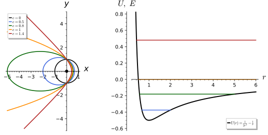
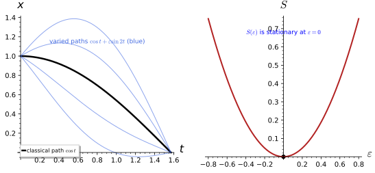
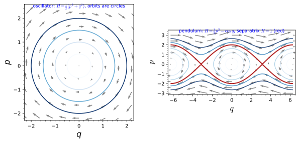
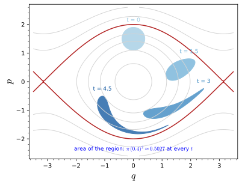
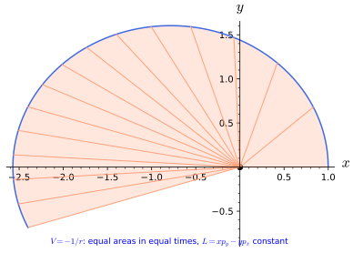
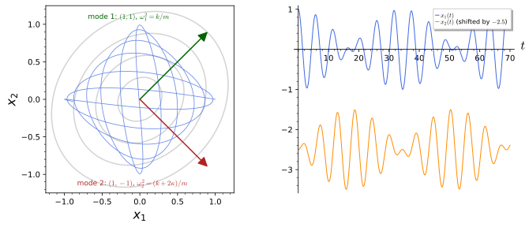

Classical mechanics
Classical mechanics is the physics of particles and rigid bodies moving under forces. Newton’s laws state it directly; the Lagrangian and Hamiltonian formulations restate it through an action principle and through phase space, and in doing so expose the structures (symmetries and conserved quantities, Poisson brackets, canonical transformations, normal modes) that every later theory, classical or quantum, inherits. This chapter has six sections. Newtonian mechanics introduces momentum, force and energy and solves Kepler’s problem. Lagrangian mechanics replaces forces by an action whose stationary paths are the motions, and Hamiltonian mechanics trades velocities for momenta to obtain first-order equations on phase space. Poisson brackets and canonical transformations studies the algebra and the geometry of phase space: the bracket, the transformations that preserve it, Liouville’s theorem and the Hamilton-Jacobi equation. Noether’s theorem derives conserved quantities from symmetries, and small oscillations linearises the motion about an equilibrium, ending with a particle on the sphere and on the group SU(2). Every statement is followed by three examples and three exercises with hidden solutions.
Newtonian mechanics
Newton’s laws describe a particle by its position \vec x(t) \in \mathbb{R}^3 and say how forces change its motion. This section introduces momentum and the second law, the energy of a conservative force, central forces with their conserved angular momentum, and solves the problem that founded the subject: the motion of a planet about the Sun, whose orbits are conic sections. The later sections recast all of this in a form that generalises to constrained systems, to fields and to quantum mechanics.
For more on this topic, see Knauf (2018, Ch. 11), Kotkin and Serbo (2020, sec. 1, §2) and Moretti (2023, Ch. 3-4).
Momentum and force
The state of a particle at an instant is given by its position and its velocity, and the second law determines how the velocity changes. It is stated most economically through the momentum, which is also the quantity that is conserved when particles interact only with each other.
Definition 1 (Momentum) A particle of mass m > 0 moving along \vec x(t) has velocity \vec v = \dot{\vec x} and momentum \vec p = m\vec v. A force \vec F(\vec x, \dot{\vec x}, t) acting on it determines its motion through Newton’s second law \frac{d\vec p}{dt} = \vec F , \tag{1} a second-order differential equation (Ordinary differential equations) whose solution is fixed by \vec x(0) and \dot{\vec x}(0). For several particles the forces they exert on each other come in equal and opposite pairs, \vec F_{12} = -\vec F_{21} (third law).
Veriphy. Pending.
Lean. Pending.
Sage. Pending.
The simplest force is none at all. The second law then says that the momentum does not change, which is Newton’s first law: free particles move on straight lines at constant speed.
Example 1 (The free particle) With \vec F = 0, \dot{\vec p} = 0, so \vec p is constant and \vec x(t) = \vec x_0 + \vec v_0 t: uniform motion on a straight line. The first law is the special case of the second law with no force.
A constant force produces a constant acceleration, and the motion integrates in elementary functions. Near the surface of the Earth the gravitational force is -mg\,\vec e_z, and the second law gives the projectile’s parabola.
Example 2 (Uniform gravity) For \vec F = -mg\,\vec e_z, \dot{\vec p} = -mg\,\vec e_z integrates to \vec x(t) = \vec x_0 + \vec v_0 t - \tfrac12 gt^2\,\vec e_z, a parabola. The horizontal components of \vec p are conserved, because the force has no horizontal component, while p_z decreases at the rate mg (Exercise 1).
For two particles the third law makes the internal forces cancel in the total momentum. The centre of mass therefore moves like a free particle, whatever the particles do to each other.
Example 3 (Two interacting particles) If two particles exert forces \vec F_{12} = -\vec F_{21} on each other and nothing else acts on them, the total momentum \vec P = \vec p_1 + \vec p_2 satisfies \dot{\vec P} = \vec F_{12} + \vec F_{21} = 0. The centre of mass \vec X = (m_1\vec x_1 + m_2\vec x_2)/(m_1 + m_2) moves uniformly, \vec X(t) = \vec X_0 + \vec Pt/(m_1 + m_2) (Exercise 3).
The first exercise solves the projectile problem with Sage and asks which launch angle carries the projectile furthest. It is a direct application of the second law with a constant force.
Exercise 1 (The range of a projectile) Solve m\ddot x = 0, m\ddot z = -mg with Sage’s desolve for a launch at speed v_0 and angle \alpha from the origin, find the range (the distance at which z returns to 0), and the angle that maximises it.
x = v_0t\cos\alpha and z = v_0t\sin\alpha - \tfrac12 gt^2; z = 0 again at t = 2v_0\sin\alpha/g, where x = 2v_0^2\sin\alpha\cos\alpha/g = v_0^2\sin 2\alpha/g, maximal at \alpha = \pi/4 with range v_0^2/g:
t, g, v0, al = var("t g v0 alpha", domain="positive")
x, z = function("x")(t), function("z")(t)
xs = desolve(diff(x, t, 2) == 0, x, ics=[0, 0, v0 * cos(al)], ivar=t)
zs = desolve(diff(z, t, 2) == -g, z, ics=[0, 0, v0 * sin(al)], ivar=t)
print("x(t) =", xs, "; z(t) =", zs.expand())
tland = [s.rhs() for s in solve(zs == 0, t) if s.rhs() != 0][0]
R = xs.subs(t=tland).trig_reduce()
print("landing time:", tland, "; range:", R)
print("range maximal at alpha = pi/4:", bool(diff(R, al).subs({al: pi / 4}) == 0), "; maximal range:", R.subs({al: pi / 4}))Output:
x(t) = t*v0*cos(alpha) ; z(t) = -1/2*g*t^2 + t*v0*sin(alpha)
landing time: 2*v0*sin(alpha)/g ; range: v0^2*sin(2*alpha)/g
range maximal at alpha = pi/4: True ; maximal range: v0^2/gForces that depend on the velocity are common in practice, and the second law handles them just as well. The second exercise treats linear air resistance, for which the momentum decays exponentially.
Exercise 2 (Linear drag) A particle moves on a line under the drag force F = -\gamma v, \gamma > 0. Solve the second law for v(t) with v(0) = v_0 and find the total distance travelled.
m\dot v = -\gamma v gives v(t) = v_0e^{-\gamma t/m}, and x(t) - x(0) = \int_0^t v = \frac{mv_0}{\gamma}(1 - e^{-\gamma t/m}), which tends to mv_0/\gamma: the particle stops after a finite distance, although never in a finite time. The momentum is not conserved, because the force does not vanish.
The two-body problem looks like a problem in six dimensions, but conservation of total momentum reduces it to the motion of a single fictitious particle. The third exercise performs the reduction, which is the first step in solving Kepler’s problem.
Exercise 3 (Reduction of the two-body problem) Two particles interact through \vec F_{12} = \vec f(\vec x_1 - \vec x_2) = -\vec F_{21} (the force on particle 1). Show that the relative coordinate \vec r = \vec x_1 - \vec x_2 satisfies \mu\ddot{\vec r} = \vec f(\vec r) with the reduced mass \mu = m_1m_2/(m_1 + m_2), and express \vec x_1, \vec x_2 through \vec X and \vec r.
\ddot{\vec x}_1 = \vec f/m_1 and \ddot{\vec x}_2 = -\vec f/m_2, so \ddot{\vec r} = \vec f\,(1/m_1 + 1/m_2) = \vec f/\mu. With M = m_1 + m_2, \vec x_1 = \vec X + \frac{m_2}{M}\vec r and \vec x_2 = \vec X - \frac{m_1}{M}\vec r, and \vec X moves uniformly (Example 3). For the Sun and a planet \mu is very close to the planet’s mass, and the Sun barely moves.
Energy
The work done by a force along a path changes the kinetic energy. For a large and important class of forces the work depends only on the endpoints, and then a potential energy can be defined whose sum with the kinetic energy is conserved.
Definition 2 (Conservative force) A force \vec F(\vec x) is conservative if \vec F = -\nabla V for a function V(\vec x), the potential energy. The kinetic energy is T = \tfrac12 m|\dot{\vec x}|^2; along any motion \frac{dT}{dt} = \vec F\cdot \dot{\vec x}, and for a conservative force this is -\frac{dV}{dt}, so the energy E = T + V is conserved. On a simply connected region a force is conservative exactly when \nabla \times \vec F = 0.
Veriphy. Pending.
Lean. Pending.
Sage. Pending.
A spring that pulls towards the origin with a force proportional to the distance is the simplest conservative force. Its potential is quadratic, and energy conservation already shows that the motion is bounded.
Example 4 (Hooke’s law) \vec F = -k\vec x is -\nabla V with V = \tfrac12 k|\vec x|^2. The energy E = \tfrac12 m|\dot{\vec x}|^2 + \tfrac12 k|\vec x|^2 is conserved, so |\vec x| \le \sqrt{2E/k}; on a line the motion is the harmonic oscillator of Section 1.2, x = A\cos(\omega t + \delta) with \omega^2 = k/m.
Newtonian gravity is conservative with a potential inversely proportional to the distance. Energy conservation then answers a question that would otherwise require solving the equations of motion: how fast a body must be thrown to escape.
Example 5 (Newtonian gravity) A mass M at the origin attracts a particle with \vec F = -GMm\,\vec x/|\vec x|^3 = -\nabla V, V = -GMm/|\vec x|. A particle launched from radius R escapes to infinity exactly when E \ge 0, that is with speed at least v_{\mathrm{esc}} = \sqrt{2GM/R} (Exercise 6).
Not every force derives from a potential. A force that circulates around the origin does work along a closed loop, which a gradient never does, and its curl detects the obstruction.
Example 6 (A non-conservative force) \vec F = (-y, x, 0) has \nabla\times\vec F = (0, 0, 2) \neq 0, so it is not a gradient; its work around the unit circle (\cos s, \sin s, 0) is \int_0^{2\pi}(\sin^2 s + \cos^2 s)\,ds = 2\pi \neq 0, while a gradient does no work around a closed loop. Velocity-dependent forces such as drag (Exercise 2) are not conservative either.
The curl criterion is mechanical to apply, and Sage also finds the potential when it exists. The first exercise tests three forces and reconstructs two potentials.
Exercise 4 (Finding potentials) Compute the curl of \vec F_1 = (2xy, x^2, 0), \vec F_2 = (y, -x, 0) and \vec F_3 = -k\vec x/|\vec x|^3, and find a potential for those that are conservative.
\nabla\times\vec F_1 = 0 with V_1 = -x^2y; \nabla\times\vec F_2 = (0, 0, -2), not conservative; \nabla\times\vec F_3 = 0 with V_3 = -k/|\vec x|. Sage checks the curls and that -\nabla V returns the force:
x, y, z, k = var("x y z k", domain="real")
X = vector([x, y, z]); r = sqrt(x**2 + y**2 + z**2)
def curl(F): return vector([diff(F[2], y) - diff(F[1], z), diff(F[0], z) - diff(F[2], x), diff(F[1], x) - diff(F[0], y)])
F1 = vector([2 * x * y, x**2, 0]); F2 = vector([y, -x, 0]); F3 = -k * X / r**3
for name, F in [("F1", F1), ("F2", F2), ("F3", F3)]:
print("curl", name, "=", curl(F).simplify_full())
V1 = -x**2 * y; V3 = -k / r
print("-grad V1 == F1:", bool(-V1.gradient([x, y, z]) == F1), "; -grad V3 == F3:", bool((-V3.gradient([x, y, z]) - F3).simplify_full() == 0))
s = var("s")
print("work of F2 around the unit circle:", integrate(F2.subs(x=cos(s), y=sin(s)) * vector([-sin(s), cos(s), 0]), s, 0, 2 * pi))Output:
curl F1 = (0, 0, 0)
curl F2 = (0, 0, -2)
curl F3 = (0, 0, 0)
-grad V1 == F1: True ; -grad V3 == F3: True
work of F2 around the unit circle: -2*piIn one dimension energy conservation reduces the equation of motion to a single integration. The second exercise uses it to compute the period of the oscillator without solving the differential equation.
Exercise 5 (Motion in one dimension) Show that for m\ddot x = -V'(x) the time to go from x_1 to x_2 is \int_{x_1}^{x_2}dx/\sqrt{2(E - V(x))/m} while \dot x > 0, and use it to show that the period of the oscillator V = \tfrac12 kx^2 is 2\pi\sqrt{m/k} for every amplitude.
From E = \tfrac12 m\dot x^2 + V, \dot x = \sqrt{2(E - V)/m}, so dt = dx/\sqrt{2(E - V)/m}. For the oscillator with amplitude A = \sqrt{2E/k}, \sqrt{2(E - V)/m} = \omega\sqrt{A^2 - x^2} with \omega = \sqrt{k/m}, and the time from -A to A is \frac1\omega\int_{-A}^{A}\frac{dx}{\sqrt{A^2 - x^2}} = \frac{\pi}{\omega}. The period is twice this, 2\pi/\omega = 2\pi\sqrt{m/k}, independent of A.
The escape speed is a statement about energies only. The third exercise evaluates it for the Earth, using the surface gravity g = GM/R^2 to avoid needing G and M separately.
Exercise 6 (Escape speed from the Earth) Derive v_{\mathrm{esc}} = \sqrt{2GM/R} from energy conservation, write it as \sqrt{2gR}, and evaluate it for g = 9. 81\ \mathrm{m/s^2} and R = 6.371\times10^6\ \mathrm{m}.
The particle reaches infinity, where V = 0, with non-negative kinetic energy exactly when E = \tfrac12 mv^2 - GMm/R \ge 0, that is v \ge \sqrt{2GM/R}. Since g = GM/R^2, 2GM/R = 2gR, and \sqrt{2 \times 9.81 \times 6.371 \times 10^6} \approx \sqrt{1.250\times10^8} \approx 1.12\times10^4\ \mathrm{m/s}, about 11.2 km/s.
Central forces
A force that always points towards or away from a fixed centre exerts no torque about that centre. Its angular momentum is then conserved, the motion stays in a plane, and the radial motion becomes a one-dimensional problem in an effective potential.
Definition 3 (Central force) A central force is a force of the form \vec F = f(r)\,\vec x/r, r = |\vec x|; it is conservative, with V(r) = -\int f\,dr. The angular momentum \vec L = \vec x \times \vec p is conserved, since \dot{\vec L} = \dot{\vec x}\times m\dot{\vec x} + \vec x\times\vec F = 0, so the motion lies in the plane through the origin orthogonal to \vec L. In polar coordinates (r, \varphi) in that plane, L = mr^2\dot\varphi and E = \tfrac12 m\dot r^2 + U(r), \qquad U(r) = \frac{L^2}{2mr^2} + V(r) , \tag{2} with the effective potential U: the radial motion is one-dimensional.
Veriphy. Pending.
Lean. Pending.
Sage. Pending.
Conservation of angular momentum has a geometric meaning that Kepler found in the data before Newton explained it. The rate at which the radius vector sweeps area is proportional to the angular momentum, and hence constant.
Example 7 (Equal areas in equal times) In time dt the radius vector sweeps the triangle of area \tfrac12 r^2\,d\varphi, so \frac{dA}{dt} = \tfrac12 r^2\dot\varphi = \frac{L}{2m}, constant for every central force: Kepler’s second law, drawn in Figure 5 of Section 1.5.
For gravity the effective potential is the sum of a repulsive centrifugal barrier and the attractive Newtonian potential. Its minimum is a circular orbit, and its shape decides which orbits are bound.
Example 8 (The Kepler effective potential) For V = -k/r, U = \frac{L^2}{2mr^2} - \frac kr has its minimum at r_0 = L^2/(mk) with U(r_0) = -mk^2/(2L^2) (Figure 1, right). At E = U(r_0) the orbit is a circle; for U(r_0) < E < 0 the radius oscillates between two turning points; for E \ge 0 the particle comes in from infinity and returns to it.
The isotropic oscillator is the other central force whose bounded orbits all close. Here the orbits are ellipses centred at the origin rather than having the origin at a focus.
Example 9 (The isotropic oscillator) For V = \tfrac12 kr^2 every orbit is bounded, U = \frac{L^2}{2mr^2} + \tfrac12 kr^2 \to \infty at both ends. In Cartesian coordinates the motion is x = a\cos\omega t, y = b\cos(\omega t + \delta) with \omega^2 = k/m, an ellipse centred at the origin; Bertrand’s theorem says that -k/r and kr^2 are the only central potentials all of whose bounded orbits close.
The difference between the two potentials appears in small oscillations about a circular orbit. The first exercise compares the radial and angular frequencies and finds why orbits close in both cases.
Exercise 7 (Radial oscillations about a circular orbit) For V = -k/r and V = \tfrac12 kr^2, find the radius r_0 of the circular orbit of angular momentum L, the frequency \omega_r of small radial oscillations (\omega_r^2 = U''(r_0)/m) and the angular frequency \omega_\varphi = L/(mr_0^2). Compare them.
For Kepler r_0 = L^2/(mk) and \omega_r^2 = \omega_\varphi^2 = k/(mr_0^3): one radial oscillation per revolution, and the orbit closes (an ellipse with the centre at a focus). For the oscillator r_0^4 = L^2/(mk), \omega_r^2 = 4k/m and \omega_\varphi^2 = k/m: two radial oscillations per revolution, an ellipse centred at the origin.
r, m, k, L = var("r m k L", domain="positive")
for name, V in [("Kepler -k/r", -k / r), ("oscillator k r^2/2", k * r**2 / 2)]:
U = L**2 / (2 * m * r**2) + V
r0 = [s.rhs() for s in solve(diff(U, r) == 0, r) if bool(s.rhs().subs(m=1, k=1, L=1) == 1)][0]
wr2 = (diff(U, r, 2).subs(r=r0) / m).simplify_full()
wphi2 = ((L / (m * r0**2))**2).simplify_full()
print(name, ": r0 =", r0, "; omega_r^2 =", wr2, "; omega_phi^2 =", wphi2, "; ratio omega_r/omega_phi =", sqrt(wr2 / wphi2).simplify_full())Output:
Kepler -k/r : r0 = L^2/(k*m) ; omega_r^2 = k^4*m^2/L^6 ; omega_phi^2 = k^4*m^2/L^6 ; ratio omega_r/omega_phi = 1
oscillator k r^2/2 : r0 = sqrt(L)*(1/(k*m))^(1/4) ; omega_r^2 = 4*k/m ; omega_phi^2 = k/m ; ratio omega_r/omega_phi = 2The orbit r(\varphi) satisfies a simpler equation than r(t) if one uses u = 1/r as the unknown. The second exercise derives this orbit equation, named after Binet, and solves it for gravity.
Exercise 8 (The orbit equation) Using \dot\varphi = L/(mr^2) to replace d/dt by d/d\varphi, show that u = 1/r satisfies u'' + u = - \frac{m}{L^2u^2}f(1/u), and solve it for f = -k/r^2.
\dot r = -\frac{\dot u}{u^2} = -\frac{u'\dot\varphi}{u^2} = -\frac{L}{m}u' and \ddot r = -\frac Lmu''\dot\varphi = - \frac{L^2}{m^2}u^2u''. The radial equation m\ddot r - mr\dot\varphi^2 = f becomes -\frac{L^2}{m}u^2u'' - \frac{L^2}{m}u^3 = f, that is u'' + u = -\frac{m}{L^2u^2}f(1/u). For f = -ku^2 the right side is the constant mk/L^2, so u = \frac{mk}{L^2}(1 + e\cos(\varphi - \varphi_0)): the conic of Proposition 1.
A circular orbit exists for any attractive force, but it need not be stable. The third exercise finds the power laws for which a slightly disturbed circular orbit stays close to the circle.
Exercise 9 (Stability of circular orbits) For the attractive power law f(r) = -kr^\alpha (k > 0), show that the circular orbit of angular momentum L is a minimum of U (stable) exactly when \alpha > -3.
U'(r) = -\frac{L^2}{mr^3} - f(r), so a circular orbit has kr_0^\alpha = \frac{L^2}{mr_0^3}. Then U''(r_0) = \frac{3L^2}{mr_0^4} - f'(r_0) = \frac{3L^2}{mr_0^4} + k\alpha r_0^{\alpha - 1} = (3 + \alpha)\frac{L^2}{mr_0^4}, which is positive exactly when \alpha > -3. Gravity (\alpha = -2) and the oscillator (\alpha = 1) are stable; an inverse-cube force is marginal, and steeper forces let the particle spiral in or out.
Kepler’s problem
The attractive inverse-square force can be solved completely. Besides energy and angular momentum it conserves a third vector, the Laplace-Runge-Lenz vector, which points to the closest approach and is the reason the orbits close.
Proposition 1 (Kepler orbits) For V = -k/r (k > 0) and angular momentum L \neq 0 the orbit is the conic r = \frac{p}{1 + e\cos(\varphi - \varphi_0)}, \qquad p = \frac{L^2}{mk}, \qquad E = \frac{k(e^2 - 1)}{2p} , \tag{3} an ellipse for E < 0 (0 \le e < 1), a parabola for E = 0 and a hyperbola branch for E > 0. The Laplace-Runge-Lenz vector \vec A = \vec p\times\vec L - mk\,\vec x/r is conserved, orthogonal to \vec L and of length |\vec A|^2 = m^2k^2 + 2mEL^2, that is |\vec A| = mke. A bound orbit with semi-major axis a = p/(1 - e^2) has period T = 2\pi\sqrt{ma^3/k} (Kepler’s third law).
Veriphy. Pending.
Lean. Pending.
Sage. Exact computation (figures/kepler_orbits.sage): the orbit equation, the energy and the conservation and length of \vec A symbolically, the period numerically for e = 1/2.
The circle is the conic with e = 0. It is the orbit at the bottom of the effective potential, and its speed follows from balancing gravity against the centripetal acceleration.
Example 10 (Circular orbits) For e = 0, r = p and E = -k/(2p); the speed v satisfies mv^2/p = k/p^2, so v^2 = k/(mp) and the kinetic energy \tfrac12 mv^2 = k/(2p) is half the potential energy in absolute value, the virial theorem for 1/r potentials. The period is 2\pi p/v = 2\pi\sqrt{mp^3/k}, the third law with a = p.
Planetary orbits are ellipses of small eccentricity. The Earth’s orbit illustrates the formulas: the ratio of the closest to the furthest distance is close to one, and the period fixes the semi-major axis.
Example 11 (The Earth’s orbit) With e \approx 0.0167, perihelion and aphelion are r_\pm = p/(1 \pm e) = a(1 \mp e), in the ratio (1 - e)/(1 + e) \approx 0.967. The third law T^2 = 4\pi^2ma^3/k, with k = GMm, gives T^2/a^3 = 4\pi^2/(GM), the same for all planets: in years and astronomical units, T^2 = a^3 (Exercise 12).
For positive energy the orbit is a hyperbola and the particle is deflected rather than captured. The asymptotes of the conic give the scattering angle, the classical starting point of Rutherford’s analysis.
Example 12 (Hyperbolic orbits and deflection) For e > 1, r \to \infty as \cos(\varphi - \varphi_0) \to -1/e, so the polar angle sweeps 2\arccos(-1/e) > \pi between the two asymptotes and the particle is deflected by \chi = 2\arccos(-1/e) - \pi, that is \sin(\chi/2) = 1/e (Figure 1, e = 1.4): fast or distant particles (e large) are deflected little.

figures/kepler_orbits.sage.
Interactive figure (drag to rotate or zoom); the static version is above.
The orbit can be read off from the Laplace-Runge-Lenz vector without solving any differential equation. The first exercise performs this computation, checking the key identity with Sage.
Exercise 10 (The orbit from the Laplace-Runge-Lenz vector) Show that \vec A\cdot\vec x = L^2 - mkr, and deduce Equation 3 with e = |\vec A|/(mk), \varphi measured from the direction of \vec A.
\vec x\cdot(\vec p\times\vec L) = \vec L\cdot(\vec x\times\vec p) = L^2, so \vec A\cdot\vec x = L^2 - mkr. Writing \vec A\cdot\vec x = |\vec A|r\cos\varphi gives r(|\vec A|\cos\varphi + mk) = L^2, i.e. r = \frac{L^2/(mk)}{1 + (|\vec A|/mk)\cos\varphi}. The vector \vec A points to the pericentre (\varphi = 0):
x, y, z, px, py, pz = var("x y z px py pz", domain="real")
m, k = var("m k", domain="positive")
X = vector([x, y, z]); P = vector([px, py, pz]); r = sqrt(X * X)
Lv = X.cross_product(P); A = P.cross_product(Lv) - m * k * X / r
print("A.x - (L^2 - m k r) =", (A * X - (Lv * Lv - m * k * r)).simplify_full())
# an example: pericentre at (1/(1+e), 0, 0) with p = 1 (m = k = L = 1); A points along +x with length e
e = var("e", domain="positive")
st = {x: 1 / (1 + e), y: 0, z: 0, px: 0, py: 1 + e, pz: 0, m: 1, k: 1}
print("A at the pericentre of the orbit with p = 1:", A.subs(st).simplify_full())Output:
A.x - (L^2 - m k r) = 0
A at the pericentre of the orbit with p = 1: (e, 0, 0)The third law can be derived from the second without integrating the radial equation. The second exercise divides the area of the ellipse by the constant areal velocity.
Exercise 11 (Kepler’s third law) Using the area \pi ab of the ellipse, b = a\sqrt{1 - e^2}, and dA/dt = L/(2m) (Example 7), show that T = 2\pi\sqrt{ma^3/k}.
T = \pi ab\cdot 2m/L, and with L^2 = mkp = mka(1 - e^2) the dependence on e cancels: T^2 = 4\pi^2m^2a^4(1 - e^2)/(mka(1 - e^2)) = 4\pi^2ma^3/k.
a, e, m, k = var("a e m k", domain="positive")
assume(e < 1)
b = a * sqrt(1 - e**2); L = sqrt(m * k * a * (1 - e**2))
T = pi * a * b * 2 * m / L
print("T =", T.simplify_full(), "; T == 2 pi sqrt(m a^3/k):", bool((T**2 - 4 * pi**2 * m * a**3 / k).simplify_full() == 0))Output:
T = 2*pi*sqrt(-e^2 + 1)*a^2*m/sqrt(-(a*e^2 - a)*k*m) ; T == 2 pi sqrt(m a^3/k): TrueComets move on very elongated ellipses, and the third law turns an observed period into the size of the orbit. The third exercise does this for Halley’s comet.
Exercise 12 (Halley’s comet) Halley’s comet has period T \approx 75.3 years and eccentricity e \approx 0.967. Find its semi-major axis, its perihelion and its aphelion distances in astronomical units.
In years and astronomical units T^2 = a^3 (Example 11), so a = 75.3^{2/3} \approx 17.8. The perihelion is a(1 - e) \approx 17.8 \times 0.033 \approx 0.59 AU, inside the orbit of Venus, and the aphelion is a(1 + e) \approx 17.8 \times 1.967 \approx 35 AU, beyond Neptune.
Lagrangian mechanics
Every theory in these lectures is defined by an action: a number assigned to each history of the system, whose stationary histories are the physical ones. The idea is simplest for a particle, where a history is a curve in configuration space and the action is an integral along it, and everything later, fields, gauge fields, gravity, is the same idea with the particle’s position replaced by a field. This section defines configuration spaces, Lagrangians, actions and the Euler-Lagrange equations, and works them on the oscillator, the pendulum and a particle on the sphere.
For more on this topic, see Godinho and Natário (2014, Ch. 5), Knauf (2018, Ch. 8), Kotkin and Serbo (2020, sec. 4, §9), Lee et al. (2018, Ch. 3, Ch. 4-5, Ch. 9) and Moretti (2023, Ch. 7-9, Ch. 5).
Configuration space and the Lagrangian
Newton’s laws are written in Cartesian coordinates, but a constrained system, such as a pendulum or a bead on a wire, has fewer degrees of freedom than its particles have Cartesian coordinates. The first step of the Lagrangian method is to describe the possible positions of the system by a manifold and any convenient coordinates on it.
Definition 4 (Configuration space) The configuration space of a mechanical system is the manifold Q (Definition 6 of Differential geometry) of its possible positions; coordinates q^i on Q are generalised coordinates, and the number of them, \dim Q, is the number of degrees of freedom. A history (or path) is a curve t \mapsto q(t) in Q, with velocity \dot q = dq/dt (Definition 16 of Differential geometry), a tangent vector.
Veriphy. Pending.
Lean. Pending.
Sage. Pending.
The configuration space of an unconstrained particle is ordinary space. Several particles have one copy of space for each, so the dimension grows with the number of particles.
Example 13 (A particle in space) A point particle in \mathbb{R}^3 has Q = \mathbb{R}^3 with Cartesian or spherical coordinates, three degrees of freedom; N particles have Q = \mathbb{R}^{3N}.
Constraints cut the configuration space down to a submanifold. A rigid rod of fixed length restricts a mass to a circle, and a mass tied to a fixed point by a string kept taut moves on a sphere.
Example 14 (Pendulum and particle on a sphere) A pendulum constrained to a circle has Q = S^1 with the angle q as coordinate; a particle constrained to the unit sphere has Q = S^2 with spherical coordinates (\theta, \varphi) (Exercise 28): the configuration spaces of constrained systems are the manifolds of Part I.
A rigid body is the standard example of a configuration space that is a group. Its positions with one point held fixed are the rotations that carry a reference orientation to the actual one.
Example 15 (A rigid body) The orientations of a rigid body with a fixed point form Q = SO(3), three degrees of freedom with the Euler angles as coordinates (The exponential map); a free rigid body has Q = \mathbb{R}^3 \times SO(3). Configuration spaces are often Lie groups or coset spaces.
A rigid body moving in a plane with constraints has a configuration space of small dimension, and its motion at each instant is a rotation about one point. The next example finds that point for a rod sliding along two walls.
Example 16 (A ladder sliding along two walls) A rod AB of length l moves with A on the x-axis and B on the y-axis: one degree of freedom, the angle \theta with A = (l\sin\theta, 0), B = (0, l\cos\theta), so Q is an interval. The velocities of A and B are horizontal and vertical, so the instantaneous centre of rotation, the point of the moving plane at rest at that instant, lies on the vertical through A and the horizontal through B: I = (l\sin\theta, l\cos\theta). Its locus in space is the circle |I| = l about the corner, and its locus in the rod’s frame is the circle with diameter AB, of radius l/2: the motion is the rolling of the second circle inside the first (Sinha 2023, sec. 7.1.5).
Veriphy. Pending.
Lean. Pending.
Sage. Pending.
Counting degrees of freedom and recognising the manifold is a skill worth practising on a few systems. The first exercise asks for both on four mechanical systems.
Exercise 13 (Counting degrees of freedom) Find the configuration space and the number of degrees of freedom of: a double pendulum moving in a plane; a bead on a circular hoop; two particles in space joined by a rigid rod; a particle on the surface of a torus.
The double pendulum has two angles, Q = S^1 \times S^1 = T^2, two degrees of freedom. The bead on a hoop has Q = S^1, one. The torus particle has Q = T^2, two. The rod is treated in Exercise 14: Q = \mathbb{R}^3 \times S^2, five degrees of freedom (6 coordinates minus one constraint).
The rigid rod shows how a constraint and a good choice of coordinates go together. The second exercise separates the position of the rod from its direction.
Exercise 14 (The rigid rod) Two particles of masses m_1, m_2 at fixed distance d have positions \vec x_1, \vec x_2 with |\vec x_1 - \vec x_2| = d. Show that (\vec X, \vec n), with \vec X the centre of mass and \vec n = (\vec x_1 - \vec x_2)/d, identify the configuration space with \mathbb{R}^3 \times S^2, and write the kinetic energy in these variables.
With M = m_1 + m_2, \vec x_1 = \vec X + \frac{m_2d}{M}\vec n and \vec x_2 = \vec X - \frac{m_1d}{M}\vec n, so the pair (\vec X, \vec n) \in \mathbb{R}^3 \times S^2 determines the configuration and conversely. The kinetic energy is \tfrac12 m_1|\dot{\vec x}_1|^2 + \tfrac12 m_2|\dot{\vec x}_2|^2 = \tfrac12 M|\dot{\vec X}|^2 + \tfrac12\mu d^2|\dot{\vec n}|^2, \mu = m_1m_2/M (the cross terms cancel): a free particle in \mathbb{R}^3 plus a particle on the sphere of radius d with the reduced mass.
The rigid body’s configuration space is the rotation group, and Euler angles are coordinates on it. The third exercise checks with Sage that the Euler-angle product of rotations is a rotation for every value of the angles.
Exercise 15 (Euler angles on SO(3)) With R_z(\alpha) and R_x(\alpha) the rotations about the z- and x-axes, show that R = R_z(\varphi)R_x(\theta)R_z(\psi) satisfies R^{\mathsf T}R = 1 and \det R = 1, and that R is the identity for \theta = 0, \varphi + \psi = 0: the chart degenerates there, as the spherical chart does at the poles.
Each factor is orthogonal with determinant one, so the product is; at \theta = 0 the product is R_z(\varphi + \psi), which depends on the sum only:
ph, th, ps = var("phi theta psi", domain="real")
def Rz(a): return matrix([[cos(a), -sin(a), 0], [sin(a), cos(a), 0], [0, 0, 1]])
def Rx(a): return matrix([[1, 0, 0], [0, cos(a), -sin(a)], [0, sin(a), cos(a)]])
R = Rz(ph) * Rx(th) * Rz(ps)
print("R^T R = 1:", bool((R.transpose() * R).simplify_full() == identity_matrix(3)), "; det R = 1:", bool(R.det().simplify_full() == 1))
print("R at theta = 0 equals R_z(phi + psi):", bool((R.subs(theta=0) - Rz(ph + ps)).simplify_full() == 0))
print("R at theta = 0, psi = -phi is the identity:", bool(R.subs(theta=0, psi=-ph).simplify_full() == identity_matrix(3)))Output:
R^T R = 1: True ; det R = 1: True
R at theta = 0 equals R_z(phi + psi): True
R at theta = 0, psi = -phi is the identity: TrueOnce the configuration space is chosen, the dynamics is encoded in a single function of positions and velocities. For the systems of these lectures it is the kinetic energy minus the potential energy, with the kinetic energy given by a metric on the configuration space.
Definition 5 (Lagrangian) A Lagrangian is a smooth function L(q, \dot q, t) of the generalised coordinates, the velocities and possibly time; for a particle of mass m in a potential V it is the kinetic energy minus the potential energy, L = \tfrac12 m\,g_{ij}(q)\dot q^i\dot q^j - V(q), with g_{ij} the metric (Definition 37 of Differential geometry) of the configuration space.
Veriphy. Pending.
Lean. Pending.
Sage. Pending.
The oscillator is the model for every system near a stable equilibrium. Its Lagrangian is the simplest non-trivial one: quadratic in both the position and the velocity.
Example 17 (The harmonic oscillator) L = \tfrac12 m\dot q^2 - \tfrac12 m\omega^2q^2 on Q = \mathbb{R}: kinetic energy minus the potential of a spring of frequency \omega (Exercise 27).
The pendulum keeps the quadratic kinetic energy but has a periodic potential. This makes its equation of motion nonlinear and its motion richer than the oscillator’s.
Example 18 (The pendulum) L = \tfrac12 ml^2\dot q^2 + mgl\cos q on Q = S^1, for a mass m at the end of a rod of length l in gravity g: the kinetic energy of a point moving on a circle of radius l and the potential -mgl\cos q of its height.
On a curved configuration space the kinetic energy involves the metric. A free particle on the sphere has no potential at all, and its whole dynamics comes from the geometry.
Example 19 (A free particle on the sphere) L = \tfrac12(\dot\theta^2 + \sin^2\theta\,\dot\varphi^2), the kinetic energy built from the round metric Equation 22 of Differential geometry with m = 1 and no potential (Exercise 28): the Lagrangian of a free particle on a manifold is half the squared length of its velocity.
A rigid body swinging about a fixed horizontal axis has one degree of freedom, and its Lagrangian involves only its mass, the distance of its centre of mass from the axis, and its moment of inertia. The next example writes it down and finds the simple pendulum that moves in the same way.
Example 20 (The compound pendulum) Let a body of mass M turn about a horizontal axis through O, its centre of mass G at distance h from the axis, with moment of inertia I_O = Mk^2 about the axis (k is the radius of gyration). With \theta the angle of OG from the downward vertical, L = \tfrac12Mk^2\dot\theta^2 + Mgh\cos\theta , which is the Lagrangian of a simple pendulum of length l = k^2/h times Mh/l: the two have the same motion. By the parallel axis theorem k^2 = k_G^2 + h^2, so l = h + k_G^2/h > h; the point at distance l from O on OG is the centre of oscillation (Sinha 2023, sec. 2.4.1).
Veriphy. Pending.
Lean. Pending.
Sage. Pending.
The equivalent length is a ratio of two integrals over the body. The next example evaluates it for a solid cone swinging about its vertex, where both integrals are elementary.
Example 21 (A cone swinging about its vertex) A solid homogeneous cone of height H and half-angle \alpha swings about a horizontal axis through its vertex, perpendicular to its axis. Its centre of mass is at h = \tfrac34H, and its moment of inertia about the axis is I = \tfrac35MH^2\bigl(1 + \tfrac14\tan^2\alpha\bigr), so the equivalent simple pendulum has length l = \frac{I}{Mh} = \frac H5\bigl(4 + \tan^2\alpha\bigr) . A thin cone (\alpha \to 0) swings like a pendulum of length \tfrac45H, the value for a thin rod of mass density growing like the square of the distance (Sinha 2023, sec. 2.4.8).
Veriphy. Pending.
Lean. Pending.
Sage. Pending.
Writing a Lagrangian in curvilinear coordinates only requires expressing the velocity in those coordinates. The first exercise does this for polar coordinates in the plane, the starting point for central forces.
Exercise 16 (Polar coordinates) Substituting x = r\cos\varphi, y = r\sin\varphi, show with Sage that L = \tfrac12 m(\dot x^2 + \dot y^2) - V(r) becomes \tfrac12 m(\dot r^2 + r^2\dot\varphi^2) - V(r), and read off the metric of the plane in polar coordinates.
The metric is dr^2 + r^2d\varphi^2, so g_{rr} = 1, g_{\varphi\varphi} = r^2:
t, m = var("t m")
r, ph = function("r")(t), function("phi")(t)
V = function("V")
x, y = r * cos(ph), r * sin(ph)
L = (m / 2 * (diff(x, t)**2 + diff(y, t)**2)).simplify_full() - V(r)
print("L =", L)
print("L == m/2 (r'^2 + r^2 phi'^2) - V(r):", bool((L - (m / 2 * (diff(r, t)**2 + r**2 * diff(ph, t)**2) - V(r))).simplify_full() == 0))Output:
L = 1/2*m*r(t)^2*diff(phi(t), t)^2 + 1/2*m*diff(r(t), t)^2 - V(r(t))
L == m/2 (r'^2 + r^2 phi'^2) - V(r): TrueA charged particle in a magnetic field has a Lagrangian that is not of the form kinetic minus potential: it has a term linear in the velocity. The second exercise writes it for a uniform field.
Exercise 17 (A charge in a magnetic field) The Lagrangian of a charge q in electromagnetic potentials (\phi, \vec A) is L = \tfrac12 m|\dot{\vec x}|^2 - q\phi + q\dot{\vec x}\cdot\vec A. For a uniform magnetic field \vec B = B\vec e_z described by \vec A = \tfrac12 B(-y, x, 0) and \phi = 0, write L explicitly and check that \nabla\times\vec A = \vec B.
\nabla\times\vec A = (0, 0, \partial_x A_y - \partial_y A_x) = (0, 0, B/2 + B/2) = B\vec e_z, and L = \tfrac12 m(\dot x^2 + \dot y^2 + \dot z^2) + \tfrac12 qB(x\dot y - y\dot x). The magnetic term is qB/2 times the areal velocity form x\dot y - y\dot x; it is linear in the velocities, so the Lagrangian is not kinetic minus potential.
The double pendulum is the standard example of a kinetic energy whose metric depends on the configuration. The third exercise derives its Lagrangian from the Cartesian positions of the two masses.
Exercise 18 (The double pendulum) A mass m_1 hangs from a fixed pivot on a rod of length l_1, and a mass m_2 hangs from m_1 on a rod of length l_2, both moving in a vertical plane with angles \theta_1, \theta_2 from the downward vertical. Compute the Lagrangian with Sage and read off the metric g_{ij}(\theta) of Definition 5.
L = \tfrac12(m_1 + m_2)l_1^2\dot\theta_1^2 + \tfrac12 m_2l_2^2\dot\theta_2^2 + m_2l_1l_2\cos(\theta_1 - \theta_2) \dot\theta_1\dot\theta_2 + (m_1 + m_2)gl_1\cos\theta_1 + m_2gl_2\cos\theta_2; the metric (times the masses) has an off-diagonal entry m_2l_1l_2\cos(\theta_1 - \theta_2) that depends on the configuration:
t, m1, m2, l1, l2, g = var("t m1 m2 l1 l2 g", domain="positive")
th1, th2 = function("theta1")(t), function("theta2")(t)
x1, y1 = l1 * sin(th1), -l1 * cos(th1)
x2, y2 = x1 + l2 * sin(th2), y1 - l2 * cos(th2)
T = m1 / 2 * (diff(x1, t)**2 + diff(y1, t)**2) + m2 / 2 * (diff(x2, t)**2 + diff(y2, t)**2)
V = m1 * g * y1 + m2 * g * y2
L = T - V
expected = (m1 + m2) / 2 * l1**2 * diff(th1, t)**2 + m2 / 2 * l2**2 * diff(th2, t)**2 + m2 * l1 * l2 * cos(th1 - th2) * diff(th1, t) * diff(th2, t) + (m1 + m2) * g * l1 * cos(th1) + m2 * g * l2 * cos(th2)
print("L agrees with the stated formula:", bool((L - expected).simplify_full() == 0))
w1, w2 = var("w1 w2")
Tw = T.subs({diff(th1, t): w1, diff(th2, t): w2})
G = matrix([[diff(Tw, a, b) for b in (w1, w2)] for a in (w1, w2)]).simplify_full()
print("kinetic metric (Hessian of T in the angular velocities):"); print(G.subs({th1: var("q1"), th2: var("q2")}).apply_map(lambda e: e.trig_reduce()))Output:
L agrees with the stated formula: True
kinetic metric (Hessian of T in the angular velocities):
[ l1^2*m1 + l1^2*m2 l1*l2*m2*cos(-q1 + q2)]
[l1*l2*m2*cos(-q1 + q2) l2^2*m2]The period of a compound pendulum depends on where it is hung. The next exercise finds the best point for a simple system of three particles.
Exercise 19 (Three particles on a rod) Three equal particles of mass m are fixed on a weightless rod at distances a apart. The rod swings in a vertical plane about a point of the rod at distance x from the middle particle. Find the period of small oscillations and show that it is least when x = a\sqrt{2/3} (Sinha 2023, sec. 2.4.6).
About the pivot I = m\bigl((x + a)^2 + x^2 + (x - a)^2\bigr) = m(3x^2 + 2a^2), and the centre of mass, the middle particle, is at distance h = x. By Example 20 the period is T = 2\pi\sqrt{(3x^2 + 2a^2)/(3gx)}. The function x + \tfrac{2a^2}{3x} is least where 1 = 2a^2/3x^2, at x = a\sqrt{2/3}, giving T_{\min} = 2\pi\sqrt{2a\sqrt{2/3}/g}. Hung at its centre the rod does not oscillate (T \to \infty), hung far away it is a simple pendulum.
Veriphy. Pending.
Lean. Pending.
Sage. Pending.
Two different suspension points can give the same period, which is the principle of Kater’s reversible pendulum. The next exercise finds all such points.
Exercise 20 (Kater’s pendulum) For a compound pendulum with radius of gyration k_G about the centre of mass, show that the period about an axis at distance h from G equals the period about the parallel axis at distance h' = k_G^2/h on the other side of G, and that h + h' is the length l of the equivalent simple pendulum. Find all axes, parallel to a given one and meeting the line through G perpendicular to it, with the same period. How does this give g without knowing k_G? (Sinha 2023, sec. 2.4.11)
The equivalent length l(h) = h + k_G^2/h is unchanged under h \to k_G^2/h, so the axes at distances h and k_G^2/h from G have the same period, and l = h + h'. On the line through G the four points at distances \pm h and \pm k_G^2/h from G all have the same period. If the period about two knife edges on opposite sides of G at distance d apart is the same and they are not symmetric about G, then d = h + h' = l, and g = 4\pi^2d/T^2 from measured lengths and times alone.
Veriphy. Pending.
Lean. Pending.
Sage. Pending.
The action and the Euler-Lagrange equations
The Lagrangian is integrated along a whole path to give a single number, the action. Comparing the actions of neighbouring paths with the same endpoints singles out the physical motion, as the next definitions and the principle of stationary action make precise.
Definition 6 (Action) The action of a path q(t) between the times t_1 and t_2 is the integral of the Lagrangian along it, S[q] = \int_{t_1}^{t_2} L(q(t), \dot q(t), t)\, dt , \tag{4} a number for each path: a function on the space of paths, called a functional.
Veriphy. Pending.
Lean. Pending.
Sage. Pending.
The free particle is the first test of the definition. Its action along a straight path and along a varied path differ only at second order in the variation.
Example 22 (The free particle) For L = \tfrac12 m\dot q^2 and the straight path q = vt, S = \tfrac12 mv^2T; for the varied path q = vt + \varepsilon\eta(t) with \eta(0) = \eta(T) = 0 the action is \tfrac12 mv^2T + \varepsilon mv(\eta(T) - \eta(0)) + \varepsilon^2 \int \tfrac12 m\dot\eta^2\,dt, and the term linear in \varepsilon vanishes (Proposition 3, Exercise 22).
For the oscillator the action of a family of varied paths can be computed in closed form. The result is a parabola whose minimum sits at the classical path, drawn in the figure below.
Example 23 (The oscillator) For the oscillator with m = \omega = 1 and the paths \cos t + \varepsilon\sin 2t on [0, \pi/2], all with the same endpoints, S(\varepsilon) = \tfrac38\pi\varepsilon^2: a parabola with its minimum at the classical path \cos t (Figure 2, Exercise 22).
On a curved configuration space the action of a free particle is a geometric quantity. It is the energy of the curve of Riemannian geometry, whose stationary curves are the geodesics.
Example 24 (Length and energy of curves) For a free particle on a manifold the action \int\tfrac12 g_{ij}\dot q^i\dot q^j\,dt is the energy of the curve, closely related to its length Equation 21 of Differential geometry: both are stationary on geodesics, and the geodesic equation Equation 39 of Differential geometry is the Euler-Lagrange equation of this action (Exercise 28).

figures/stationary_action.sage.
The action of the classical path itself is a function of the endpoints. The first exercise computes it for the free particle, where everything is explicit.
Exercise 21 (The action of a free path) Compute the action of the classical path of a free particle of mass m from x_1 at time t_1 to x_2 at time t_2, and check that \partial S/\partial x_2 is the momentum at the final point.
The path is x = x_1 + v(t - t_1) with v = (x_2 - x_1)/(t_2 - t_1), so S = \tfrac12 mv^2(t_2 - t_1) = \frac{m(x_2 - x_1)^2}{2(t_2 - t_1)}, and \partial S/\partial x_2 = m(x_2 - x_1)/(t_2 - t_1) = mv, the momentum. This is the first glimpse of Hamilton-Jacobi theory (Definition 15).
Comparing the action of the classical path with the actions of varied paths is best done symbolically. The second exercise does this for the free particle and the oscillator.
Exercise 22 (Varying the action) Compute S(\varepsilon) for the free particle and the oscillator along one-parameter families of paths with fixed endpoints, and check that the linear term vanishes exactly when the reference path is classical.
t, eps, v, T = var("t eps v T", domain="real"); assume(T > 0)
eta = sin(pi * t / T) # vanishes at t = 0 and t = T
x_free = v * t + eps * eta
S_free = integrate(diff(x_free, t)**2 / 2, t, 0, T).simplify_full()
print("free particle: S(eps) =", S_free.expand(), "; dS/deps at 0 =", diff(S_free, eps).subs(eps=0))
x_osc = cos(t) + eps * sin(2 * t) # classical path cos t on [0, pi/2]
S_osc = integrate((diff(x_osc, t)**2 - x_osc**2) / 2, t, 0, pi / 2).simplify_full()
print("oscillator: S(eps) =", S_osc.expand(), "; dS/deps at 0 =", diff(S_osc, eps).subs(eps=0))
x_bad = cos(t) + eps * sin(2 * t) + 0.3 * t * (pi / 2 - t) # not a classical path: a linear term appears
S_bad = integrate((diff(x_bad, t)**2 - x_bad**2) / 2, t, 0, pi / 2).simplify_full()
print("a non-classical reference path gives a non-zero linear term: dS/deps at 0 =", diff(S_bad, eps).subs(eps=0).n(digits=4))Output:
free particle: S(eps) = 1/4*pi^2*eps^2/T + 1/2*T*v^2 ; dS/deps at 0 = 0
oscillator: S(eps) = 3/8*pi*eps^2 ; dS/deps at 0 = 0
a non-classical reference path gives a non-zero linear term: dS/deps at 0 = 0.4500For the oscillator the classical action between two endpoints is also explicit. The third exercise computes it with Sage, a formula that reappears as the phase of the quantum propagator.
Exercise 23 (The classical action of the oscillator) Compute the action of the classical oscillator path from x_1 at t = 0 to x_2 at t = T, with \sin\omega T \neq 0, and show that it equals \frac{m\omega}{2\sin\omega T}\left[(x_1^2 + x_2^2)\cos\omega T - 2x_1x_2\right].
The classical path is x(t) = \frac{x_1\sin\omega(T - t) + x_2\sin\omega t}{\sin\omega T}; integrating \tfrac12 m(\dot x^2 - \omega^2x^2) gives the stated formula:
t, T, m, w, x1, x2 = var("t T m omega x1 x2", domain="positive")
x = (x1 * sin(w * (T - t)) + x2 * sin(w * t)) / sin(w * T)
print("x'' + omega^2 x = 0:", bool((diff(x, t, 2) + w**2 * x).simplify_full() == 0), "; x(0) = x1:", bool(x.subs(t=0) == x1), "; x(T) = x2:", bool(x.subs(t=T).simplify_full() == x2))
S = integrate(m / 2 * (diff(x, t)**2 - w**2 * x**2), t, 0, T)
target = m * w / (2 * sin(w * T)) * ((x1**2 + x2**2) * cos(w * T) - 2 * x1 * x2)
print("S equals m omega/(2 sin omega T) [(x1^2 + x2^2) cos omega T - 2 x1 x2]:", bool((S - target).simplify_full().trig_reduce().simplify_full() == 0))Output:
x'' + omega^2 x = 0: True ; x(0) = x1: True ; x(T) = x2: True
S equals m omega/(2 sin omega T) [(x1^2 + x2^2) cos omega T - 2 x1 x2]: TrueThe examples suggest a general rule: the classical path is the one at which the action does not change to first order. Classical mechanics takes this as its fundamental postulate.
Theorem 1 (Principle of stationary action) The physical paths between fixed endpoints q(t_1), q(t_2) are those at which the action is stationary: \delta S = 0 for every variation \delta q(t) vanishing at the endpoints. Postulate of classical mechanics, from which the Euler-Lagrange equations follow by the computation of Definition 7.
Veriphy. Pending.
Lean. Pending.
Sage. Pending.
For a free particle the principle can be seen directly: the action of any other path with the same endpoints is larger. Here the stationary point is a true minimum.
Example 25 (Straight lines minimise the free action) For any path q(t) = vt + \eta(t) with \eta(0) = \eta(T) = 0, S[q] = \tfrac12 mv^2T + \int_0^T\tfrac12 m\dot\eta^2\,dt \ge S[vt] (Example 22, Exercise 40): the straight line is the unique minimum.
The principle speaks of stationary, not least, action. For the oscillator over a long time interval the classical path is a saddle point of the action, and the next example finds the variation that lowers it.
Example 26 (Stationary but not minimal) For the oscillator on [0, T] and the variation \eta = \sin(\pi t/T), the second-order change of the action is \varepsilon^2\int_0^T\tfrac12 m(\dot\eta^2 - \omega^2\eta^2)\,dt = \varepsilon^2\frac{mT}{4}\left(\frac{\pi^2}{T^2} - \omega^2\right), negative once T > \pi/\omega (Exercise 26): beyond half a period the classical path is no longer a minimum.
The same kind of principle governs light. Fermat’s principle states that rays make the travel time stationary, and it predicts refraction in the same way as the action principle predicts motion.
Example 27 (Fermat’s principle) A light ray between two points takes a path that makes the travel time \int n\,ds/c stationary, n being the refractive index; in a uniform medium the rays are straight lines, and at an interface they bend according to Snell’s law (Exercise 24). The geodesics of Example 24 obey the same kind of principle.
The first exercise derives Snell’s law from Fermat’s principle. It is a one-variable minimisation that shows how a stationarity condition encodes a physical law.
Exercise 24 (Snell’s law) A ray travels from (0, a) in a medium of index n_1 (y > 0) to (d, -b) in a medium of index n_2 (y < 0), crossing the interface y = 0 at (x, 0). Show that stationarity of the travel time gives n_1\sin\alpha_1 = n_2\sin\alpha_2, with \alpha_i the angles from the normal.
The time is c^{-1}\left(n_1\sqrt{x^2 + a^2} + n_2\sqrt{(d - x)^2 + b^2}\right), and its derivative in x vanishes when n_1\frac{x}{\sqrt{x^2 + a^2}} = n_2\frac{d - x}{\sqrt{(d - x)^2 + b^2}}; the two fractions are \sin\alpha_1 and \sin\alpha_2.
Different Lagrangians can describe the same motion. The second exercise shows that a total time derivative added to the Lagrangian changes the action only through the endpoints, which are held fixed.
Exercise 25 (Adding a total derivative) Show that L' = L + \frac{d}{dt}F(q, t) gives S'[q] = S[q] + F(q(t_2), t_2) - F(q(t_1), t_1), so L and L' have the same stationary paths. Check this directly on the Euler-Lagrange equations for F = qt.
\int_{t_1}^{t_2}\frac{dF}{dt}dt = F(q(t_2), t_2) - F(q(t_1), t_1), which does not depend on the path between the fixed endpoints, so \delta S' = \delta S. For F = qt, \frac{dF}{dt} = \dot qt + q adds t to \partial L/\partial\dot q and 1 to \partial L/\partial q, and \frac{d}{dt}(t) - 1 = 0: the Euler-Lagrange equation is unchanged. This freedom is the K of Definition 17.
The third exercise makes Example 26 quantitative. It computes the second variation as a function of the length of the time interval and locates the change of sign.
Exercise 26 (When the action stops being a minimum) For m = \omega = 1, compute with Sage S(\varepsilon) for the paths x_{\mathrm{cl}}(t) + \varepsilon\sin(\pi t/T), where x_{\mathrm{cl}} is the classical path from x(0) = 1 to x(T) = 0 (for T \neq \pi), and find the sign of the coefficient of \varepsilon^2 as a function of T.
The linear term vanishes and the coefficient of \varepsilon^2 is \frac{T}{4}\left(\frac{\pi^2}{T^2} - 1\right) = \frac{\pi^2 - T^2}{4T}, positive for T < \pi and negative for T > \pi: half a period is where the classical path stops being a minimum (it meets a conjugate point).
t, eps = var("t eps", domain="real"); T = var("T", domain="positive")
xcl = sin(T - t) / sin(T) # classical path from x(0) = 1 to x(T) = 0
x = xcl + eps * sin(pi * t / T)
S = integrate((diff(x, t)**2 - x**2) / 2, t, 0, T)
c1 = diff(S, eps).subs(eps=0).simplify_full(); c2 = (diff(S, eps, 2) / 2).simplify_full()
print("linear coefficient:", c1)
print("quadratic coefficient:", c2, "== (pi^2 - T^2)/(4T):", bool((c2 - (pi**2 - T**2) / (4 * T)).simplify_full() == 0))
print("sign at T = 1, 3, 4:", [sign(c2.subs(T=v).n()) for v in [1, 3, 4]])Output:
linear coefficient: 0
quadratic coefficient: 1/4*(pi^2 - T^2)/T == (pi^2 - T^2)/(4T): True
sign at T = 1, 3, 4: [1, 1, -1]The postulate becomes a usable equation once the variation of the action is computed. An integration by parts moves the derivative off the variation, and arbitrariness of the variation then forces a differential equation.
Definition 7 (Euler-Lagrange equations) Varying the action, \delta S = \int_{t_1}^{t_2}\left[\frac{\partial L}{\partial q^i}\delta q^i + \frac{\partial L}{\partial\dot q^i}\delta\dot q^i\right]dt, and integrating the second term by parts (the boundary term vanishes because \delta q(t_1) = \delta q(t_2) = 0) gives \delta S = \int\left[\frac{\partial L}{\partial q^i} - \frac{d}{dt}\frac{\partial L}{\partial\dot q^i}\right]\delta q^i\,dt; stationarity for all \delta q is the system of Euler-Lagrange equations** \frac{d}{dt}\frac{\partial L}{\partial\dot q^i} - \frac{\partial L}{\partial q^i} = 0 , \qquad i = 1, \dots, \dim Q , \tag{5} second-order ordinary differential equations for q(t).
Veriphy. Pending.
Lean. Pending.
Sage. Pending.
For the oscillator the Euler-Lagrange equation is the familiar linear equation of motion. Its solutions are the cosines of Example 23.
Example 28 (The oscillator) \partial L/\partial\dot q = m\dot q and \partial L/\partial q = -m\omega^2q give m\ddot q + m\omega^2 q = 0, solved by q = A\cos(\omega t + \delta) (Proposition 2, Exercise 27).
The pendulum gives a nonlinear equation. Its linearisation for small angles is the oscillator, a first instance of the small oscillations of Section 1.6.
Example 29 (The pendulum) ml^2\ddot q + mgl\sin q = 0, the nonlinear pendulum equation; for small q, \sin q \approx q and it is the oscillator with \omega^2 = g/l (Exercise 27). The phase portrait of Section 1.3 shows the two regimes, oscillation and rotation.
On the sphere the Euler-Lagrange equations of the free particle are the geodesic equations. The Lagrangian route and the geometric route through Christoffel symbols agree.
Example 30 (Geodesics of the sphere) For the free particle on the sphere the equations are \ddot\theta - \sin\theta\cos\theta\,\dot\varphi^2 = 0 and \sin^2\theta\,\ddot\varphi + 2\sin\theta\cos\theta\,\dot\theta\dot\varphi = 0, the geodesic equations of Example 253 of Differential geometry with the Christoffel symbols Equation 36 of Differential geometry (Exercise 28): the particle moves on great circles.
Rolling without slipping is a constraint that ties the rotation to the translation. The next example uses it to reduce a sphere rolling down an incline to one degree of freedom.
Example 31 (A sphere rolling down an incline) A uniform sphere of mass M and radius a rolls without slipping down a plane inclined at \alpha. With x the distance travelled, the angular velocity is \dot x/a, the moment of inertia about a diameter is \tfrac25Ma^2, and L = \tfrac12M\dot x^2 + \tfrac12\cdot\tfrac25Ma^2\Bigl(\frac{\dot x}{a}\Bigr)^2 + Mgx\sin\alpha = \tfrac7{10}M\dot x^2 + Mgx\sin\alpha , so \ddot x = \tfrac57g\sin\alpha: the motion is that of a sliding body under five-sevenths of the force. The friction that enforces rolling is f = M(g\sin\alpha - \ddot x) = \tfrac27Mg\sin\alpha, so the sphere rolls only if the coefficient of friction is at least \tfrac27\tan\alpha (Sinha 2023, sec. 7.2.11 and 7.2.13).
Veriphy. Pending.
Lean. Pending.
Sage. Pending.
The first exercise derives the Euler-Lagrange equations of the three examples symbolically. Sage differentiates the Lagrangian with respect to the velocity and the time, exactly as in the definition.
Exercise 27 (Euler-Lagrange equations with Sage) Derive the Euler-Lagrange equations of the oscillator, the pendulum and the free particle from their Lagrangians, and check that A\cos\omega t solves the oscillator’s.
t, m, w, g, l = var("t m w g l", domain="real")
q = function("q")(t)
def euler_lagrange(L, qname):
# L is an expression in q(t) and diff(q(t), t); the EL equation is d/dt (dL/dqdot) - dL/dq = 0
qd = var("qd"); qq = var("qq")
Lj = L.subs({diff(qname, t): qd}).subs({qname: qq})
return (diff(Lj, qd).subs({qd: diff(qname, t), qq: qname}).diff(t) - diff(Lj, qq).subs({qd: diff(qname, t), qq: qname})).simplify_full()
L_osc = m * diff(q, t)**2 / 2 - m * w**2 * q**2 / 2
print("oscillator: EL equation", euler_lagrange(L_osc, q), "= 0")
A = var("A"); sol = A * cos(w * t)
print("x = A cos(w t) solves it:", bool(euler_lagrange(L_osc, q).subs({q: sol}).simplify_full() == 0) if False else bool((diff(sol, t, 2) + w**2 * sol).simplify_full() == 0))
L_pend = m * l**2 * diff(q, t)**2 / 2 + m * g * l * cos(q)
print("pendulum: EL equation", euler_lagrange(L_pend, q), "= 0 (nonlinear; for small q it is the oscillator with w^2 = g/l)")
L_free = m * diff(q, t)**2 / 2
print("free particle: EL equation", euler_lagrange(L_free, q), "= 0 -> uniform motion q = q0 + v t")Output:
oscillator: EL equation m*w^2*q(t) + m*diff(q(t), t, t) = 0
x = A cos(w t) solves it: True
pendulum: EL equation g*l*m*sin(q(t)) + l^2*m*diff(q(t), t, t) = 0 (nonlinear; for small q it is the oscillator with w^2 = g/l)
free particle: EL equation m*diff(q(t), t, t) = 0 -> uniform motion q = q0 + v tVeriphy. Pending.
Lean.
/-- `ẋ = −A ω sin (ω t)`. -/
theorem osc_deriv (A ω t : ℝ) : deriv (osc A ω) t = -(A * ω * Real.sin (ω * t))KaluzaKlein.Mechanics.osc_deriv in KaluzaKlein/Foundations/Mechanics.lean, namespace KaluzaKlein.Mechanics
Sage. Pending.
The second exercise does the same computation on the sphere and compares it with geometry. SageManifolds supplies the Christoffel symbols of the round metric, and the two sets of equations coincide.
Exercise 28 (A free particle on the sphere) Write the Lagrangian of a free particle on the unit sphere from the round metric, derive its Euler-Lagrange equations, and compare them with the geodesic equations built from SageManifolds’ Christoffel symbols.
import os, sys; sys.path.insert(0, os.path.dirname(os.path.abspath(__file__))); from _curvature import *
M, X, g = chart_metric('th ph', lambda c: [[1, 0], [0, sin(c[0])**2]], ranges='th:(0,pi) ph:(0,2*pi)')
Gam = g.christoffel_symbols(); th, ph = X[:]
t = var("t", domain="real"); TH = function("TH")(t); PH = function("PH")(t)
L = (diff(TH, t)**2 + sin(TH)**2 * diff(PH, t)**2) / 2
def EL(L, f):
fd, ff = var("fd ff")
Lj = L.subs({diff(f, t): fd}).subs({f: ff})
return (diff(Lj, fd).subs({fd: diff(f, t), ff: f}).diff(t) - diff(Lj, ff).subs({fd: diff(f, t), ff: f})).simplify_full()
el_th = EL(L, TH); el_ph = EL(L, PH)
print("theta equation:", el_th, "= 0")
print("phi equation:", el_ph, "= 0")
# geodesic equations x''^k + Gamma^k_ij x'^i x'^j = 0 from the Christoffel symbols
coords = [TH, PH]
geo = [diff(coords[k], t, 2) + sum(Gam[k, i, j].expr().subs({th: TH, ph: PH}) * diff(coords[i], t) * diff(coords[j], t) for i in range(2) for j in range(2)) for k in range(2)]
print("theta geodesic equation equals the EL equation:", bool((geo[0] - el_th).simplify_full() == 0))
print("phi geodesic equation equals the EL equation divided by sin^2(theta):", bool((geo[1] - el_ph / sin(TH)**2).simplify_full() == 0))
print("the momentum conjugate to phi, p_phi = sin^2(theta) phi', is conserved (phi is cyclic): dL/dphi =", diff(L.subs({PH: var('PHv')}), var('PHv')))Output:
theta equation: -cos(TH(t))*sin(TH(t))*diff(PH(t), t)^2 + diff(TH(t), t, t) = 0
phi equation: 2*cos(TH(t))*sin(TH(t))*diff(PH(t), t)*diff(TH(t), t) + sin(TH(t))^2*diff(PH(t), t, t) = 0
theta geodesic equation equals the EL equation: True
phi geodesic equation equals the EL equation divided by sin^2(theta): True
the momentum conjugate to phi, p_phi = sin^2(theta) phi', is conserved (phi is cyclic): dL/dphi = 0The magnetic Lagrangian of Exercise 17 has a velocity-dependent term. The third exercise shows that its Euler-Lagrange equations reproduce the Lorentz force, which makes the charge circle.
Exercise 29 (Cyclotron motion) Derive the Euler-Lagrange equations of L = \tfrac12 m(\dot x^2 + \dot y^2) + \tfrac12 qB(x\dot y - y\dot x), show that they are m\ddot{\vec x} = q\dot{\vec x}\times\vec B, and that the velocity rotates with the cyclotron frequency qB/m.
\partial L/\partial\dot x = m\dot x - \tfrac12 qBy and \partial L/\partial x = \tfrac12 qB\dot y, so m\ddot x - \tfrac12 qB\dot y - \tfrac12 qB\dot y = 0, i.e. m\ddot x = qB\dot y; likewise m\ddot y = -qB\dot x. These are the components of q\dot{\vec x}\times B\vec e_z = qB(\dot y, -\dot x, 0). With w = \dot x + i\dot y, m\dot w = -iqBw, so w = w_0e^{-iqBt/m}: the velocity turns at angular frequency qB/m, and the charge moves on a circle.
Bodies of different shapes roll down the same incline at different rates. The next exercise generalises the previous example and stages a race.
Exercise 30 (A rolling race) A body of mass M, radius a and moment of inertia \kappa Ma^2 about its axis rolls without slipping down an incline. Find its acceleration and the friction it needs. Rank a hoop (\kappa = 1), a disc (\kappa = \tfrac12), a solid sphere (\kappa = \tfrac25) and a spherical shell (\kappa = \tfrac23) released together (Sinha 2023, sec. 7.2.11).
L = \tfrac12M(1 + \kappa)\dot x^2 + Mgx\sin\alpha, so \ddot x = g\sin\alpha/(1 + \kappa), independent of M and a, and the friction is f = \tfrac{\kappa}{1 + \kappa}Mg\sin\alpha, requiring \mu \geq \tfrac{\kappa}{1 + \kappa}\tan\alpha. The order of arrival is solid sphere (\tfrac57), disc (\tfrac23), shell (\tfrac35), hoop (\tfrac12): the smaller the fraction of the energy stored in rotation, the faster the body.
Veriphy. Pending.
Lean. Pending.
Sage. Pending.
The moment of inertia, and with it the equivalent length, is an integral over the body. The next exercise computes several of them with Sage.
Exercise 31 (Equivalent lengths by integration) With Sage, compute the length l = I_O/(Mh) of the equivalent simple pendulum for: a circular wire of radius r about a tangent in its plane and about an axis perpendicular to its plane through a point of the wire; a solid hemisphere of radius a about a diameter of its base; a cube of side 2a about an edge and about a diagonal of one face (Sinha 2023, secs. 2.4.2–2.4.3).
Each moment of inertia is the integral of the squared distance to the axis; the solution uses unit mass:
r, a, th, x, y, z, rho, ph = var('r a th x y z rho ph'); assume(r > 0, a > 0)
# circular wire of radius r in the xy-plane, centre at the origin, unit mass per length
lam = 1 / (2 * pi * r)
X, Y = r * cos(th), r * sin(th)
I_tangent = integrate(lam * (X - r)^2 * r, th, 0, 2 * pi) # axis x = r in the plane (distance |X - r|)
I_perp = integrate(lam * ((X - r)^2 + Y^2) * r, th, 0, 2 * pi) # axis through (r, 0) perpendicular to the plane
print("wire, tangent axis: l =", (I_tangent / r).simplify_full(), " perpendicular axis: l =", (I_perp / r).simplify_full())
# solid hemisphere z >= 0 of radius a, unit total mass; axis: the x-axis (a diameter of the base)
dens = 1 / (2 * pi * a^3 / 3)
I_h = integrate(integrate(integrate(dens * ((rho * sin(th) * sin(ph))^2 + (rho * cos(th))^2) * rho^2 * sin(th), rho, 0, a), th, 0, pi / 2), ph, 0, 2 * pi)
h_h = integrate(integrate(integrate(dens * rho * cos(th) * rho^2 * sin(th), rho, 0, a), th, 0, pi / 2), ph, 0, 2 * pi)
print("hemisphere: I = %s, h = %s, l = %s" % (I_h, h_h, (I_h / h_h).simplify_full()))
# cube [-a, a]^3 of unit mass; edge: the line y = z = a (parallel to x); face diagonal: x = y in the face z = a
dc = 1 / (2 * a)^3
I_edge = integrate(integrate(integrate(dc * ((y - a)^2 + (z - a)^2), x, -a, a), y, -a, a), z, -a, a)
# distance squared from (x, y, z) to the line through (0, 0, a) with direction (1, 1, 0)/sqrt(2)
d2 = x^2 + y^2 + (z - a)^2 - (x + y)^2 / 2
I_diag = integrate(integrate(integrate(dc * d2, x, -a, a), y, -a, a), z, -a, a)
print("cube, edge: I = %s, h = %s, l = %s" % (I_edge, sqrt(2) * a, (I_edge / (sqrt(2) * a)).simplify_full()))
print("cube, face diagonal: I = %s, h = %s, l = %s" % (I_diag, a, (I_diag / a).simplify_full()))Output:
wire, tangent axis: l = 3/2*r perpendicular axis: l = 2*r
hemisphere: I = 2/5*a^2, h = 3/8*a, l = 16/15*a
cube, edge: I = 8/3*a^2, h = sqrt(2)*a, l = 4/3*sqrt(2)*a
cube, face diagonal: I = 5/3*a^2, h = a, l = 5/3*aSo l = \tfrac32r and 2r for the wire, \tfrac{16}{15}a for the hemisphere, and \tfrac{4\sqrt2}{3}a and \tfrac53a for the cube. In every case l > h, as Example 20 requires.
Veriphy. Pending.
Lean. Pending.
Sage. Pending.
The rod of the ladder example also has interesting dynamics. The next exercise follows a ladder sliding down a smooth wall until it leaves the wall.
Exercise 32 (When a ladder leaves the wall) A uniform rod of length 2a slides with its ends on a smooth vertical wall and a smooth floor, starting from rest at angle \theta_0 with the wall. Write the Lagrangian in \theta, find \dot\theta^2 as a function of \theta, and show that the rod leaves the wall when \cos\theta = \tfrac23\cos\theta_0 (Sinha 2023, sec. 7.1.5).
The centre of mass (a\sin\theta, a\cos\theta) moves on a circle of radius a, so T = \tfrac12Ma^2\dot\theta^2 + \tfrac12\cdot\tfrac13Ma^2\dot\theta^2 = \tfrac23Ma^2\dot\theta^2 and V = Mga\cos\theta. Energy conservation gives \dot\theta^2 = \tfrac{3g}{2a}(\cos\theta_0 - \cos\theta). The wall’s normal force is M\ddot x_G with x_G = a\sin\theta; \ddot x_G = a(\ddot\theta\cos\theta - \dot\theta^2\sin\theta), and with \ddot\theta = \tfrac{3g}{4a}\sin\theta this is \tfrac{3g}{4}\sin\theta(3\cos\theta - 2\cos\theta_0), which vanishes and turns negative at \cos\theta = \tfrac23\cos\theta_0: from then on the constraint would have to pull, and the rod leaves the wall.
Veriphy. Pending.
Lean. Pending.
Sage. Pending.
The oscillator’s solution is the template for every solution in this chapter. The following proposition states that the cosine, differentiated twice, reproduces minus \omega^2 times itself, which is the oscillator equation.
Proposition 2 (The oscillator solution) x(t) = A\cos\omega t satisfies \ddot x + \omega^2x = 0.
Veriphy. Pending.
Lean.
KaluzaKlein.Mechanics.osc_euler_lagrange, with the derivative KaluzaKlein.Mechanics.osc_deriv.
/-- The Euler-Lagrange equation `ẍ + ω² x = 0` holds for `x = A cos (ω t)`. -/
theorem osc_euler_lagrange (A ω t : ℝ) : deriv (deriv (osc A ω)) t + ω ^ 2 * osc A ω t = 0KaluzaKlein.Mechanics.osc_euler_lagrange in KaluzaKlein/Foundations/Mechanics.lean, namespace KaluzaKlein.Mechanics
/-- `ẋ = −A ω sin (ω t)`. -/
theorem osc_deriv (A ω t : ℝ) : deriv (osc A ω) t = -(A * ω * Real.sin (ω * t))KaluzaKlein.Mechanics.osc_deriv in KaluzaKlein/Foundations/Mechanics.lean, namespace KaluzaKlein.Mechanics
Sage. Pending.
The cosine with zero phase is one solution among a two-parameter family. The general solution is fixed by the initial position and velocity, and it can be written in two equivalent forms.
Example 32 (The general solution) Since the equation is linear and \cos\omega t, \sin\omega t both solve it, q(t) = q_0\cos\omega t + \frac{v_0}{\omega} \sin\omega t is the solution with q(0) = q_0, \dot q(0) = v_0; it equals A\cos(\omega t + \delta) with A = \sqrt{q_0^2 + v_0^2/\omega^2} (Exercise 33).
The period of the oscillator does not depend on the amplitude. This isochronism is special to the quadratic potential, and the pendulum shows how it fails for larger amplitudes.
Example 33 (Isochronism) Every solution has period 2\pi/\omega, whatever its amplitude (Exercise 5). The pendulum is isochronous only approximately: its period grows with the amplitude and diverges as the amplitude approaches \pi (Exercise 49).
Real oscillators lose energy. Damping adds a term proportional to the velocity, and the solution becomes a cosine inside a decaying exponential.
Example 34 (The damped oscillator) \ddot q + 2\gamma\dot q + \omega^2q = 0 with 0 < \gamma < \omega is solved by q = Ae^{-\gamma t}\cos(\omega_d t + \delta), \omega_d = \sqrt{\omega^2 - \gamma^2} (Ordinary differential equations): the oscillation decays, and the energy is not conserved. The equation still comes from a Lagrangian, although one depending explicitly on time (Exercise 35).
The isochrony of the harmonic oscillator is special. The next example takes a restoring force of constant magnitude, whose period grows with the amplitude.
Example 35 (A force of constant magnitude) For F = -F_0\operatorname{sign}x, that is V = F_0|x|, a particle released from rest at x = A moves with constant acceleration F_0/m towards the origin and reaches it after \sqrt{2mA/F_0}; by symmetry the period is T = 4\sqrt{\frac{2mA}{F_0}} , growing like \sqrt A. The motion is periodic but not harmonic: x(t) is made of parabolic arcs, and its Fourier series contains all odd harmonics (Foulaadvand 2023, Problem 3.3).
Veriphy. Pending.
Lean. Pending.
Sage. Pending.
A short kick changes the velocity at once and leaves the position unchanged. The next example finds the response of an oscillator to such an impulse, which is the building block of its response to any force.
Example 36 (An impulse on an oscillator) A force F(t) = S\,\delta(t), of dimension momentum, integrated across t = 0 changes the momentum by S: \dot x(0^+) - \dot x(0^-) = S/m, with x continuous. An oscillator at rest therefore moves afterwards as x(t) = \tfrac{S}{m\omega}\sin\omega t for t > 0. This is the Green’s function G(t) = \theta(t)\sin(\omega t)/(m\omega), and by superposition the response to any force is x(t) = \int G(t - t')F(t')\,dt'; for a free particle (\omega \to 0) it is the uniform motion St/m after the kick (Foulaadvand 2023, Problem 3.4).
Veriphy. Pending.
Lean. Pending.
Sage. Pending.
The quartic potential is the simplest anharmonic oscillator, and a scaling argument gives the amplitude dependence of its period without solving anything. The next example makes the argument.
Example 37 (The period of a quartic oscillator) For m\ddot x = -kx^3, if x(t) is a solution then so is \lambda x(\lambda t), since both sides scale as \lambda^3. The solution of amplitude \lambda A is therefore the solution of amplitude A run \lambda times faster: T(A) \propto 1/A. Explicitly T = \tfrac{4}{A}\sqrt{\tfrac{2m}{k}}\int_0^1\tfrac{du}{\sqrt{1 - u^4}} = \tfrac{7.416}{A}\sqrt{m/k}. Large oscillations are fast, small ones slow, and the oscillator has no frequency of its own (Foulaadvand 2023, Problem 3.2).
Veriphy. Pending.
Lean. Pending.
Sage. Pending.
The equivalence of the two forms of the general solution is a trigonometric identity. The first exercise works it out and finds the amplitude and the phase.
Exercise 33 (Amplitude and phase) Show that a\cos\omega t + b\sin\omega t = A\cos(\omega t + \delta) with A = \sqrt{a^2 + b^2}, \cos\delta = a/A and \sin\delta = -b/A.
A\cos(\omega t + \delta) = A\cos\delta\cos\omega t - A\sin\delta\sin\omega t; matching coefficients gives A\cos\delta = a and -A\sin\delta = b, so A^2 = a^2 + b^2 and the stated \cos\delta, \sin\delta.
Sage’s desolve solves linear equations with constant coefficients and initial conditions. The second exercise uses it on the undamped and the damped oscillator.
Exercise 34 (Solving the oscillator with Sage) Solve \ddot q + \omega^2q = 0 and \ddot q + 2\gamma\dot q + \omega^2q = 0 (\gamma < \omega) with q(0) = q_0, \dot q(0) = v_0 using desolve, and compare with Example 32 and Example 34.
The undamped solution is q_0\cos\omega t + (v_0/\omega)\sin\omega t; the damped one is e^{-\gamma t}\left(q_0\cos \omega_dt + \frac{v_0 + \gamma q_0}{\omega_d}\sin\omega_dt\right):
t = var("t"); w, g, q0, v0 = var("omega gamma q0 v0", domain="positive")
assume(w > g)
q = function("q")(t)
s1 = desolve(diff(q, t, 2) + w**2 * q == 0, q, ics=[0, q0, v0], ivar=t)
print("undamped:", s1)
s2 = desolve(diff(q, t, 2) + 2 * g * diff(q, t) + w**2 * q == 0, q, ics=[0, q0, v0], ivar=t)
print("damped:", s2)
wd = sqrt(w**2 - g**2)
print("damped solution == e^(-gamma t)(q0 cos wd t + (v0 + gamma q0)/wd sin wd t):", bool((s2 - exp(-g * t) * (q0 * cos(wd * t) + (v0 + g * q0) / wd * sin(wd * t))).canonicalize_radical().simplify_full() == 0))Output:
undamped: q0*cos(omega*t) + v0*sin(omega*t)/omega
damped: 1/2*(2*q0*cos(1/2*sqrt(-4*gamma^2 + 4*omega^2)*t) - (sqrt(-4*gamma^2 + 4*omega^2)*gamma*q0 + sqrt(-4*gamma^2 + 4*omega^2)*v0)*sin(1/2*sqrt(-4*gamma^2 + 4*omega^2)*t)/(gamma^2 - omega^2))*e^(-gamma*t)
damped solution == e^(-gamma t)(q0 cos wd t + (v0 + gamma q0)/wd sin wd t): TrueA time-dependent Lagrangian can produce friction. The third exercise checks that an exponential factor in front of the oscillator Lagrangian gives the damped equation.
Exercise 35 (A Lagrangian for damping) Show with Sage that L = e^{2\gamma t}\left(\tfrac12\dot q^2 - \tfrac12\omega^2q^2\right) has the Euler-Lagrange equation \ddot q + 2\gamma\dot q + \omega^2q = 0.
\frac{d}{dt}(e^{2\gamma t}\dot q) = e^{2\gamma t}(\ddot q + 2\gamma\dot q) and \partial L/\partial q = -e^{2\gamma t}\omega^2q; dividing the Euler-Lagrange equation by e^{2\gamma t} gives the damped equation:
t, g, w, Q, V = var("t gamma omega Q V")
L = exp(2 * g * t) * (V**2 - w**2 * Q**2) / 2
q = function("q")(t)
on = {Q: q, V: diff(q, t)}
EL = diff(diff(L, V).subs(on), t) - diff(L, Q).subs(on)
print("EL / e^(2 gamma t) =", (EL / exp(2 * g * t)).simplify_full())Output:
EL / e^(2 gamma t) = omega^2*q(t) + 2*gamma*diff(q(t), t) + diff(q(t), t, t)The two previous examples are cases of a single scaling law. The next exercise computes periods with Sage for a family of power-law potentials, both from the period integral and from a numerical solution.
Exercise 36 (Periods in power-law potentials) For V = k|x|^p/p with m = k = 1, compute with Sage T(A) = 4\int_0^A dx/\sqrt{2(V(A) - V(x))} for p = 1, 2, 3, 4 and A = 0.5, 1, 2, check T \propto A^{1 - p/2}, and compare with a numerical solution of \ddot x = -\operatorname{sign}(x)|x|^{p - 1} at A = 1 (Foulaadvand 2023, Problem 3.2).
Substituting x = Au in the integral gives T(A) = A^{1 - p/2}T(1):
def T_int(p, A):
f = lambda u: 1 / sqrt(2 * (A^p - (A * u)^p) / p) * A # x = A u
return 4 * numerical_integral(f, 0, 1)[0]
def T_ode(p, A):
t = var('t'); xs = var('xs'); vs = var('vs')
sol = desolve_odeint([vs, -sgn(xs) * abs(xs)^(p - 1)], [A, 0], srange(0, 40, 0.001), [xs, vs])
# the velocity first changes sign from negative to positive at x = -A, after half a period
ts = srange(0, 40, 0.001)
for i in range(1, len(ts)):
if sol[i - 1][1] < 0 <= sol[i][1]:
return 2 * ts[i]
for p in (1, 2, 3, 4):
vals = [(A, T_int(p, A)) for A in (0.5, 1.0, 2.0)]
print("p = %d: T(A) for A = 0.5, 1, 2: %s; T(2)/T(1) = %.4f, 2^(1 - p/2) = %.4f; ODE at A = 1: %.3f" %
(p, [round(v, 4) for _, v in vals], vals[2][1] / vals[1][1], 2^(1 - p / 2), T_ode(p, 1.0)))
print("p = 1 closed form 4 sqrt(2 A) at A = 1:", (4 * sqrt(2.0)).n(digits=6))Output:
p = 1: T(A) for A = 0.5, 1, 2: [4.0, 5.6569, 8.0]; T(2)/T(1) = 1.4142, 2^(1 - p/2) = 1.4142; ODE at A = 1: 5.658
p = 2: T(A) for A = 0.5, 1, 2: [6.2832, 6.2832, 6.2832]; T(2)/T(1) = 1.0000, 2^(1 - p/2) = 1.0000; ODE at A = 1: 6.284
p = 3: T(A) for A = 0.5, 1, 2: [9.7146, 6.8693, 4.8573]; T(2)/T(1) = 0.7071, 2^(1 - p/2) = 0.7071; ODE at A = 1: 6.870
p = 4: T(A) for A = 0.5, 1, 2: [14.8326, 7.4163, 3.7081]; T(2)/T(1) = 0.5000, 2^(1 - p/2) = 0.5000; ODE at A = 1: 7.418
p = 1 closed form 4 sqrt(2 A) at A = 1: 5.65685Only p = 2 is isochronous. For p = 1 the integral reproduces 4\sqrt{2A} of Example 35, for p = 4 the 7.416/A of Example 37; the numerical solutions agree to the step size.
Veriphy. Pending.
Lean. Pending.
Sage. Pending.
The previous example is also easy to check directly. The next exercise derives its period from the equations of motion and asks for the energy dependence.
Exercise 37 (Period and energy) For V = F_0|x|, derive the period T = 4\sqrt{2mA/F_0} and write it as a function of the energy E. Compare with the Bohr-Sommerfeld rule \oint p\,dx = 2\pi\hbar(n + \tfrac12), which the quantum mechanics chapter derives in Example 121 of Quantum mechanics: how are the quantum levels spaced at large n? (Foulaadvand 2023, Problem 3.3)
From x = A - \tfrac{F_0}{2m}t^2 the origin is reached at t = \sqrt{2mA/F_0}, a quarter period. With E = F_0A, T = 4\sqrt{2mE}/F_0. The action J = \oint p\,dx = 4\int_0^A\sqrt{2m(E - F_0x)}\,dx = \tfrac{8\sqrt{2m}}{3F_0}E^{3/2}, and dJ/dE = T as it must. Setting J = 2\pi\hbar(n + \tfrac12) gives E_n \propto (n + \tfrac12)^{2/3}, levels that get closer at large n, with spacing \hbar\cdot2\pi/T(E_n); the exact levels are zeros of Airy functions.
Veriphy. Pending.
Lean. Pending.
Sage. Pending.
The principle of stationary action can be checked by hand for the free particle. The next proposition records that the first-order change of the action vanishes, because the integrand is a total derivative and the variation vanishes at both endpoints.
Proposition 3 (Stationarity for the free particle) For the varied path vt + \varepsilon\eta(t) with \eta(0) = \eta(T) = 0, the term of the action linear in \varepsilon, \int_0^T v\,\varepsilon\dot\eta\,dt, vanishes.
Veriphy. Pending.
Lean.
KaluzaKlein.Mechanics.free_action_stationary, proved by the fundamental theorem of calculus.
/-- Stationary action for the free particle: for the varied path `x(t) = v t + ε η(t)` with `η(0) = η(T) = 0`,
the action `∫₀ᵀ ½ ẋ² dt = ½ v² T + ε v (η(T) − η(0)) + ε² ∫ ½ η̇²` has no term linear in `ε`.
Stated as the vanishing of the linear coefficient, with the integral of `η̇` evaluated by the boundary values. -/
theorem free_action_stationary (v T ε : ℝ) (η : ℝ → ℝ) (hη : ∀ t, HasDerivAt η (deriv η t) t)
(hint : IntervalIntegrable (deriv η) MeasureTheory.volume 0 T) (h0 : η 0 = 0) (hT : η T = 0) :
∫ t in (0 : ℝ)..T, v * (ε * deriv η t) = 0KaluzaKlein.Mechanics.free_action_stationary in KaluzaKlein/Foundations/Mechanics.lean, namespace KaluzaKlein.Mechanics
Sage. Pending.
The vanishing of the linear term leaves a quadratic term that is never negative. The free action is therefore minimal on the straight line, not merely stationary.
Example 38 (The quadratic term) The full varied action is S(\varepsilon) = \tfrac12 mv^2T + \varepsilon^2\int_0^T\tfrac12 m\dot\eta^2\,dt (Example 22), a parabola in \varepsilon opening upwards unless \eta is constant, which with \eta(0) = 0 means \eta = 0.
A specific variation makes the parabola explicit. The half sine is the lowest mode that vanishes at both ends, and its action is simple to compute.
Example 39 (A half-sine variation) For \eta = \sin(\pi t/T), \int_0^T\tfrac12 m\dot\eta^2\,dt = \tfrac12 m\frac{\pi^2}{T^2}\cdot\frac T2 = \frac{m\pi^2}{4T}, so S(\varepsilon) = \tfrac12 mv^2T + \frac{m\pi^2}{4T}\varepsilon^2.
The fixed endpoints are essential. If the variation moves an endpoint the linear term no longer vanishes, and the classical path is not stationary among such paths.
Example 40 (Moving endpoints) For \eta(t) = t, which moves the endpoint at T, the linear term is \varepsilon\int_0^Tmv\,dt = \varepsilon mvT = \varepsilon mv(\eta(T) - \eta(0)) \neq 0: it is the boundary term p\,\delta q that the integration by parts of Definition 7 discards.
The first exercise repeats the computation of the proposition with Sage for a polynomial variation. Sage expands the action in \varepsilon and isolates each power.
Exercise 38 (A polynomial variation) For the free particle with \eta(t) = t(T - t), compute S(\varepsilon) with Sage and check that it has no linear term and quadratic coefficient mT^3/6.
\dot\eta = T - 2t and \int_0^T(T - 2t)^2dt = T^3/3, so the quadratic term is \varepsilon^2mT^3/6:
t, eps = var("t eps"); m, v, T = var("m v T", domain="positive")
x = v * t + eps * t * (T - t)
S = integrate(m / 2 * diff(x, t)**2, t, 0, T).expand()
print("S(eps) =", S.collect(eps))
print("linear coefficient:", S.coefficient(eps, 1), "; quadratic coefficient:", S.coefficient(eps, 2))Output:
S(eps) = 1/6*T^3*eps^2*m + 1/2*T*m*v^2
linear coefficient: 0 ; quadratic coefficient: 1/6*T^3*mThe same integration by parts works with a potential, provided the reference path solves the equation of motion. The second exercise checks it for uniform gravity.
Exercise 39 (The linear term with a potential) For L = \tfrac12 m\dot q^2 - mgq and the classical path q_{\mathrm{cl}}(t), show that the term of S[q_{\mathrm{cl}} + \varepsilon\eta] linear in \varepsilon vanishes for every \eta with \eta(0) = \eta(T) = 0.
The linear term is \varepsilon\int_0^T(m\dot q_{\mathrm{cl}}\dot\eta - mg\eta)\,dt = \varepsilon\left[m\dot q_{\mathrm{cl}}\eta\right]_0^T - \varepsilon\int_0^T(m\ddot q_{\mathrm{cl}} + mg)\eta\,dt. The boundary term vanishes since \eta(0) = \eta(T) = 0, and the integrand vanishes since \ddot q_{\mathrm{cl}} = -g.
The proposition concerns one-parameter families, but the conclusion holds for every competing path. The third exercise proves that the straight line minimises the free action among all paths with the same endpoints.
Exercise 40 (The free action is minimal) Show that every path q(t) with q(0) = 0 and q(T) = vT has S[q] = \tfrac12 mv^2T + \tfrac12 m\int_0^T(\dot q - v)^2dt, so the straight line is the unique minimum.
Write \dot q = v + \dot\eta with \eta = q - vt, so \eta(0) = \eta(T) = 0 and \int_0^T\dot\eta\,dt = 0. Then \int_0^T\dot q^2 = v^2T + 2v\int_0^T\dot\eta + \int_0^T\dot\eta^2 = v^2T + \int_0^T(\dot q - v)^2. The extra term is non-negative and vanishes only for \dot q = v everywhere, the straight line.
Hamiltonian mechanics
Trading velocities for momenta turns the second-order Euler-Lagrange equations into first-order flow equations on phase space, with the energy as generator, and gives mechanics the algebraic structure, the Poisson bracket, that quantisation replaces by commutators. This section defines momenta, the Hamiltonian, Hamilton’s equations, phase space and the Poisson bracket, with the oscillator and the pendulum as examples.
For more on this topic, see Knauf (2018, Ch. 6), Moretti (2023, Ch. 11-13), Rudolph and Schmidt (2013, Ch. 7-8, Ch. 9), Castillo (2020, Ch. 8) and Williams (2023, sec. 2.9).
Momenta and the Hamiltonian
The Euler-Lagrange equation involves the derivative of the Lagrangian with respect to a velocity. This quantity deserves a name of its own, because it is the momentum of Newtonian mechanics in simple cases and a conserved quantity whenever the Lagrangian ignores the corresponding coordinate.
Definition 8 (Canonical momentum) The canonical momentum conjugate to the coordinate q^i is p_i = \partial L/\partial\dot q^i, a component of a covector (Definition 24 of Differential geometry) on the configuration space; the Euler-Lagrange equation Equation 5 reads \dot p_i = \partial L/\partial q^i.
Veriphy. Pending.
Lean. Pending.
Sage. Pending.
For a particle with a quadratic kinetic energy the canonical momentum is the ordinary momentum. On a curved configuration space it is the velocity with its index lowered by the metric.
Example 41 (Linear momentum) For L = \tfrac12 m\dot q^2 - V, p = m\dot q, the ordinary momentum (Exercise 48); for the free particle on a manifold, p_i = g_{ij}\dot q^j, the velocity with its index lowered (Definition 43 of Differential geometry).
When the coordinate is an angle, the conjugate momentum is an angular momentum. The sphere and the pendulum both illustrate this.
Example 42 (Angular momentum) For the particle on the sphere, p_\varphi = \sin^2\theta\,\dot\varphi, the angular momentum about the Z-axis (Exercise 28); for the pendulum p = ml^2\dot q, the angular momentum about the pivot.
A coordinate that does not appear in the Lagrangian gives a conservation law at once. This is the first and simplest link between symmetries and conserved quantities.
Example 43 (Cyclic coordinates) If L does not depend on q^i (a cyclic coordinate), then \dot p_i = 0: p_i is conserved. \varphi is cyclic for the particle on the sphere, so p_\varphi is conserved; this is the simplest case of Noether’s theorem (Section 1.5).
Polar coordinates in the plane provide the first exercise. Here the angular coordinate is cyclic for every central potential, and its momentum is the angular momentum of Definition 3.
Exercise 41 (Momenta in polar coordinates) For L = \tfrac12 m(\dot r^2 + r^2\dot\varphi^2) - V(r) compute p_r and p_\varphi, write the Euler-Lagrange equations as \dot p_i = \partial L/\partial q^i, and identify the conserved momentum.
p_r = m\dot r and p_\varphi = mr^2\dot\varphi. Then \dot p_r = mr\dot\varphi^2 - V'(r), the radial equation with its centrifugal term, and \dot p_\varphi = \partial L/\partial\varphi = 0: p_\varphi = mr^2\dot\varphi = L is the conserved angular momentum.
With a magnetic field the canonical momentum differs from m\dot{\vec x}. The second exercise shows that whether a component is conserved depends on the choice of vector potential, not only on the physics.
Exercise 42 (Canonical and kinetic momentum) For a charge in a uniform field B\vec e_z, compute the canonical momenta for \vec A = \tfrac12 B(-y, x, 0) and for \vec A = (-By, 0, 0). In which gauge is a component of \vec p conserved, and what does its conservation say?
In general \vec p = m\dot{\vec x} + q\vec A. In the symmetric gauge p_x = m\dot x - \tfrac12 qBy, p_y = m\dot y + \tfrac12 qBx, and neither x nor y is cyclic. In the gauge \vec A = (-By, 0, 0), L = \tfrac12 m|\dot{\vec x}|^2 - qB\dot xy does not contain x, so p_x = m\dot x - qBy is conserved. With m\ddot x = qB\dot y (Exercise 29) this says that y - m\dot x/(qB), the y-coordinate of the centre of the circular orbit, is constant.
For the double pendulum the momenta are linear in the angular velocities with a configuration-dependent matrix. The third exercise computes them and checks that the matrix can be inverted, which the Legendre transform requires.
Exercise 43 (Momenta of the double pendulum) From the Lagrangian of Exercise 18 compute p_1, p_2 with Sage, write p = M(\theta)\dot\theta, and show that \det M = m_2l_1^2l_2^2(m_1 + m_2\sin^2(\theta_1 - \theta_2)) > 0.
p_1 = (m_1 + m_2)l_1^2\dot\theta_1 + m_2l_1l_2\cos(\theta_1 - \theta_2)\dot\theta_2 and p_2 = m_2l_2^2\dot\theta_2 + m_2l_1l_2\cos(\theta_1 - \theta_2)\dot\theta_1; the determinant is positive, so the velocities can be solved for:
m1, m2, l1, l2, g = var("m1 m2 l1 l2 g", domain="positive")
q1, q2, w1, w2 = var("q1 q2 w1 w2", domain="real")
L = (m1 + m2) / 2 * l1**2 * w1**2 + m2 / 2 * l2**2 * w2**2 + m2 * l1 * l2 * cos(q1 - q2) * w1 * w2 + (m1 + m2) * g * l1 * cos(q1) + m2 * g * l2 * cos(q2)
p1, p2 = diff(L, w1), diff(L, w2)
print("p1 =", p1); print("p2 =", p2)
M = jacobian([p1, p2], [w1, w2])
print("M ="); print(M)
print("det M == m2 l1^2 l2^2 (m1 + m2 sin^2(q1 - q2)):", bool((M.det() - m2 * l1**2 * l2**2 * (m1 + m2 * sin(q1 - q2)**2)).simplify_full() == 0))Output:
p1 = l1*l2*m2*w2*cos(q1 - q2) + l1^2*(m1 + m2)*w1
p2 = l1*l2*m2*w1*cos(q1 - q2) + l2^2*m2*w2
M =
[ l1^2*(m1 + m2) l1*l2*m2*cos(q1 - q2)]
[l1*l2*m2*cos(q1 - q2) l2^2*m2]
det M == m2 l1^2 l2^2 (m1 + m2 sin^2(q1 - q2)): TrueWith the momenta in hand the velocities can be eliminated in favour of momenta. The Legendre transform does this and produces the function that generates the time evolution.
Definition 9 (Hamiltonian) When \dot q can be solved for in terms of p, the Hamiltonian is the Legendre transform of the Lagrangian, H(q, p, t) = p_i\dot q^i - L(q, \dot q, t) \Big|_{\dot q = \dot q(q, p)} , \tag{6} a function on phase space; for L = \tfrac12 m\dot q^2 - V it is the energy H = p^2/2m + V.
Veriphy. Pending.
Lean. Pending.
Sage. Pending.
For the oscillator the Hamiltonian is the energy as a quadratic form in q and p. Its level sets are ellipses, circles in suitable units.
Example 44 (The oscillator) H = \frac{p^2}{2m} + \tfrac12 m\omega^2q^2 (Exercise 48); for m = \omega = 1, H = \tfrac12(p^2 + q^2), whose level sets are the circles of Figure 3.
The pendulum’s Hamiltonian has two kinds of level sets. They correspond to swinging and to going over the top. The energy H = 1 of the inverted position separates the two.
Example 45 (The pendulum) H = \frac{p^2}{2ml^2} - mgl\cos q; for m = l = g = 1, H = \tfrac12 p^2 - \cos q, with level sets the curves of Figure 3, closed for H < 1 (oscillation) and open for H > 1 (rotation).
For the free particle on a manifold the Hamiltonian involves the inverse metric. It is the same quadratic form as the Lagrangian, now evaluated on the momentum covector.
Example 46 (The sphere) H = \tfrac12\left(p_\theta^2 + \frac{p_\varphi^2}{\sin^2\theta}\right) = \tfrac12 g^{ij}p_ip_j: for a free particle on a manifold the Hamiltonian is half the squared length of the momentum covector, with the inverse metric (Definition 40 of Differential geometry).
The first exercise is a direct Legendre transform for the central-force Lagrangian. It shows how the angular momentum enters the Hamiltonian as a centrifugal potential.
Exercise 44 (The central-force Hamiltonian) Compute the Hamiltonian of L = \tfrac12 m(\dot r^2 + r^2\dot\varphi^2) - V(r) and compare it with Equation 2.
\dot r = p_r/m and \dot\varphi = p_\varphi/(mr^2) give H = p_r\dot r + p_\varphi\dot\varphi - L = \frac{p_r^2}{2m} + \frac{p_\varphi^2}{2mr^2} + V(r). With p_\varphi = L constant this is \tfrac12 m\dot r^2 + U(r), the energy with the effective potential.
The second exercise performs the Legendre transform on the sphere. It confirms the general formula with the inverse metric. The computation is short, because the metric is diagonal.
Exercise 45 (The Hamiltonian on the sphere) Compute the momenta and the Hamiltonian of the free particle on the unit sphere, and show that H = \tfrac12 g^{ij}p_ip_j.
p_\theta = \dot\theta and p_\varphi = \sin^2\theta\,\dot\varphi, so \dot\theta = p_\theta, \dot\varphi = p_\varphi/\sin^2\theta and H = p_\theta\dot\theta + p_\varphi\dot\varphi - L = p_\theta^2 + p_\varphi^2/\sin^2\theta - \tfrac12(p_\theta^2 + p_\varphi^2/\sin^2\theta) = \tfrac12(p_\theta^2 + p_\varphi^2/\sin^2\theta), which is \tfrac12 g^{ij}p_ip_j with g^{\theta\theta} = 1, g^{\varphi\varphi} = 1/\sin^2\theta (Proposition 13 of Differential geometry).
The magnetic Lagrangian is linear in the velocity, and its Legendre transform introduces the combination \vec p - q\vec A. The third exercise computes it with Sage.
Exercise 46 (The Hamiltonian of a charge) Compute with Sage the Legendre transform of L = \tfrac12 m|\dot{\vec x}|^2 - q\phi + q\dot{\vec x}\cdot\vec A for arbitrary functions \phi(\vec x) and \vec A(\vec x), and show that H = \frac{|\vec p - q\vec A|^2}{2m} + q\phi.
\vec p = m\dot{\vec x} + q\vec A gives \dot{\vec x} = (\vec p - q\vec A)/m, and the Legendre transform is the stated H: the magnetic field does not appear in the energy, only in the relation between momentum and velocity.
x, y, z, vx, vy, vz, px, py, pz = var("x y z vx vy vz px py pz", domain="real")
m, q = var("m q", domain="positive")
phi = function("phi")(x, y, z); A = vector([function("A%d" % i)(x, y, z) for i in (1, 2, 3)])
v = vector([vx, vy, vz]); P = vector([px, py, pz])
L = m / 2 * v * v - q * phi + q * v * A
mom = [diff(L, c) for c in v]
print("p = m v + q A:", all(bool(mom[i] == m * v[i] + q * A[i]) for i in range(3)))
sol = solve([P[i] == mom[i] for i in range(3)], [vx, vy, vz], solution_dict=True)[0]
H = (P * v - L).subs(sol)
print("H - (|p - qA|^2/(2m) + q phi) =", (H - ((P - q * A) * (P - q * A) / (2 * m) + q * phi)).simplify_full())Output:
p = m v + q A: True
H - (|p - qA|^2/(2m) + q phi) = 0Hamilton’s equations replace the Euler-Lagrange equations. They are first order, twice as many, and symmetric between coordinates and momenta up to a sign.
Definition 10 (Hamilton’s equations) The Euler-Lagrange equations are equivalent to Hamilton’s equations \dot q^i = \frac{\partial H}{\partial p_i}, \qquad \dot p_i = -\frac{\partial H}{\partial q^i} , \tag{7} first-order equations on phase space; along their solutions dH/dt = \partial H/\partial t, so H is conserved when it does not depend on time explicitly.
Veriphy. Pending.
Lean. Pending.
Sage. Pending.
For the oscillator Hamilton’s equations rotate the phase plane. The energy, the radius of the circle, is constant. The solution is the cosine of Section 1.2 together with its momentum.
Example 47 (The oscillator flow) \dot q = p/m, \dot p = -m\omega^2q, solved by q = A\cos\omega t, p = -mA\omega\sin\omega t (Proposition 4, Exercise 48): a rotation in phase space at angular speed \omega, with H = \tfrac12 mA^2\omega^2 constant.
For the pendulum the flow follows the level curves of the Hamiltonian. The separatrix through the inverted position separates oscillation from rotation.
Example 48 (The pendulum flow) \dot q = p, \dot p = -\sin q: the vector field of Figure 3, whose orbits are the level curves of H; the separatrix H = 1 passes through the unstable equilibrium q = \pi, p = 0.
For a free particle on a manifold, Hamilton’s equations are the geodesic equation. The geodesic flow is thus a Hamiltonian flow.
Example 49 (Geodesic flow) For H = \tfrac12 g^{ij}p_ip_j Hamilton’s equations are the geodesic equations Equation 39 of Differential geometry in first-order form: the geodesic flow of Geodesics and parallel transport is a Hamiltonian flow on the cotangent bundle (Definition 17 of Homogeneous spaces and fibre bundles).

figures/phase_portrait.sage.
Uniform gravity is the simplest case in which the momentum changes. The first exercise writes and solves Hamilton’s equations for it.
Exercise 47 (Free fall in phase space) Write Hamilton’s equations for H = \frac{p^2}{2m} + mgq, solve them with q(0) = q_0, p(0) = p_0, and describe the orbits in the (q, p) plane.
\dot q = p/m and \dot p = -mg give p = p_0 - mgt and q = q_0 + p_0t/m - \tfrac12 gt^2. The orbits are the level curves q = (E - p^2/2m)/(mg), parabolas opening towards negative q, traversed downwards in p.
The second exercise solves Hamilton’s equations of the oscillator with Sage. It confirms that the energy is constant along the solution.
Exercise 48 (Legendre transform and Hamilton’s equations) Compute the momentum and the Hamiltonian of the oscillator, write Hamilton’s equations, solve them with Sage and check that H is constant along the solution.
t, m, w = var("t m w", domain="real"); assume(m > 0); assume(w > 0)
q, qd, p = var("q qd p", domain="real")
L = m * qd**2 / 2 - m * w**2 * q**2 / 2
p_of_qd = diff(L, qd); print("canonical momentum p = dL/dqdot =", p_of_qd)
qd_of_p = solve(p_of_qd == p, qd)[0].rhs()
H = (p * qd - L).subs(qd=qd_of_p).simplify_full(); print("Hamiltonian H = p qdot - L =", H)
print("Hamilton's equations: qdot =", diff(H, p), ", pdot =", -diff(H, q))
Q = function("Q")(t); P = function("P")(t)
sol = desolve_system([diff(Q, t) == diff(H, p).subs({p: P}), diff(P, t) == -diff(H, q).subs({q: Q})], [Q, P], ics=[0, var("A"), 0], ivar=t)
print("solution with Q(0) = A, P(0) = 0:", [s.rhs().simplify_full() for s in sol])
Hs = H.subs({q: sol[0].rhs(), p: sol[1].rhs()}).simplify_full()
print("H along the solution:", Hs, " (constant)")Output:
canonical momentum p = dL/dqdot = m*qd
Hamiltonian H = p qdot - L = 1/2*(m^2*q^2*w^2 + p^2)/m
Hamilton's equations: qdot = p/m , pdot = -m*q*w^2
solution with Q(0) = A, P(0) = 0: [A*cos(t*w), -A*m*w*sin(t*w)]
H along the solution: 1/2*A^2*m*w^2 (constant)Veriphy. Pending.
Lean.
/-- Hamilton's equations for the oscillator: `q̇ = p` and `ṗ = −ω² q` on `q = A cos (ω t)`, `p = q̇`. -/
theorem osc_hamilton (A ω t : ℝ) :
deriv (osc A ω) t = deriv (osc A ω) t ∧ deriv (deriv (osc A ω)) t = -(ω ^ 2 * osc A ω t)KaluzaKlein.Mechanics.osc_hamilton in KaluzaKlein/Foundations/Mechanics.lean, namespace KaluzaKlein.Mechanics
Sage. Pending.
The pendulum’s period depends on its energy, unlike the oscillator’s. The third exercise computes this dependence from Hamilton’s equations as an elliptic integral.
Exercise 49 (The period of the pendulum) For H = \tfrac12 p^2 - \cos q and an oscillation of amplitude q_0 < \pi, show that the period is T = 4\int_0^{q_0} \frac{dq}{\sqrt{2(\cos q - \cos q_0)}} = 4K(\sin^2(q_0/2)), with K(m) = \int_0^{\pi/2}(1 - m\sin^2u)^{-1/2}du. Evaluate it with Sage for a few amplitudes and compare with 2\pi.
\dot q = p = \sqrt{2(\cos q - \cos q_0)} on the quarter period from 0 to q_0. Substituting \sin(q/2) = \sin(q_0/2)\sin u turns the integral into 4K(\sin^2(q_0/2)). T \to 2\pi as q_0 \to 0, T(\pi/2) \approx 7.42, and T \to \infty as q_0 \to \pi, the separatrix:
import mpmath
mpmath.mp.dps = 20
for q0 in [0.1, 1.0, pi / 2, 2.5, 3.0, 3.13]:
c0 = mpmath.cos(float(q0)); T_int = 4 * float(mpmath.quad(lambda s: 1 / mpmath.sqrt(abs(2 * (mpmath.cos(s) - c0))), [0, float(q0)]))
T_K = 4 * elliptic_kc(sin(q0 / 2)**2)
print("q0 = %.3f: T (integral) = %.6f, 4K = %.6f, T/(2 pi) = %.4f" % (float(q0), T_int, float(T_K), float(T_K / (2 * pi))))Output:
q0 = 0.100: T (integral) = 6.287115, 4K = 6.287115, T/(2 pi) = 1.0006
q0 = 1.000: T (integral) = 6.699976, 4K = 6.699976, T/(2 pi) = 1.0663
q0 = 1.571: T (integral) = 7.416299, 4K = 7.416299, T/(2 pi) = 1.1803
q0 = 2.500: T (integral) = 10.323163, 4K = 10.323163, T/(2 pi) = 1.6430
q0 = 3.000: T (integral) = 16.155539, 4K = 16.155539, T/(2 pi) = 2.5712
q0 = 3.130: T (integral) = 26.147509, 4K = 26.147509, T/(2 pi) = 4.1615Phase space and Poisson brackets
Hamilton’s equations treat positions and momenta on the same footing, so their natural arena is the space of both. This space carries a vector field, the Hamiltonian flow, and an algebraic structure on its functions, the Poisson bracket.
Definition 11 (Phase space) The phase space is the cotangent bundle T^*Q of the configuration space, with coordinates (q^i, p_i), of dimension 2\dim Q; a state of the system is a point of phase space, and Hamilton’s equations define a vector field on it, the Hamiltonian vector field X_H = \frac{\partial H}{\partial p_i}\partial_{q^i} - \frac{\partial H}{\partial q^i}\partial_{p_i}, whose flow (Definition 73 of Differential geometry) is the time evolution.
Veriphy. Pending.
Lean. Pending.
Sage. Pending.
For one degree of freedom phase space is a plane or a cylinder. The oscillator’s flow is a rigid rotation of the plane.
Example 50 (The oscillator and pendulum) The phase space of a one-dimensional system is the plane (q, p), drawn in Figure 3, or the cylinder S^1 \times \mathbb{R} for the pendulum, where q is an angle; the flow of the oscillator is the rotation of the plane, a one-parameter group (Definition 74 of Differential geometry).
The particle on the sphere has a four-dimensional phase space. Its two conserved quantities confine each orbit to a surface.
Example 51 (The sphere) The phase space of a particle on S^2 is T^*S^2, four-dimensional, with coordinates (\theta, \varphi, p_\theta, p_\varphi); the geodesic flow preserves H and p_\varphi, so each orbit lies on a two-dimensional surface.
The Hamiltonian vector field has zero divergence, so the flow preserves areas. This is Liouville’s theorem, the subject of Proposition 7.
Example 52 (Liouville’s theorem) The Hamiltonian flow preserves the phase-space volume dq\,dp (its vector field has zero divergence, \partial_q\partial_pH - \partial_p\partial_qH = 0); the circles of Figure 3 rotate rigidly. This is the classical origin of the unitarity of quantum evolution.
Counting the dimension of phase space is the first exercise. It also identifies phase space as a manifold in the examples of Section 1.2.
Exercise 50 (Dimensions of phase spaces) Give the phase space and its dimension for: N particles in space; the double pendulum; a rigid body with a fixed point; the rod of Exercise 14.
T^*\mathbb{R}^{3N} = \mathbb{R}^{6N}, dimension 6N; T^*T^2 = T^2 \times \mathbb{R}^2, dimension 4; T^*SO(3), dimension 6; T^*(\mathbb{R}^3 \times S^2), dimension 10. The phase space always has twice the dimension of the configuration space.
The Hamiltonian vector field is computed from the partial derivatives of H. The second exercise does this with Sage and checks that H is constant along the flow.
Exercise 51 (Hamiltonian vector fields) Compute X_H for the pendulum H = \tfrac12 p^2 - \cos q and for the sphere H = \tfrac12(p_\theta^2 + p_\varphi^2/\sin^2 \theta), and check X_H(H) = 0 and X_H(p_\varphi) = 0 for the sphere.
For the pendulum X_H = p\,\partial_q - \sin q\,\partial_p; for the sphere X_H = p_\theta\,\partial_\theta + \frac{p_\varphi}{\sin^2\theta}\partial_\varphi + \frac{p_\varphi^2\cos\theta}{\sin^3\theta}\partial_{p_\theta}, with no \partial_{p_\varphi} component:
q, p, th, ph, pth, pph = var("q p theta phi p_theta p_phi", domain="real")
def XH(H, qs, ps): return [diff(H, a) for a in ps] + [-diff(H, a) for a in qs] # components along (q..., p...)
def apply(X, f, qs, ps): return sum(c * diff(f, v) for c, v in zip(X, list(qs) + list(ps)))
H1 = p**2 / 2 - cos(q)
X1 = XH(H1, [q], [p]); print("pendulum X_H components (d_q, d_p):", X1, "; X_H(H) =", apply(X1, H1, [q], [p]))
H2 = (pth**2 + pph**2 / sin(th)**2) / 2
X2 = XH(H2, [th, ph], [pth, pph]); print("sphere X_H components (d_theta, d_phi, d_p_theta, d_p_phi):", [c.simplify_full() for c in X2])
print("X_H(H) =", apply(X2, H2, [th, ph], [pth, pph]).simplify_full(), "; X_H(p_phi) =", apply(X2, pph, [th, ph], [pth, pph]))Output:
pendulum X_H components (d_q, d_p): [p, -sin(q)] ; X_H(H) = 0
sphere X_H components (d_theta, d_phi, d_p_theta, d_p_phi): [p_theta, p_phi/sin(theta)^2, p_phi^2*cos(theta)/sin(theta)^3, 0]
X_H(H) = 0 ; X_H(p_phi) = 0For a linear Hamiltonian vector field the flow is a matrix exponential. The third exercise computes the oscillator’s flow this way and checks that it preserves area.
Exercise 52 (The oscillator flow as a matrix exponential) Write Hamilton’s equations of H = \frac{p^2}{2m} + \tfrac12 m\omega^2q^2 as \dot z = Az with z = (q, p), compute e^{tA} with Sage (Linear systems and the matrix exponential), and check \det e^{tA} = 1.
A = \begin{pmatrix} 0 & 1/m \\ -m\omega^2 & 0 \end{pmatrix} and e^{tA} = \begin{pmatrix} \cos\omega t & \frac{\sin\omega t}{m\omega} \\ -m\omega\sin\omega t & \cos\omega t \end{pmatrix}, of determinant \cos^2 + \sin^2 = 1: the flow preserves area, as \operatorname{tr}A = 0 predicts (\det e^{tA} = e^{t\operatorname{tr}A}).
t = var("t", domain="real"); m, w = var("m omega", domain="positive")
A = matrix([[0, 1 / m], [-m * w**2, 0]])
E = (t * A).exp().simplify_full()
print("exp(tA) ="); print(E.apply_map(lambda e: e.rectform().simplify_full()))
print("det exp(tA) =", E.det().simplify_full(), "; trace A =", A.trace())Output:
exp(tA) =
[ cos(omega*t) sin(omega*t)/(m*omega)]
[ -m*omega*sin(omega*t) cos(omega*t)]
det exp(tA) = 1 ; trace A = 0The time derivative of any function along the flow can be written without reference to the flow itself. The bracket that does this is the central algebraic object of classical mechanics.
Definition 12 (Poisson bracket) The Poisson bracket of two functions on phase space is \{f, g\} = \frac{\partial f}{\partial q^i}\frac{\partial g}{\partial p_i} - \frac{\partial f}{\partial p_i}\frac{\partial g}{\partial q^i} , \tag{8} antisymmetric and satisfying the Jacobi identity, so the functions on phase space form a Lie algebra (Definition 6 of Lie groups and Lie algebras). Hamilton’s equations read \dot f = \{f, H\} for any f(q, p), and f is conserved exactly when \{f, H\} = 0.
Veriphy. Pending.
Lean. Pending.
Sage. Pending.
The bracket of a coordinate with its own momentum is one. These canonical brackets are the classical precursor of the commutation relations of quantum mechanics.
Example 53 (Canonical brackets) \{q, p\} = 1, \{q, q\} = \{p, p\} = 0 (Proposition 5): the relations that quantisation turns into [\hat q, \hat p] = i\hbar (Quantisation in outline).
The angular momentum components close under the bracket. Their brackets reproduce the Lie algebra of the rotation group. This is the first appearance of a Lie algebra inside mechanics.
Example 54 (Angular momentum) L_x = yp_z - zp_y and its cyclic companions satisfy \{L_x, L_y\} = L_z, \{L_y, L_z\} = L_x, \{L_z, L_x\} = L_y (Exercise 54): the structure constants of \mathfrak{so}(3) (Equation 2 of Lie groups and Lie algebras). The Poisson algebra of conserved quantities represents the symmetry algebra.
A vanishing bracket with the Hamiltonian is a conservation law. For a central potential every component of the angular momentum commutes with H.
Example 55 (Conservation of angular momentum) For a central potential V(r), \{L_z, H\} = 0 (Exercise 54, Proposition 8): L_z is conserved, and so are L_x, L_y and L^2; the orbit of Figure 5 of Section 1.5 sweeps equal areas.
The first exercise connects the bracket with Hamilton’s equations. It is a one-line computation from the definition. It shows that the bracket with H is the time derivative.
Exercise 53 (Hamilton’s equations as brackets) Show that \frac{d}{dt}f(q(t), p(t)) = \{f, H\} along solutions of Hamilton’s equations, and that \{q^i, H\} = \partial H/\partial p_i and \{p_i, H\} = -\partial H/\partial q^i.
By the chain rule \dot f = \frac{\partial f}{\partial q^i}\dot q^i + \frac{\partial f}{\partial p_i}\dot p_i = \frac{\partial f}{\partial q^i}\frac{\partial H}{\partial p_i} - \frac{\partial f}{\partial p_i}\frac{\partial H}{\partial q^i} = \{f, H\}. For f = q^j only the first term survives and gives \partial H/\partial p_j; for f = p_j only the second, -\partial H/\partial q^j: Hamilton’s equations are \dot q = \{q, H\}, \dot p = \{p, H\}.
The second exercise computes the angular momentum brackets with Sage. It also verifies the conservation of L_z in a central potential.
Exercise 54 (Poisson brackets of angular momentum) Compute the canonical brackets, the brackets of L_x, L_y, L_z, and \{L_z, H\} for a central potential.
x, y, z, px, py, pz = var("x y z px py pz", domain="real")
qs, ps = [x, y, z], [px, py, pz]
def PB(f, g): return sum(diff(f, qs[i]) * diff(g, ps[i]) - diff(f, ps[i]) * diff(g, qs[i]) for i in range(3))
print("{x, px} =", PB(x, px), "; {x, py} =", PB(x, py), "; {px, py} =", PB(px, py))
Lx, Ly, Lz = y * pz - z * py, z * px - x * pz, x * py - y * px
print("{L_x, L_y} = L_z:", bool((PB(Lx, Ly) - Lz).simplify_full() == 0), "; {L_y, L_z} = L_x:", bool((PB(Ly, Lz) - Lx).simplify_full() == 0), "; {L_z, L_x} = L_y:", bool((PB(Lz, Lx) - Ly).simplify_full() == 0))
V = function("V")(sqrt(x**2 + y**2 + z**2))
H = (px**2 + py**2 + pz**2) / 2 + V
print("{L_z, H} for a central potential:", PB(Lz, H).simplify_full(), " -> L_z is conserved")
print("{L^2, L_z} = 0:", bool(PB(Lx**2 + Ly**2 + Lz**2, Lz).simplify_full() == 0))Output:
{x, px} = 1 ; {x, py} = 0 ; {px, py} = 0
{L_x, L_y} = L_z: True ; {L_y, L_z} = L_x: True ; {L_z, L_x} = L_y: True
{L_z, H} for a central potential: 0 -> L_z is conserved
{L^2, L_z} = 0: TrueVeriphy. Pending.
Lean.
/-- `{q, p} = 1`, `{p, q} = −1`, `{q, q} = 0`. -/
theorem poisson_canonical : poisson 1 0 0 1 = 1 ∧ poisson 0 1 1 0 = -1 ∧ poisson 1 0 1 0 = 0KaluzaKlein.Mechanics.poisson_canonical in KaluzaKlein/Foundations/Mechanics.lean, namespace KaluzaKlein.Mechanics
Sage. Pending.
For the Kepler problem the angular momentum is not the only conserved vector. The third exercise checks with Sage that the Laplace-Runge-Lenz vector commutes with H, and computes its brackets with \vec L and with itself.
Exercise 55 (The Laplace-Runge-Lenz algebra) For H = \frac{|\vec p|^2}{2m} - \frac kr and \vec A = \vec p\times\vec L - mk\vec x/r, show with Sage that \{A_i, H\} = 0, \{L_i, A_j\} = \epsilon_{ijk}A_k and \{A_i, A_j\} = -2mH\epsilon_{ijk}L_k.
All three identities hold. On a bound orbit H = E < 0, and the rescaled \vec D = \vec A/\sqrt{-2mE} satisfies \{D_i, D_j\} = \epsilon_{ijk}L_k: \vec L and \vec D together close into the algebra of SO(4), the hidden symmetry that makes Kepler orbits close.
x, y, z, px, py, pz = var("x y z px py pz", domain="real")
m, k = var("m k", domain="positive")
qs, ps = [x, y, z], [px, py, pz]
def PB(f, g): return sum(diff(f, qs[i]) * diff(g, ps[i]) - diff(f, ps[i]) * diff(g, qs[i]) for i in range(3))
X = vector(qs); P = vector(ps); r = sqrt(X * X)
Lv = X.cross_product(P); A = P.cross_product(Lv) - m * k * X / r
H = P * P / (2 * m) - k / r
eps = lambda a, b, c: (a - b) * (b - c) * (c - a) / 2
print("{A_i, H} = 0:", all(bool(PB(A[i], H).simplify_full() == 0) for i in range(3)))
print("{L_i, A_j} = eps_ijk A_k:", all(bool((PB(Lv[i], A[j]) - sum(eps(i, j, c) * A[c] for c in range(3))).simplify_full() == 0) for i in range(3) for j in range(3)))
print("{A_i, A_j} = -2 m H eps_ijk L_k:", all(bool((PB(A[i], A[j]) + 2 * m * H * sum(eps(i, j, c) * Lv[c] for c in range(3))).simplify_full() == 0) for i in range(3) for j in range(i + 1, 3)))Output:
{A_i, H} = 0: True
{L_i, A_j} = eps_ijk A_k: True
{A_i, A_j} = -2 m H eps_ijk L_k: TrueThe oscillator’s solution can be checked against Hamilton’s equations directly. The proposition records this together with the constancy of the energy, which follows from \sin^2 + \cos^2 = 1.
Proposition 4 (Hamilton’s equations on the oscillator solution) \dot q = p and \dot p = -\omega^2 q hold for q = A\cos\omega t, p = \dot q, and H = \tfrac12 p^2 + \tfrac12 \omega^2 q^2 = \tfrac12 A^2\omega^2 is constant.
Veriphy. Pending.
Lean.
KaluzaKlein.Mechanics.osc_hamilton and KaluzaKlein.Mechanics.osc_energy.
/-- The energy `½ ẋ² + ½ ω² x²` of the oscillator solution is the constant `½ A² ω²`. -/
theorem osc_energy (A ω t : ℝ) :
(1 / 2) * (deriv (osc A ω) t) ^ 2 + (1 / 2) * ω ^ 2 * (osc A ω t) ^ 2 = (1 / 2) * A ^ 2 * ω ^ 2KaluzaKlein.Mechanics.osc_energy in KaluzaKlein/Foundations/Mechanics.lean, namespace KaluzaKlein.Mechanics
/-- Hamilton's equations for the oscillator: `q̇ = p` and `ṗ = −ω² q` on `q = A cos (ω t)`, `p = q̇`. -/
theorem osc_hamilton (A ω t : ℝ) :
deriv (osc A ω) t = deriv (osc A ω) t ∧ deriv (deriv (osc A ω)) t = -(ω ^ 2 * osc A ω t)KaluzaKlein.Mechanics.osc_hamilton in KaluzaKlein/Foundations/Mechanics.lean, namespace KaluzaKlein.Mechanics
Sage. Pending.
In rescaled variables the oscillator’s orbit is a circle. Its area has a meaning: it is the action variable that reappears in the canonical transformations of Section 1.4.
Example 56 (Area of the orbit) The orbit H = E is the ellipse \frac{p^2}{2mE} + \frac{q^2}{2E/(m\omega^2)} = 1 with semi-axes \sqrt{2E/(m\omega^2)} and \sqrt{2mE}, of area \pi\cdot\sqrt{2E/(m\omega^2)}\cdot\sqrt{2mE} = 2\pi E/\omega (Exercise 57).
The energy is constant, but it moves back and forth between kinetic and potential. On average each carries half the energy.
Example 57 (Kinetic and potential energy) On q = A\cos\omega t the kinetic energy is E\sin^2\omega t and the potential energy is E\cos^2\omega t; both average to E/2 over a period, the virial theorem for a quadratic potential (Exercise 58).
The energy is determined by any one point of the orbit. Evaluating it at the initial point avoids solving the equations at all.
Example 58 (Energy from initial data) For initial data (q_0, p_0), E = \frac{p_0^2}{2m} + \tfrac12 m\omega^2q_0^2, and the solution q = q_0\cos\omega t + \frac{p_0}{m\omega}\sin\omega t has amplitude A = \sqrt{2E/(m\omega^2)}, consistent with E = \tfrac12 mA^2\omega^2.
The first exercise extends the proposition to an arbitrary phase. It needs only the chain rule. The phase \delta drops out of the energy, as it must.
Exercise 56 (Arbitrary phase) Check that q = A\cos(\omega t + \delta), p = -mA\omega\sin(\omega t + \delta) solves Hamilton’s equations of H = \frac{p^2}{2m} + \tfrac12 m\omega^2q^2, and compute H along it.
\dot q = -A\omega\sin(\omega t + \delta) = p/m and \dot p = -mA\omega^2\cos(\omega t + \delta) = -m\omega^2q. Then H = \tfrac12 mA^2\omega^2\sin^2 + \tfrac12 mA^2\omega^2\cos^2 = \tfrac12 mA^2\omega^2, independent of t and \delta.
The area of the orbit and the period are related by a derivative. The second exercise shows that the period is the derivative of the enclosed area with respect to the energy.
Exercise 57 (Area and period) Show that the orbit of energy E encloses area 2\pi E/\omega, and that \frac{d}{dE}(\text{area}) = 2\pi/\omega is the period.
An ellipse with semi-axes a, b has area \pi ab; here ab = \sqrt{2E/(m\omega^2)}\sqrt{2mE} = 2E/\omega. The derivative is 2\pi/\omega, the period. The relation T = d(\text{area})/dE holds for every one-dimensional system (the area is \oint p\,dq), and it gives the pendulum period of Exercise 49 as well.
Time averages along a periodic orbit are integrals over one period. The third exercise computes them with Sage for the oscillator’s kinetic and potential energy.
Exercise 58 (The virial theorem for the oscillator) Compute with Sage the averages of \frac{p^2}{2m} and \tfrac12 m\omega^2q^2 over one period of q = A\cos(\omega t + \delta).
Both averages are \tfrac14 mA^2\omega^2 = E/2:
t, dl = var("t delta", domain="real"); m, w, A = var("m omega A", domain="positive")
q = A * cos(w * t + dl); p = m * diff(q, t)
T = 2 * pi / w
avgK = (integrate(p**2 / (2 * m), t, 0, T) / T).simplify_full()
avgV = (integrate(m * w**2 * q**2 / 2, t, 0, T) / T).simplify_full()
print("<kinetic> =", avgK, "; <potential> =", avgV, "; E =", (p**2 / (2 * m) + m * w**2 * q**2 / 2).simplify_full())Output:
<kinetic> = 1/4*A^2*m*omega^2 ; <potential> = 1/4*A^2*m*omega^2 ; E = 1/2*A^2*m*omega^2The canonical brackets are the defining relations of phase space. The proposition records them with the antisymmetry of the bracket, both read off directly from the formula in partial derivatives.
Proposition 5 (Canonical brackets) \{q, p\} = 1, \{p, q\} = -1, \{q, q\} = 0, and \{g, f\} = -\{f, g\}.
Veriphy. Pending.
Lean.
KaluzaKlein.Mechanics.poisson_canonical and KaluzaKlein.Mechanics.poisson_antisymm, proved from the bracket formula in the partial derivatives.
/-- `{q, p} = 1`, `{p, q} = −1`, `{q, q} = 0`. -/
theorem poisson_canonical : poisson 1 0 0 1 = 1 ∧ poisson 0 1 1 0 = -1 ∧ poisson 1 0 1 0 = 0KaluzaKlein.Mechanics.poisson_canonical in KaluzaKlein/Foundations/Mechanics.lean, namespace KaluzaKlein.Mechanics
/-- The Poisson bracket is antisymmetric. -/
theorem poisson_antisymm (fq fp gq gp : ℝ) : poisson gq gp fq fp = -poisson fq fp gq gpKaluzaKlein.Mechanics.poisson_antisymm in KaluzaKlein/Foundations/Mechanics.lean, namespace KaluzaKlein.Mechanics
Sage. Pending.
With several degrees of freedom each coordinate pairs only with its own momentum. The brackets form an identity matrix. Different pairs do not interact at all.
Example 59 (Several degrees of freedom) \{q^i, p_j\} = \delta^i_j, \{q^i, q^j\} = 0, \{p_i, p_j\} = 0: in Equation 8 with f = q^i, g = p_j only the term \frac{\partial q^i}{\partial q^k}\frac{\partial p_j}{\partial p_k} = \delta^i_k\delta^k_j survives.
The bracket with the momentum differentiates with respect to the coordinate. This expresses that momentum generates translations. The same holds with the roles of q and p exchanged.
Example 60 (Brackets with p) \{f(q), p\} = f'(q): for example \{q^2, p\} = 2q and \{q^n, p\} = nq^{n - 1}; likewise \{q, g(p)\} = g'(p), so \{q, p^2\} = 2p. The flow \dot f = \{f, p\} generated by H = p is the translation q \mapsto q + s (Exercise 61).
The product qp generates a flow that stretches q and compresses p. This dilation preserves the canonical bracket, as every Hamiltonian flow does.
Example 61 (The dilation generator) \{q, qp\} = q and \{p, qp\} = -p, so the flow generated by G = qp is q \mapsto e^sq, p \mapsto e^{-s}p; the product qp and the bracket \{e^sq, e^{-s}p\} = 1 are unchanged.
The first exercise is a computation with the definition. It uses the Leibniz rule implicitly. Each bracket needs only two partial derivatives of each function.
Exercise 59 (Computing brackets) Compute \{q^3, p^2\}, \{qp, q^2 + p^2\} and \{q, f(q, p)\}.
\{q^3, p^2\} = 3q^2\cdot 2p = 6q^2p; \{qp, q^2 + p^2\} = p\cdot 2p - q\cdot 2q = 2(p^2 - q^2); \{q, f\} = \partial f/\partial p.
The Jacobi identity is what makes the bracket a Lie bracket. The second exercise checks it with Sage on random polynomials in two degrees of freedom.
Exercise 60 (The Jacobi identity) Check with Sage that \{f, \{g, h\}\} + \{g, \{h, f\}\} + \{h, \{f, g\}\} = 0 for random polynomials f, g, h in (q_1, q_2, p_1, p_2), and that \{f, gh\} = \{f, g\}h + g\{f, h\}.
Both identities hold; Proposition 6 states them for arbitrary functions:
q1, q2, p1, p2 = var("q1 q2 p1 p2")
qs, ps = [q1, q2], [p1, p2]
def PB(f, g): return sum(diff(f, qs[i]) * diff(g, ps[i]) - diff(f, ps[i]) * diff(g, qs[i]) for i in range(2))
set_random_seed(1)
R = PolynomialRing(QQ, "q1,q2,p1,p2")
f, g, h = [SR(R.random_element(degree=3, terms=6)) for _ in range(3)]
print("f =", f); print("g =", g); print("h =", h)
print("Jacobi identity:", (PB(f, PB(g, h)) + PB(g, PB(h, f)) + PB(h, PB(f, g))).expand())
print("Leibniz rule {f, gh} - {f, g}h - g{f, h}:", (PB(f, g * h) - PB(f, g) * h - g * PB(f, h)).expand())Output:
f = 1/24*p1^2*q1 - p2*q1*q2 + 1/2*p2*q1 + q1^2
g = -p1*q1^2 - 1/62*p2*q1*q2 + 1/5*p2*q2^2 - p1^2 + q2^2 - 4*q2
h = 4*p1*p2^2 + p2^2*q1 - 5*q2^3 + 1/2*p2 + q2
Jacobi identity: 0
Leibniz rule {f, gh} - {f, g}h - g{f, h}: 0Every function on phase space generates a flow through the bracket. The third exercise identifies the flows generated by the momentum and by the angular momentum.
Exercise 61 (Momentum and angular momentum as generators) Solve \dot f = \{f, G\} for f = q, p with G = p, and for f = x, y, p_x, p_y with G = L_z = xp_y - yp_x.
For G = p: \dot q = \{q, p\} = 1 and \dot p = 0, so q \mapsto q + s, p \mapsto p, a translation. For G = L_z: \dot x = \partial L_z/\partial p_x = -y, \dot y = x, \dot p_x = -\partial L_z/\partial x = -p_y, \dot p_y = p_x: positions and momenta rotate together by the angle s, the rotation of Example 78.
Poisson brackets and canonical transformations
The Poisson bracket of Definition 12 makes the functions on phase space into a Lie algebra, and the transformations of phase space that respect it are the natural changes of variables of Hamiltonian mechanics. This section studies the algebra of the bracket, the canonical transformations and their generating functions, Liouville’s theorem on the conservation of phase-space volume, and, in outline, the Hamilton-Jacobi equation, which solves the equations of motion by finding a canonical transformation to constants.
For more on this topic, see Kotkin and Serbo (2020, secs. 10–13), Lee (2013, Ch. 22) and Rudolph and Schmidt (2013, Ch. 10).
The Poisson algebra
The bracket has more structure than its definition makes obvious. It is a derivation in each argument and satisfies the Jacobi identity, and these properties turn conserved quantities into a Lie algebra.
Proposition 6 (The Poisson algebra) For smooth functions f, g, h on phase space the Poisson bracket is bilinear and antisymmetric and satisfies the Leibniz rule \{f, gh\} = \{f, g\}h + g\{f, h\} and the Jacobi identity \{f, \{g, h\}\} + \{g, \{h, f\}\} + \{h, \{f, g\}\} = 0. Consequently (Poisson’s theorem) the bracket of two conserved quantities is conserved. The angular momentum components satisfy \{L_i, L_j\} = \epsilon_{ijk}L_k and \{L^2, L_i\} = 0, and for a central potential \{L_i, H\} = 0.
Veriphy. Pending.
Lean. Pending.
Sage. Exact computation (figures/pendulum_liouville.sage), for arbitrary functions of one degree of freedom (the general case is the same computation summed over i) and for the angular momentum in three dimensions.
Poisson’s theorem produces new conserved quantities from old ones. Two components of the angular momentum are enough to generate the third.
Example 62 (Two components give the third) If L_x and L_y are conserved, so is \{L_x, L_y\} = L_z: a system conserving angular momentum about two axes conserves it about every axis. By Jacobi, \frac{d}{dt}\{f, g\} = \{\{f, g\}, H\} = \{f, \{g, H\}\} - \{g, \{f, H\}\} = 0 when \{f, H\} = \{g, H\} = 0 (Exercise 64).
Complex combinations of the angular momentum diagonalise the bracket with L_z. These are the classical ladder functions, whose quantum versions raise and lower the weight of a representation.
Example 63 (Ladder functions) L_\pm = L_x \pm iL_y satisfy \{L_z, L_\pm\} = \mp iL_\pm and \{L_+, L_-\} = -2iL_z (Exercise 63): the relations of the raising and lowering operators of Weights and the representations of su(2), with the bracket in place of -i times the commutator.
The Kepler problem has a larger algebra of conserved quantities. The angular momentum and the Laplace-Runge-Lenz vector close under the bracket, up to a factor of the energy.
Example 64 (The Kepler algebra) For H = \frac{|\vec p|^2}{2m} - \frac kr, the six functions L_i and A_i commute with H and satisfy \{L_i, A_j\} = \epsilon_{ijk}A_k, \{A_i, A_j\} = -2mH\epsilon_{ijk}L_k (Exercise 55): on bound orbits an algebra of SO(4), the hidden symmetry behind the degeneracy of the hydrogen spectrum.
The first exercise uses the Leibniz rule to compute brackets of composite functions without expanding them. It shows that L_z commutes with every function of the distance from the axis.
Exercise 62 (Using the Leibniz rule) Prove the Leibniz rule from Equation 8, and use it to compute \{L_z, x^2 + y^2\} and \{L_z, p_x^2 + p_y^2\}.
The bracket is a sum of products of a derivative of f and a derivative of gh, and the product rule for the latter gives the Leibniz rule. Then \{L_z, x^2 + y^2\} = 2x\{L_z, x\} + 2y\{L_z, y\}, and \{L_z, x\} = -\partial L_z/\partial p_x = y, \{L_z, y\} = -\partial L_z/\partial p_y = -x, so the result is 2xy - 2yx = 0. Likewise \{L_z, p_x\} = \partial L_z/\partial x = p_y and \{L_z, p_y\} = -p_x, so \{L_z, p_x^2 + p_y^2\} = 0.
The ladder relations are a direct computation that Sage handles easily. The second exercise checks them. Only the definition of the bracket and the linearity in each argument are needed.
Exercise 63 (The ladder relations) With Sage, compute \{L_z, L_\pm\} and \{L_+, L_-\} for L_\pm = L_x \pm iL_y.
\{L_z, L_\pm\} = \mp iL_\pm and \{L_+, L_-\} = -2iL_z:
x, y, z, px, py, pz = var("x y z px py pz", domain="real")
qs, ps = [x, y, z], [px, py, pz]
def PB(f, g): return sum(diff(f, qs[i]) * diff(g, ps[i]) - diff(f, ps[i]) * diff(g, qs[i]) for i in range(3))
Lx, Ly, Lz = y * pz - z * py, z * px - x * pz, x * py - y * px
Lp, Lm = Lx + I * Ly, Lx - I * Ly
print("{L_z, L_+} + i L_+ =", (PB(Lz, Lp) + I * Lp).expand())
print("{L_z, L_-} - i L_- =", (PB(Lz, Lm) - I * Lm).expand())
print("{L_+, L_-} + 2 i L_z =", (PB(Lp, Lm) + 2 * I * Lz).expand())Output:
{L_z, L_+} + i L_+ = 0
{L_z, L_-} - i L_- = 0
{L_+, L_-} + 2 i L_z = 0Poisson’s theorem is a consequence of the Jacobi identity. The third exercise asks for the proof. It also asks when the theorem produces nothing new.
Exercise 64 (Poisson’s theorem) Show that if f and g are conserved quantities of a time-independent Hamiltonian H, then so is \{f, g\}. Does Poisson’s theorem always give something new?
\frac{d}{dt}\{f, g\} = \{\{f, g\}, H\}, and by the Jacobi identity \{\{f, g\}, H\} = -\{\{g, H\}, f\} - \{\{H, f\}, g\} = 0, since \{g, H\} = 0 = \{H, f\}. It need not give anything new: the bracket may vanish, be a constant, or be a function of f, g and H. For f = H it always vanishes.
Canonical transformations
A change of coordinates on configuration space, q \mapsto Q(q), always preserves the form of the Euler-Lagrange equations. Hamiltonian mechanics allows far more general changes of variables, which mix coordinates and momenta, provided they preserve the Poisson bracket.
Definition 13 (Canonical transformation) A diffeomorphism (q, p) \mapsto (Q, P) of phase space is canonical if the new variables have the canonical brackets, \{Q^i, P_j\} = \delta^i_j and \{Q^i, Q^j\} = \{P_i, P_j\} = 0, computed in the old variables. Equivalently its Jacobian matrix J satisfies J\Omega J^{\mathsf T} = \Omega with \Omega = \begin{pmatrix} 0 & 1 \\ - 1 & 0 \end{pmatrix} (in blocks); it then preserves all brackets, and Hamilton’s equations for H take the same form in (Q, P) with the Hamiltonian K(Q, P) = H(q, p).
Veriphy. Pending.
Lean. Pending.
Sage. Pending.
A change of configuration coordinates extends to phase space by transforming the momenta as covectors. These point transformations are always canonical.
Example 65 (Point transformations) For one degree of freedom, Q = f(q) with f' \neq 0 and P = p/f'(q) give \{Q, P\} = f'(q)\cdot\frac{1}{f'(q)} = 1. In general Q = Q(q) with P_i = \frac{\partial q^j}{\partial Q^i}p_j: the momentum transforms as a covector (Definition 8).
Canonical transformations need not respect the split into coordinates and momenta. Exchanging them, with one sign change, is canonical, which shows that the distinction is a matter of convention in Hamiltonian mechanics.
Example 66 (Exchanging coordinates and momenta) Q = p, P = -q has \{Q, P\} = \{p, -q\} = \{q, p\} = 1, so it is canonical. For the oscillator H = \tfrac12(p^2 + q^2) it leaves H unchanged: the rotation by a quarter period.
Every Hamiltonian flow is a family of canonical transformations. The oscillator’s flow, a rotation of the phase plane, is the simplest case.
Example 67 (The flow is canonical) The oscillator flow Q = q\cos t + p\sin t, P = -q\sin t + p\cos t has Jacobian determinant 1 and \{Q, P\} = 1 (Exercise 67); in general the time-t map of any Hamiltonian flow is canonical, a stronger statement than the preservation of volume in Proposition 7.
Veriphy. Pending.
Lean. Pending.
Sage. Exact computation (figures/pendulum_liouville.sage).
The first exercise tests three maps against the definition. One of them looks harmless but fails. Only the single bracket \{Q, P\} has to be computed in each case.
Exercise 65 (Which maps are canonical?) Decide whether (Q, P) = (2q, p/2), (q, p + q^2) and (q^2, p) are canonical.
\{2q, p/2\} = 1: canonical. \{q, p + q^2\} = 1: canonical (a shear of the momentum by a gradient, the change p \mapsto p + \partial F/\partial q produced by adding dF/dt to L). \{q^2, p\} = 2q \neq 1: not canonical; the point transformation Q = q^2 needs P = p/(2q).
Action-angle variables turn the oscillator into a free rotation. The second exercise checks with Sage that they are canonical for arbitrary mass and frequency.
Exercise 66 (Action-angle variables) Show with Sage that q = \sqrt{2I/(m\omega)}\sin\theta, p = \sqrt{2Im\omega}\cos\theta is canonical from (\theta, I) to (q, p) (that is, \{q, p\}_{\theta, I} = 1), and that it turns H = \frac{p^2}{2m} + \tfrac12 m\omega^2q^2 into \omega I. Solve Hamilton’s equations in the new variables.
\{q, p\}_{\theta, I} = 1 and H = \omega I. Then \dot I = -\partial H/\partial\theta = 0 and \dot\theta = \partial H/\partial I = \omega: the action is constant and the angle grows uniformly. The action I = E/\omega is the area 2\pi E/\omega of Exercise 57 divided by 2\pi:
th, I_ = var("theta I_", domain="real"); m, w = var("m omega", domain="positive")
assume(I_ > 0)
q = sqrt(2 * I_ / (m * w)) * sin(th); p = sqrt(2 * I_ * m * w) * cos(th)
print("{q, p}_(theta, I) =", (diff(q, th) * diff(p, I_) - diff(q, I_) * diff(p, th)).canonicalize_radical().simplify_full())
print("H(q(theta, I), p(theta, I)) =", (p**2 / (2 * m) + m * w**2 * q**2 / 2).simplify_full())Output:
{q, p}_(theta, I) = 1
H(q(theta, I), p(theta, I)) = I_*omegaThe Jacobian criterion is convenient for linear maps. The third exercise applies it in one and in two degrees of freedom.
Exercise 67 (The symplectic condition) Show that a linear map of the plane is canonical exactly when its determinant is 1. With Sage, check J\Omega J^{\mathsf T} = \Omega for the oscillator flow, and for the map of \mathbb{R}^4 that rotates (q^1, q^2) and (p_1, p_2) by the same angle; show that rotating only (q^1, q^2) is not canonical.
For a 2 \times 2 matrix, J\Omega J^{\mathsf T} = (\det J)\Omega, so canonical means \det J = 1. Rotating coordinates and momenta together is the point transformation of a rotation (Example 65) and is canonical; rotating the coordinates alone gives \{Q^i, P_j\} = R_{ij} \neq \delta_{ij}:
t, a = var("t a", domain="real")
O2 = matrix([[0, 1], [-1, 0]])
J = matrix([[cos(t), sin(t)], [-sin(t), cos(t)]])
print("oscillator flow: J Omega J^T == Omega:", bool((J * O2 * J.transpose()).simplify_full() == O2))
Z, E2 = zero_matrix(2), identity_matrix(2)
O4 = block_matrix([[Z, E2], [-E2, Z]])
R = matrix([[cos(a), -sin(a)], [sin(a), cos(a)]])
both = block_matrix([[R, Z], [Z, R]]); qonly = block_matrix([[R, Z], [Z, E2]])
print("rotate q and p together: canonical:", bool((both * O4 * both.transpose()).simplify_full() == O4))
print("rotate q only: J Omega J^T ="); print((qonly * O4 * qonly.transpose()).simplify_full())Output:
oscillator flow: J Omega J^T == Omega: True
rotate q and p together: canonical: True
rotate q only: J Omega J^T =
[ 0 0 cos(a) -sin(a)]
[ 0 0 sin(a) cos(a)]
[-cos(a) -sin(a) 0 0]
[ sin(a) -cos(a) 0 0]Canonical transformations are hard to write down directly, because the bracket conditions are differential constraints. A generating function produces them automatically from a single arbitrary function.
Definition 14 (Generating function) A function F_2(q, P) with \det(\partial^2F_2/\partial q^i\partial P_j) \neq 0 generates the canonical transformation defined implicitly by p_i = \frac{\partial F_2}{\partial q^i}, \qquad Q^i = \frac{\partial F_2}{\partial P_i} ; \tag{9} it follows from p_i\,dq^i - P_i\,dQ^i = d(F_2 - P_iQ^i). A function F_1(q, Q) generates the transformation with p_i = \partial F_1/\partial q^i, P_i = -\partial F_1/\partial Q^i. If F_2 depends on t, the new Hamiltonian is K = H + \partial F_2/\partial t.
Veriphy. Pending.
Lean. Pending.
Sage. Pending.
The simplest generating function produces the identity. It is the base point from which others are deformations. Its mixed second derivative is the identity matrix, so the condition of the definition holds.
Example 68 (The identity) F_2 = q^iP_i gives p_i = P_i and Q^i = q^i: the identity transformation.
Composing the identity with a function of the coordinates gives point transformations. The momentum then transforms as a covector, as in Example 65.
Example 69 (Point transformations) F_2 = f(q)P gives Q = f(q) and p = f'(q)P, so P = p/f'(q), the point transformation of Example 65. The generating function F_2 = \tfrac12 q^2P gives Q = q^2/2, P = p/q.
Veriphy. Pending.
Lean. Pending.
Sage. Exact computation (figures/pendulum_liouville.sage).
Generating functions of the first type depend on old and new coordinates together. The exchange of coordinates and momenta has a particularly simple one.
Example 70 (The exchange) F_1 = qQ gives p = \partial F_1/\partial q = Q and P = -\partial F_1/\partial Q = -q: the transformation of Example 66, which no F_2(q, P) can generate since there q and P are not independent.
The first exercise is a scaling, a point transformation with a linear function. It shows how the momentum compensates for the change of coordinate.
Exercise 68 (Scaling) Find the transformation generated by F_2 = \lambda qP (\lambda \neq 0), check that it is canonical, and write the oscillator Hamiltonian in the new variables.
p = \lambda P and Q = \lambda q, so Q = \lambda q, P = p/\lambda and \{Q, P\} = 1. The Hamiltonian \frac{p^2}{2m} + \tfrac12 m\omega^2q^2 becomes \frac{\lambda^2P^2}{2m} + \frac{m\omega^2Q^2}{2\lambda^2}, which for \lambda^2 = m\omega is \frac\omega2(P^2 + Q^2): the scaling makes the orbits circles.
A quadratic generating function gives a non-linear transformation. The second exercise follows it through with Sage and finds the new Hamiltonian of a free particle.
Exercise 69 (A quadratic generating function) For F_2 = \tfrac12 q^2P (q > 0), find (Q, P) in terms of (q, p), verify \{Q, P\} = 1 with Sage, and write the free Hamiltonian H = p^2/2 in the new variables. Solve the new Hamilton’s equations and compare with the free motion.
Q = q^2/2 and P = p/q, so K = \tfrac12 q^2P^2 = QP^2. Hamilton’s equations \dot Q = 2QP, \dot P = -P^2 give P = P_0/(1 + P_0t) and Q = Q_0(1 + P_0t)^2, that is q = q_0(1 + P_0t) = q_0 + p_0t: the free motion.
q, p, P, t = var("q p P t"); assume(q > 0)
F2 = q**2 * P / 2
Psol = solve(p == diff(F2, q), P)[0].rhs(); Q = diff(F2, P)
print("Q =", Q, "; P =", Psol, "; {Q, P} =", (diff(Q, q) * diff(Psol, p) - diff(Q, p) * diff(Psol, q)).simplify_full())
Qn, Pn = var("Qn Pn")
K = (p**2 / 2).subs(p=q * Pn).subs(q=sqrt(2 * Qn))
print("K(Q, P) =", K.simplify_full())
Q0, P0 = var("Q0 P0")
Pt = P0 / (1 + P0 * t); Qt = Q0 * (1 + P0 * t)**2
print("Hamilton's equations Q' = dK/dP, P' = -dK/dQ hold:", bool((diff(Qt, t) - diff(K, Pn).subs(Qn=Qt, Pn=Pt)).simplify_full() == 0) and bool((diff(Pt, t) + diff(K, Qn).subs(Qn=Qt, Pn=Pt)).simplify_full() == 0))
q0, p0 = var("q0 p0", domain="positive")
print("q(t) = sqrt(2 Q(t)) with Q0 = q0^2/2, P0 = p0/q0:", sqrt(2 * Qt).subs(Q0=q0**2 / 2, P0=p0 / q0).canonicalize_radical().expand())Output:
Q = 1/2*q^2 ; P = p/q ; {Q, P} = 1
K(Q, P) = Pn^2*Qn
Hamilton's equations Q' = dK/dP, P' = -dK/dQ hold: True
q(t) = sqrt(2 Q(t)) with Q0 = q0^2/2, P0 = p0/q0: p0*t + q0The action-angle variables of the oscillator come from a generating function of the first type. The third exercise recovers them from it.
Exercise 70 (Generating the action-angle variables) Show that F_1(q, \theta) = \tfrac12 m\omega q^2\cot\theta generates the transformation of Exercise 66.
p = \partial F_1/\partial q = m\omega q\cot\theta and I = -\partial F_1/\partial\theta = \frac{m\omega q^2}{2\sin^2 \theta}. The second gives q = \sqrt{2I/(m\omega)}\sin\theta, and then p = m\omega\sqrt{2I/(m\omega)}\cos\theta = \sqrt{2Im\omega}\cos\theta.
Liouville’s theorem
A single point of phase space evolves along an orbit; a region of initial conditions evolves into another region. Hamiltonian flows have the remarkable property of preserving the volume of such regions, however much they distort their shape.
Proposition 7 (Liouville’s theorem) The Hamiltonian vector field X_H has zero divergence, \frac{\partial}{\partial q^i}\frac{\partial H}{\partial p_i} - \frac{\partial}{\partial p_i}\frac{\partial H}{\partial q^i} = 0, so the Hamiltonian flow preserves the phase-space volume d^nq\,d^np: the Jacobian determinant of the time-t map is 1.
Veriphy. Pending.
Lean. Pending.
Sage. Exact computation (figures/pendulum_liouville.sage): the divergence for an arbitrary H(q, p), the Jacobian of the oscillator flow, and numerically the area of a region carried by the pendulum flow (Figure 4).
For the oscillator the flow is a rotation. Areas are preserved trivially, and so are shapes. The other examples are less trivial.
Example 71 (The oscillator) In the units of Example 44 the flow rotates the phase plane rigidly, so any region keeps both its area and its shape; \det e^{tA} = 1 in Exercise 52.
For the pendulum the period depends on the energy, so points on different level curves drift apart. A region is sheared into a long filament, but its area stays the same, as the figure shows.
Example 72 (The pendulum) In Figure 4 a disc of initial conditions of area \pi(0.4)^2 is stretched along the level curves of H = \tfrac12 p^2 - \cos q, because orbits closer to the separatrix take longer (Exercise 49); its area, computed from the numerical flow, stays \pi(0.4)^2 to three decimals.
Friction is not Hamiltonian, and Liouville’s theorem fails for it. The damped oscillator contracts every region of phase space towards the origin.
Example 73 (Damping contracts phase space) For \dot q = p, \dot p = -\omega^2q - 2\gamma p the divergence is -2\gamma, so areas shrink by the factor e^{-2\gamma t} (Exercise 72); all orbits spiral into the origin, which no area-preserving flow could do.

figures/pendulum_liouville.sage.
Interactive figure (drag to rotate or zoom); the static version is above.
The free particle shows that area preservation does not prevent distortion. The first exercise follows a square under the free flow.
Exercise 71 (The free flow) For H = p^2/(2m) find the time-t map, its Jacobian determinant, and the image of the square [0, 1] \times [0, 1] in the (q, p) plane.
(q, p) \mapsto (q + pt/m, p), with Jacobian \begin{pmatrix} 1 & t/m \\ 0 & 1 \end{pmatrix} of determinant 1. The square becomes the parallelogram with vertices (0, 0), (1, 0), (1 + t/m, 1), (t/m, 1), of area 1: faster particles move further, so the region shears without changing its area.
The damped oscillator gives a flow with constant negative divergence. The second exercise computes the contraction of area with Sage.
Exercise 72 (Contraction by damping) For \dot q = p, \dot p = -\omega^2q - 2\gamma p, compute the divergence and, with Sage, \det e^{tA} for the matrix A of the system.
The divergence is \operatorname{tr}A = -2\gamma, and \det e^{tA} = e^{t\operatorname{tr}A} = e^{-2\gamma t}:
t = var("t", domain="real"); w, g = var("omega gamma", domain="positive")
A = matrix([[0, 1], [-w**2, -2 * g]])
print("divergence = trace A =", A.trace())
print("det exp(tA) =", (t * A).exp().det().simplify_full())Output:
divergence = trace A = -2*gamma
det exp(tA) = e^(-2*gamma*t)Near an unstable equilibrium the flow stretches in one direction and compresses in another. The third exercise shows that the two effects balance exactly.
Exercise 73 (The inverted oscillator) Solve Hamilton’s equations of H = \tfrac12(p^2 - q^2), show that the time-t map has determinant 1, and describe what it does to a small disc around the origin.
\dot q = p, \dot p = q give q = q_0\cosh t + p_0\sinh t, p = q_0\sinh t + p_0\cosh t, with determinant \cosh^2t - \sinh^2t = 1. In the variables u = q + p, v = q - p the map is u \mapsto e^tu, v \mapsto e^{-t}v: the disc becomes an ellipse stretched by e^t along q = p and compressed by e^{-t} along q = -p, with the same area. This is the linearisation of the pendulum at its unstable equilibrium.
The Hamilton-Jacobi equation
If a canonical transformation could be found to variables in which the new Hamiltonian vanishes, the new coordinates and momenta would all be constant and the motion would be solved. The generating function of such a transformation satisfies a single partial differential equation.
Definition 15 (Hamilton-Jacobi equation) The Hamilton-Jacobi equation for a function S(q, t) is \frac{\partial S}{\partial t} + H\left(q, \frac{\partial S}{\partial q}, t\right) = 0 . \tag{10} A complete solution S(q, \alpha, t), depending on n constants \alpha_i with \det(\partial^2S/\partial q\partial\alpha) \neq 0, is a type-2 generating function to new momenta \alpha with K = 0; the new coordinates \beta^i = \partial S/\partial\alpha_i are then constant, and solving these equations for q gives the motion. For a time-independent H, S = W(q) - Et with H(q, \partial W/\partial q) = E.
Veriphy. Pending.
Lean. Pending.
Sage. Pending.
For the free particle the equation is solved by a linear function. The constant \beta then encodes the initial position.
Example 74 (The free particle) For H = p^2/(2m), S = \sqrt{2mE}\,q - Et solves \partial_tS + (\partial_qS)^2/(2m) = 0. Then \beta = \partial S/\partial E = \sqrt{m/(2E)}\,q - t is constant, so q = \sqrt{2E/m}\,(t + \beta): uniform motion with speed \sqrt{2E/m}.
Veriphy. Pending.
Lean. Pending.
Sage. Exact computation (figures/pendulum_liouville.sage).
For the oscillator the time-independent equation is an ordinary differential equation for W. Its solution is an integral whose derivative with respect to the energy gives back the cosine.
Example 75 (The oscillator) For H = \frac{p^2}{2m} + \tfrac12 m\omega^2q^2, W' = \sqrt{2mE - m^2\omega^2q^2}, and \beta = \partial W/\partial E - t = \frac1\omega\arcsin\left(q\sqrt{m\omega^2/(2E)}\right) - t gives q = \sqrt{2E/(m\omega^2)}\sin(\omega(t + \beta)) (Exercise 75).
The surfaces S = \text{const} are like wavefronts and the momenta p = \partial S/\partial q like rays orthogonal to them. This analogy with optics is the classical root of wave mechanics.
Example 76 (Wavefronts and rays) For H = \frac{|\vec p|^2}{2m} + V, the momentum \vec p = \nabla S is orthogonal to the surfaces S = \text{const}, and the particles move along their normals as light rays do along wavefronts. Writing a wave as \psi = ae^{iS/\hbar} in the Schrödinger equation and keeping the leading order as \hbar \to 0 gives exactly Equation 10.
Uniform gravity is solved by the method in a few lines. The first exercise follows the steps with Sage and recovers free fall.
Exercise 74 (Free fall by Hamilton-Jacobi) For H = \frac{p^2}{2m} + mgq find W(q), check with Sage that S = W - Et solves Equation 10, and solve \beta = \partial S/\partial E for q(t).
W = -\frac{(2m(E - mgq))^{3/2}}{3m^2g} and \beta = -\frac{\sqrt{2m(E - mgq)}}{mg} - t, so q = \frac{E}{mg} - \tfrac12 g(t + \beta)^2: free fall with the top of the trajectory at time -\beta, height E/(mg) (this branch of the square root describes the rise, t < -\beta; the other sign gives the descent):
q, t, b = var("q t beta", domain="real"); m, g, E = var("m g E", domain="positive")
W = -(2 * m * (E - m * g * q))**(3/2) / (3 * m**2 * g)
S = W - E * t
print("dS/dt + (dS/dq)^2/(2m) + m g q =", (diff(S, t) + diff(S, q)**2 / (2 * m) + m * g * q).simplify_full())
print("beta = dS/dE =", diff(S, E).simplify_full())
qt = E / (m * g) - g * (t + b)**2 / 2
print("q = E/(mg) - g (t + beta)^2/2 satisfies beta = dS/dE for t + beta < 0:", bool(diff(S, E).subs(q=qt).subs(t=-b - 1).simplify_full() == b))Output:
dS/dt + (dS/dq)^2/(2m) + m g q = 0
beta = dS/dE = -(g*m*t + sqrt(2)*sqrt(-g*m^2*q + E*m))/(g*m)
q = E/(mg) - g (t + beta)^2/2 satisfies beta = dS/dE for t + beta < 0: TrueThe second exercise completes the oscillator example. It requires only one standard integral. The arcsine that appears is inverted to give the familiar sine of time.
Exercise 75 (The oscillator by Hamilton-Jacobi) Compute \partial W/\partial E for W(q, E) = \int\sqrt{2mE - m^2\omega^2q^2}\,dq and derive q(t).
\frac{\partial W}{\partial E} = \int\frac{m\,dq}{\sqrt{2mE - m^2\omega^2q^2}} = \frac1\omega\arcsin\left(q\sqrt{\frac{m\omega^2} {2E}}\right). Setting it equal to t + \beta gives q = \sqrt{\frac{2E}{m\omega^2}}\sin(\omega(t + \beta)), the oscillation of amplitude \sqrt{2E/(m\omega^2)}.
With two degrees of freedom the method relies on separation of variables. The third exercise separates the Hamilton-Jacobi equation of a central force in polar coordinates.
Exercise 76 (Separation for central forces) For H = \frac{p_r^2}{2m} + \frac{p_\varphi^2}{2mr^2} + V(r), try S = W_r(r) + L\varphi - Et. Find the equation for W_r, and show that \partial S/\partial L = \text{const} gives the orbit \varphi(r).
Substituting, \frac{W_r'^2}{2m} + \frac{L^2}{2mr^2} + V = E, so W_r = \int\sqrt{2m(E - V) - L^2/r^2}\,dr. Then \frac{\partial S}{\partial L} = \varphi - \int\frac{L\,dr}{r^2\sqrt{2m(E - V) - L^2/r^2}} = \text{const} gives \varphi(r) by one integration; for V = -k/r the substitution u = 1/r gives the conic Equation 3.
Noether’s theorem for particles
Every continuous symmetry of a Lagrangian gives a conserved quantity: time translation gives energy, space translation momentum, rotation angular momentum. The theorem is proved here for particles, where it is a two-line computation, and the same computation for fields in Noether currents gives the conserved currents that become the charges of gauge theory and the Kaluza-Klein charges of Part III.
Symmetries of a Lagrangian
A symmetry is a transformation that leaves the physics unchanged. To make this quantitative one needs transformations that depend continuously on a parameter, so that they can be differentiated at the identity, and the definition below describes them by their first-order effect on the coordinates.
Definition 16 (Continuous transformation) A continuous transformation of the configuration space is a one-parameter family of maps q \mapsto q_\varepsilon = q + \varepsilon\,\delta q(q, t) + O(\varepsilon^2), the flow (Definition 73 of Differential geometry) of a vector field \delta q on Q; it acts on velocities by \delta\dot q = \frac{d}{dt}\delta q.
Veriphy. Pending.
Lean. Pending.
Sage. Pending.
Translations are the simplest continuous transformations. Their generating vector field is constant, and the velocities are left unchanged. They are the transformations behind momentum conservation.
Example 77 (Translations) q \mapsto q + \varepsilon with \delta q = 1 is a translation of the line; \vec x \mapsto \vec x + \varepsilon\vec n a translation of space along \vec n, with \delta\vec x = \vec n and \delta\dot{\vec x} = 0.
Rotations of the plane have a generator that depends on the point. Both positions and velocities are rotated. The generator is the rotation field of the plane.
Example 78 (Rotations) (x, y) \mapsto (x\cos\varepsilon - y\sin\varepsilon, x\sin\varepsilon + y\cos\varepsilon) is the rotation of the plane, with \delta x = -y, \delta y = x (the rotation field of Example 314 of Differential geometry) and \delta\dot x = -\dot y, \delta\dot y = \dot x.
A shift in time acts on whole paths rather than on points. Its infinitesimal form is the velocity itself. It is responsible for the conservation of energy.
Example 79 (Time translation) q(t) \mapsto q(t + \varepsilon) shifts the path in time, \delta q = \dot q; it is a transformation of paths rather than of points of Q, and it is the symmetry responsible for energy conservation.
Rotations in three dimensions are described by an axis. The first exercise writes their infinitesimal form and a second family, the dilations.
Exercise 77 (Rotations and dilations in space) Show that the rotation by the angle \varepsilon about the unit vector \vec n has \delta\vec x = \vec n\times\vec x, and find \delta\vec x and \delta\dot{\vec x} for the dilation \vec x \mapsto e^\varepsilon\vec x.
For \vec n = \vec e_z the rotation of Example 78 has \delta\vec x = (-y, x, 0) = \vec e_z\times\vec x; for a general axis rotate the coordinates. The dilation has \delta\vec x = \vec x and \delta\dot{\vec x} = \dot{\vec x}.
A Galilean boost changes velocities by a constant. The second exercise compares it with the transformations already seen. It is the transformation that relates two inertial frames in uniform relative motion.
Exercise 78 (The Galilean boost) For \vec x \mapsto \vec x + \varepsilon\vec vt, find \delta\vec x and \delta\dot{\vec x}, and explain why the boost, unlike a translation, depends explicitly on time.
\delta\vec x = \vec vt and \delta\dot{\vec x} = \vec v. The shift grows with time, since the boosted frame moves with velocity -\varepsilon\vec v relative to the original one; \delta q(q, t) in Definition 16 is allowed to depend on t for this reason.
On a curved configuration space a continuous transformation is a vector field written in a chart. The third exercise expresses a rotation of space in spherical coordinates on the sphere.
Exercise 79 (A rotation of the sphere in coordinates) The rotation about the X-axis has \delta(X, Y, Z) = (0, -Z, Y). Find \delta\theta and \delta\varphi in spherical coordinates with Sage, by differentiating \theta = \arccos Z and \varphi = \operatorname{atan2}(Y, X).
\delta\theta = -\sin\varphi and \delta\varphi = -\cot\theta\cos\varphi: the vector field -\sin\varphi\,\partial_\theta - \cot\theta\cos\varphi\,\partial_\varphi, a Killing vector of the round sphere (Killing vectors):
th, ph = var("theta phi", domain="real"); X, Y, Z = var("X Y Z", domain="real")
assume(0 < th, th < pi)
thf = arccos(Z); phf = arctan2(Y, X)
dX = vector([0, -Z, Y])
pt = {X: sin(th) * cos(ph), Y: sin(th) * sin(ph), Z: cos(th)}
dth = sum(diff(thf, v) * c for v, c in zip([X, Y, Z], dX)).subs(pt).simplify_full().subs({abs(sin(th)): sin(th)}) # sin(theta) > 0 on the chart
dph = sum(diff(phf, v) * c for v, c in zip([X, Y, Z], dX)).subs(pt).simplify_full()
print("delta theta =", dth, "; delta phi =", dph)
print("delta theta == -sin(phi):", bool((dth + sin(ph)).simplify_full() == 0), "; delta phi == -cot(theta) cos(phi):", bool((dph + cot(th) * cos(ph)).simplify_full() == 0))Output:
delta theta = -sin(phi) ; delta phi = -cos(phi)*cos(theta)/sin(theta)
delta theta == -sin(phi): True ; delta phi == -cot(theta) cos(phi): TrueA transformation is a symmetry if it does not change the Lagrangian, or changes it only by a total derivative. The latter possibility matters, since a total derivative does not change the equations of motion (Exercise 25).
Definition 17 (Symmetry of a Lagrangian) A continuous transformation is a symmetry of L if it changes L at most by a total time derivative, \delta L = \frac{\partial L}{\partial q^i}\delta q^i + \frac{\partial L}{\partial\dot q^i}\delta\dot q^i = \frac{dK}{dt} for some function K(q, \dot q, t), without using the equations of motion; when K = 0 the Lagrangian is invariant.
Veriphy. Pending.
Lean. Pending.
Sage. Pending.
The rotation leaves a central-force Lagrangian unchanged. Both the kinetic energy and the potential, which depends on the distance only, are invariant.
Example 80 (Rotations and central potentials) For L = \tfrac12(\dot x^2 + \dot y^2) - V(r) with r = \sqrt{x^2 + y^2}, the rotation gives \delta L = -\dot x\dot y + \dot y\dot x - V'(r)(x\,\delta x + y\,\delta y)/r = 0 (Exercise 81): invariant, with K = 0.
A uniform gravitational field breaks the symmetry of space under vertical translations. Horizontal translations remain symmetries. The broken direction is the one along the force.
Example 81 (Translations and free particles) L = \tfrac12 m\dot{\vec x}^2 is invariant under translations; L = \tfrac12 m\dot{\vec x}^2 - mgz is invariant under horizontal translations only, since \delta L = -mg\,\delta z; the symmetry is broken along z and the vertical momentum is not conserved.
The boost changes the free Lagrangian, but only by a total derivative. It is a symmetry with a non-zero K.
Example 82 (Galilean boosts) \vec x \mapsto \vec x + \varepsilon\vec v t changes L = \tfrac12 m\dot{\vec x}^2 by \delta L = m\vec v\cdot\dot{\vec x} = \frac{d}{dt}(m\vec v\cdot\vec x): a symmetry with K = m\vec v\cdot\vec x \neq 0, whose Noether charge m\vec v \cdot(\vec x - \dot{\vec x}t) expresses the uniform motion of the centre of mass.
The first exercise classifies the translations of a particle in uniform gravity. It is a direct application of the definition.
Exercise 80 (Translations in uniform gravity) For L = \tfrac12 m|\dot{\vec x}|^2 - mgz and the translation \delta\vec x = \vec n, compute \delta L. For which \vec n is it a symmetry? Is the vertical translation a symmetry with some K?
\delta L = -mgn_z, so the translation is an invariance exactly for horizontal \vec n. For \vec n = \vec e_z, \delta L = -mg = \frac{d}{dt}(-mgt) is a total derivative, so the vertical translation is a symmetry with K = -mgt; its Noether charge p_z + mgt is conserved, which is the statement \dot p_z = -mg.
The second exercise checks the rotational invariance of a central-force Lagrangian with Sage. It then computes the Noether charge and its conservation.
Exercise 81 (The rotation charge) For a particle in the plane with a central potential, check with Sage that the rotation is a symmetry, compute its Noether charge, and verify that it is conserved on the equations of motion.
x, y, xd, yd, xdd, ydd = var("x y xd yd xdd ydd", domain="real")
r = sqrt(x**2 + y**2)
V = function("V")(r)
L = (xd**2 + yd**2) / 2 - V
dx, dy = -y, x # delta x / eps, delta y / eps
dxd, dyd = -yd, xd # delta xdot / eps, delta ydot / eps
dL = diff(L, x) * dx + diff(L, y) * dy + diff(L, xd) * dxd + diff(L, yd) * dyd
print("variation of L under the rotation:", dL.simplify_full(), " -> a symmetry")
Q = diff(L, xd) * dx + diff(L, yd) * dy
print("Noether charge Q = p_x delta x + p_y delta y =", Q.expand(), " = L_z (angular momentum)")
# equations of motion: xdd = -dV/dx, ydd = -dV/dy
eom = {xdd: -diff(V, x), ydd: -diff(V, y)}
dQdt = diff(Q, x) * xd + diff(Q, y) * yd + diff(Q, xd) * xdd + diff(Q, yd) * ydd
print("dQ/dt on the equations of motion:", dQdt.subs(eom).simplify_full(), " -> conserved")Output:
variation of L under the rotation: 0 -> a symmetry
Noether charge Q = p_x delta x + p_y delta y = -xd*y + x*yd = L_z (angular momentum)
dQ/dt on the equations of motion: 0 -> conservedFor two interacting particles, a common boost leaves their separation unchanged. The third exercise shows with Sage that it is a symmetry with a non-zero K.
Exercise 82 (Boosting two particles) For L = \tfrac12 m_1\dot x_1^2 + \tfrac12 m_2\dot x_2^2 - V(x_1 - x_2) on a line and \delta x_1 = \delta x_2 = t, show with Sage that \delta L = \frac{d}{dt}(m_1x_1 + m_2x_2), and find the Noether charge.
\delta L = m_1\dot x_1 + m_2\dot x_2 since V is unchanged, so K = m_1x_1 + m_2x_2 and Q = (p_1 + p_2)t - (m_1x_1 + m_2x_2): the centre of mass moves uniformly with velocity (p_1 + p_2)/(m_1 + m_2).
t = var("t"); m1, m2 = var("m1 m2", domain="positive")
x1, x2 = function("x1")(t), function("x2")(t)
V = function("V")
X1, X2, V1, V2 = var("X1 X2 V1 V2")
L = m1 / 2 * V1**2 + m2 / 2 * V2**2 - V(X1 - X2)
dq = {X1: t, X2: t}; dv = {V1: 1, V2: 1}
dL = sum(diff(L, a) * dq[a] for a in (X1, X2)) + sum(diff(L, a) * dv[a] for a in (V1, V2))
on = {X1: x1, X2: x2, V1: diff(x1, t), V2: diff(x2, t)}
K = m1 * x1 + m2 * x2
print("delta L =", dL.subs(on).simplify_full(), "; delta L - dK/dt =", (dL.subs(on) - diff(K, t)).simplify_full())
Q = (diff(L, V1) * t + diff(L, V2) * t).subs(on) - K
print("Noether charge Q =", Q)
EL1 = diff(diff(L, V1).subs(on), t) - diff(L, X1).subs(on); EL2 = diff(diff(L, V2).subs(on), t) - diff(L, X2).subs(on)
dQ = diff(Q, t)
print("dQ/dt - t (EL1 + EL2) =", (dQ - t * (EL1 + EL2)).simplify_full(), "(so Q is conserved on the equations of motion)")Output:
delta L = m1*diff(x1(t), t) + m2*diff(x2(t), t) ; delta L - dK/dt = 0
Noether charge Q = m1*t*diff(x1(t), t) + m2*t*diff(x2(t), t) - m1*x1(t) - m2*x2(t)
dQ/dt - t (EL1 + EL2) = 0 (so Q is conserved on the equations of motion)Noether’s theorem
For each symmetry there is a specific combination of coordinates and momenta that the theorem will show to be conserved. The definition gives it explicitly in terms of the generator of the symmetry and the function K.
Definition 18 (Noether charge) For a symmetry of L with \delta L = dK/dt, the Noether charge is Q = \frac{\partial L}{\partial\dot q^i}\,\delta q^i - K = p_i\,\delta q^i - K . \tag{11}
Veriphy. Pending.
Lean. Pending.
Sage. Pending.
For a translation the charge is a component of the momentum. A cyclic coordinate is the special case in which the translation acts on one coordinate only.
Example 83 (Momentum) For the translation \delta\vec x = \vec n of a free particle, Q = \vec p\cdot\vec n, the momentum along \vec n; for a cyclic coordinate q^i (Example 43), the translation \delta q^i = 1 gives Q = p_i.
For a rotation the charge is the angular momentum. The figure shows its geometric meaning for the Kepler problem. It is the conserved quantity of every central-force problem.
Example 84 (Angular momentum) For the rotation \delta x = -y, \delta y = x, Q = p_x(-y) + p_yx = xp_y - yp_x = L_z, the angular momentum (Exercise 81, Proposition 8); Figure 5 shows its geometric content, Kepler’s law of equal areas.
For time translation the charge is the Hamiltonian. Energy conservation is therefore a case of Noether’s theorem. The function K = L is essential in this computation.
Example 85 (Energy) For time translation, \delta q = \dot q and \delta L = dL/dt, so K = L and Q = p_i\dot q^i - L = H: the Hamiltonian, conserved when L has no explicit time dependence (Example 47, Proposition 8).

figures/noether_orbit.sage.
The first exercise identifies the time translation as a symmetry and computes its charge. The result is the energy. It needs only the chain rule for a Lagrangian without explicit time dependence.
Exercise 83 (Energy as a Noether charge) Show that for a time-independent Lagrangian the time translation \delta q = \dot q is a symmetry with K = L, compute its charge, and evaluate it for the oscillator.
\delta L = \frac{\partial L}{\partial q}\dot q + \frac{\partial L}{\partial\dot q}\ddot q = \frac{dL}{dt} when L has no explicit t, so K = L and Q = p\dot q - L = H. For the oscillator H = \tfrac12 m\dot q^2 + \tfrac12 m\omega^2 q^2 = \tfrac12 mA^2\omega^2 on q = A\cos\omega t (Proposition 4).
Veriphy. Pending.
Lean.
KaluzaKlein.Mechanics.osc_energy (the oscillator energy along the solution).
/-- The energy `½ ẋ² + ½ ω² x²` of the oscillator solution is the constant `½ A² ω²`. -/
theorem osc_energy (A ω t : ℝ) :
(1 / 2) * (deriv (osc A ω) t) ^ 2 + (1 / 2) * ω ^ 2 * (osc A ω t) ^ 2 = (1 / 2) * A ^ 2 * ω ^ 2KaluzaKlein.Mechanics.osc_energy in KaluzaKlein/Foundations/Mechanics.lean, namespace KaluzaKlein.Mechanics
Sage. Pending.
The Galilean boost of Example 82 has a charge that depends explicitly on time. The second exercise computes it and interprets its conservation.
Exercise 84 (The Galilean boost) Compute the Noether charge of the boost \vec x \mapsto \vec x + \varepsilon\vec v t for a free particle and interpret its conservation.
\delta\vec x = \vec v t, K = m\vec v\cdot\vec x, so Q = m\dot{\vec x}\cdot\vec v t - m\vec v\cdot\vec x = \vec v\cdot (\vec p t - m\vec x). Conservation of \vec pt - m\vec x says \vec x(t) = \vec x(0) + \vec pt/m: the particle moves uniformly, and for several particles the centre of mass does.
In a magnetic field the rotation charge acquires a term from the vector potential. The third exercise computes it in the symmetric gauge.
Exercise 85 (Angular momentum in a magnetic field) For L = \tfrac12 m(\dot x^2 + \dot y^2) + \tfrac12 qB(x\dot y - y\dot x), show that the rotation \delta x = -y, \delta y = x is an invariance and compute its Noether charge.
The kinetic term is rotation invariant, and x\dot y - y\dot x is too (it is the cross product of \vec x and \dot{\vec x}), so K = 0. With p_x = m\dot x - \tfrac12 qBy and p_y = m\dot y + \tfrac12 qBx, Q = -yp_x + xp_y = m(x\dot y - y\dot x) + \tfrac12 qB(x^2 + y^2): the mechanical angular momentum plus a term proportional to the magnetic flux through the circle of radius r.
The charge is conserved whenever the transformation is a symmetry. The proof is a short computation that uses the equations of motion once and the symmetry condition once.
Theorem 2 (Noether’s theorem) If a continuous transformation is a symmetry of L, its Noether charge Equation 11 is conserved along every solution of the Euler-Lagrange equations. Proved in the text: \frac{dQ}{dt} = \dot p_i\,\delta q^i + p_i\,\delta\dot q^i - \frac{dK}{dt} = \frac{\partial L}{\partial q^i}\delta q^i + \frac{\partial L}{\partial\dot q^i} \delta\dot q^i - \delta L = 0, using the Euler-Lagrange equation \dot p_i = \partial L/\partial q^i in the first term and the symmetry condition in the last.
Veriphy. Pending.
Lean. Pending.
Sage. Pending.
In a central potential the rotation gives the conservation of angular momentum. The computation can also be done directly from the equations of motion.
Example 86 (Angular momentum in a central potential) The rotation is a symmetry of \tfrac12(\dot x^2 + \dot y^2) - V(r) and L_z = xp_y - yp_x is conserved: \dot L_z = \dot xp_y + x\dot p_y - \dot yp_x - y\dot p_x, and with \dot p_x = -xV'/r, \dot p_y = -yV'/r the terms cancel (Proposition 8). Figure 5 draws the consequence.
On the sphere the rotations about the polar axis are a symmetry. Its charge is the momentum conjugate to the azimuth.
Example 87 (The particle on the sphere) \varphi \mapsto \varphi + \varepsilon is a symmetry of \tfrac12(\dot\theta^2 + \sin^2\theta\,\dot\varphi^2), and its charge p_\varphi = \sin^2\theta\,\dot\varphi is conserved (Exercise 28); the three rotations of the sphere, the Killing fields of Killing vectors, give three conserved charges, the components of angular momentum.
The theorem needs a symmetry. Without one, the momentum is not conserved, and the theorem says nothing. A generic potential on the line illustrates this.
Example 88 (When there is no symmetry) For L = \tfrac12\dot x^2 - V(x) with a general V, the translation gives \delta L = -V'(x) \neq dK/dt for any K, and the momentum \dot x is not conserved: Noether’s theorem has nothing to say, and indeed \ddot x = - V'(x) \neq 0.
The first exercise recovers the conservation of momenta conjugate to cyclic coordinates. It shows that the earlier observation of Example 43 is a case of the theorem.
Exercise 86 (Cyclic coordinates) Show that if L does not depend on q^1, then \delta q^1 = 1, \delta q^{i} = 0 (i > 1) is an invariance, and that its Noether charge is p_1.
\delta L = \frac{\partial L}{\partial q^1}\cdot 1 + \frac{\partial L}{\partial\dot q^i}\cdot 0 = 0 since \delta\dot q = 0 and \partial L/\partial q^1 = 0. So K = 0 and Q = p_i\delta q^i = p_1.
The three rotations of the sphere give three charges. The second exercise checks with Sage that each of them commutes with the Hamiltonian of the free particle on the sphere.
Exercise 87 (Three conserved charges on the sphere) The rotations about the three axes act on the sphere by K_1 = -\sin\varphi\,\partial_\theta - \cot\theta\cos\varphi\, \partial_\varphi, K_2 = \cos\varphi\,\partial_\theta - \cot\theta\sin\varphi\,\partial_\varphi and K_3 = \partial_\varphi. Write their Noether charges Q_a = p_iK_a^i and check with Sage that \{Q_a, H\} = 0 for H = \tfrac12(p_\theta^2 + p_\varphi^2/\sin^2\theta), and compute \{Q_1, Q_2\}.
Q_1 = -\sin\varphi\,p_\theta - \cot\theta\cos\varphi\,p_\varphi, Q_2 = \cos\varphi\,p_\theta - \cot\theta\sin\varphi\,p_\varphi, Q_3 = p_\varphi. All three commute with H, and \{Q_1, Q_2\} = Q_3: the charges represent \mathfrak{so}(3), like the L_i in Example 54.
th, ph, pth, pph = var("theta phi p_theta p_phi", domain="real")
qs, ps = [th, ph], [pth, pph]
def PB(f, g): return sum(diff(f, qs[i]) * diff(g, ps[i]) - diff(f, ps[i]) * diff(g, qs[i]) for i in range(2))
H = (pth**2 + pph**2 / sin(th)**2) / 2
Q1 = -sin(ph) * pth - cot(th) * cos(ph) * pph
Q2 = cos(ph) * pth - cot(th) * sin(ph) * pph
Q3 = pph
print("{Q_a, H} =", [PB(Q, H).simplify_full() for Q in (Q1, Q2, Q3)])
print("{Q1, Q2} =", PB(Q1, Q2).simplify_full(), "; {Q2, Q3} =", PB(Q2, Q3).simplify_full(), "; {Q3, Q1} =", PB(Q3, Q1).simplify_full())
print("{Q1, Q2} = Q3, {Q2, Q3} = Q1, {Q3, Q1} = Q2:", all(bool((PB(a, b) - c).simplify_full() == 0) for a, b, c in [(Q1, Q2, Q3), (Q2, Q3, Q1), (Q3, Q1, Q2)]))Output:
{Q_a, H} = [0, 0, 0]
{Q1, Q2} = p_phi ; {Q2, Q3} = -(p_phi*cos(phi)*cos(theta) + p_theta*sin(phi)*sin(theta))/sin(theta) ; {Q3, Q1} = -(p_phi*cos(theta)*sin(phi) - p_theta*cos(phi)*sin(theta))/sin(theta)
{Q1, Q2} = Q3, {Q2, Q3} = Q1, {Q3, Q1} = Q2: TrueAn isolated system of two particles has many symmetries at once. The third exercise lists them and counts the conserved quantities they give.
Exercise 88 (The conservation laws of two bodies) For L = \tfrac12 m_1|\dot{\vec x}_1|^2 + \tfrac12 m_2|\dot{\vec x}_2|^2 - V(|\vec x_1 - \vec x_2|), list the continuous symmetries and their Noether charges. How many independent conserved quantities do they give?
Common translations \delta\vec x_a = \vec n give the total momentum \vec P (three charges); common rotations \delta\vec x_a = \vec n\times\vec x_a give the total angular momentum \sum_a\vec x_a\times\vec p_a (three); time translation gives the energy (one); common boosts \delta\vec x_a = \vec vt give \vec Pt - M\vec X (three). These are the ten parameters of the Galilean group. With the relative motion reduced as in Exercise 3, the problem becomes the central-force problem of Definition 3.
The conservation of angular momentum for a central force is a polynomial identity in the positions and momenta. The proposition records it, together with the constancy of the oscillator energy along its solution.
Proposition 8 (Conservation of angular momentum) With \dot x = p_x, \dot y = p_y, \dot p_x = -xf, \dot p_y = -yf (a force along the radius), \frac{d}{dt}(xp_y - yp_x) = 0 identically; and the energy of the oscillator is constant along its solution.
Veriphy. Pending.
Lean.
KaluzaKlein.Mechanics.angular_momentum_conserved (a polynomial identity in the jet variables) and KaluzaKlein.Mechanics.osc_energy.
/-- Angular momentum `L = x p_y − y p_x` is conserved for a central force: with `ẋ = p_x`, `ẏ = p_y`,
`ṗ_x = −x f`, `ṗ_y = −y f` (force along the radius), `dL/dt = ẋ p_y + x ṗ_y − ẏ p_x − y ṗ_x = 0`. -/
theorem angular_momentum_conserved (x y px py f : ℝ) :
px * py + x * (-(y * f)) - py * px - y * (-(x * f)) = 0KaluzaKlein.Mechanics.angular_momentum_conserved in KaluzaKlein/Foundations/Mechanics.lean, namespace KaluzaKlein.Mechanics
/-- The energy `½ ẋ² + ½ ω² x²` of the oscillator solution is the constant `½ A² ω²`. -/
theorem osc_energy (A ω t : ℝ) :
(1 / 2) * (deriv (osc A ω) t) ^ 2 + (1 / 2) * ω ^ 2 * (osc A ω t) ^ 2 = (1 / 2) * A ^ 2 * ω ^ 2KaluzaKlein.Mechanics.osc_energy in KaluzaKlein/Foundations/Mechanics.lean, namespace KaluzaKlein.Mechanics
Sage. Pending.
The Kepler problem is the main example of a central force. The figure of this section shows the conserved angular momentum as a constant areal velocity.
Example 89 (The Kepler orbit) For V = -1/r the force on the right-hand side of Proposition 8 has f = r^{-3}, and L_z = xp_y - yp_x is constant along the orbit of Figure 5, numerically to 10^{-6}; geometrically, this is the constant areal velocity of Example 7.
A force that does not point along the radius exerts a torque. Then the angular momentum changes, at a rate given by the torque.
Example 90 (Torque) In uniform gravity \vec F = (0, -mg) in the (x, y) plane, \frac{d}{dt}(xp_y - yp_x) = x\dot p_y - y\dot p_x = -mgx (the velocity terms cancel): the angular momentum about the origin changes unless the particle is directly above or below it (Exercise 89).
The second half of the proposition concerns the oscillator. Its energy, written in terms of the amplitude, is the constant value of the Hamiltonian along each solution.
Example 91 (The oscillator energy) Along q = A\cos\omega t, \tfrac12\dot q^2 + \tfrac12\omega^2q^2 = \tfrac12 A^2\omega^2, the energy as the charge of time translation (Example 85); in the plane, the isotropic oscillator conserves both this energy and L_z (Example 9).
Angular momentum is conserved for a whole system when the external torques vanish, and for a rigid body rotating about an axis it is the moment of inertia times the angular velocity. The next example applies this to a contracting planet.
Example 92 (A shrinking Earth) For a uniform sphere L = I\omega with I = \tfrac25MR^2. If the Earth contracted so that its radius decreased by the fraction 1/n, with no external torque, I\omega would be conserved and \omega \propto R^{-2}: to first order the day would shorten by the fraction 2/n, that is by 48/n hours. A contraction of the radius by one metre, 1/n = 1.6 \times 10^{-7}, would shorten the day by 27\,ms, which is why changes in the Earth’s moment of inertia (melting ice, earthquakes) are visible in the length of the day (Sinha 2023, sec. 8.2.1).
Veriphy. Pending.
Lean. Pending.
Sage. Pending.
Moving mass away from the axis increases the moment of inertia, and the rotation slows down. The next example lets a small animal walk to the rim of a turntable.
Example 93 (An insect on a turntable) A uniform disc of mass M and radius a turns freely about its vertical axis with angular velocity \omega, and an insect of mass M/n walks from the centre to the rim along a radius. The angular momentum about the axis is conserved, \tfrac12Ma^2\omega = (\tfrac12Ma^2 + \tfrac Mna^2)\omega', so \omega' = \tfrac{n}{n + 2}\omega. The kinetic energy drops in the same ratio: in the frame of the disc the insect feels an outward centrifugal pull and has to hold itself back while walking outwards, and its muscles absorb the difference (Sinha 2023, sec. 8.2.2).
Veriphy. Pending.
Lean. Pending.
Sage. Pending.
For a rigid body the angular momentum is the inertia tensor applied to the angular velocity, and the two are parallel only along the principal axes. The next example finds the principal axes of a rectangular plate at a corner.
Example 94 (Principal axes of a rectangle at a corner) For a uniform rectangle of mass M with sides 2a along x and 2b along y and a corner at the origin, the in-plane inertia tensor has I_{xx} = \tfrac43Mb^2, I_{yy} = \tfrac43Ma^2 and I_{xy} = -\int xy\,dm = -Mab. The principal axes in the plane make the angle \theta with the side 2a, where \tan2\theta = \frac{2I_{xy}}{I_{xx} - I_{yy}} = \frac{3ab}{2(a^2 - b^2)} ; for a square, \theta = \pi/4: the diagonal. The third principal axis is the normal to the plate (Sinha 2023, sec. 3.4.3).
Veriphy. Pending.
Lean. Pending.
Sage. Pending.
A cube is isotropic about its centre, but not about a corner. The next example shows which axes are principal there, a fact that the exercise on a sudden change of axis uses.
Example 95 (Principal axes at a corner of a cube) For a uniform cube of mass M and side s with a corner at the origin and edges along the axes, I_{xx} = I_{yy} = I_{zz} = \tfrac23Ms^2 and the products of inertia are I_{xy} = I_{yz} = I_{zx} = -\tfrac14Ms^2. The diagonal (1, 1, 1) is an eigenvector with eigenvalue \tfrac23Ms^2 - \tfrac12Ms^2 = \tfrac16Ms^2, the moment about the centre, and every vector orthogonal to it has eigenvalue \tfrac{11}{12}Ms^2: the principal axes at a corner are the body diagonal and any two perpendicular lines orthogonal to it (Sinha 2023, sec. 3.4.12).
Veriphy. Pending.
Lean. Pending.
Sage. Pending.
The first exercise derives the general law of which the proposition is a special case. The rate of change of angular momentum equals the torque.
Exercise 89 (Angular momentum and torque) Show that \frac{d}{dt}(\vec x\times\vec p) = \vec x\times\vec F for any force, and deduce Proposition 8.
\frac{d}{dt}(\vec x\times\vec p) = \dot{\vec x}\times m\dot{\vec x} + \vec x\times\dot{\vec p} = \vec x\times\vec F. For a force -f\vec x along the radius, \vec x\times\vec x = 0, so \vec L is conserved; its z-component is the statement of the proposition.
An anisotropic potential breaks the rotation symmetry. The second exercise computes how fast L_z then changes and follows it numerically.
Exercise 90 (An anisotropic oscillator) For H = \tfrac12(p_x^2 + p_y^2) + \tfrac12(x^2 + 4y^2) compute \{L_z, H\} with Sage, and find L_z(t) along the solution with (x, y, p_x, p_y)(0) = (1, 0, 0, 1).
\{L_z, H\} = -3xy, which is not zero, so L_z is not conserved; along the solution x = \cos t, y = \tfrac12\sin 2t, L_z = x\dot y - y\dot x = \cos t\cos 2t + \tfrac12\sin t\sin 2t = \cos^3t oscillates between -1 and 1:
x, y, px, py, t = var("x y px py t", domain="real")
qs, ps = [x, y], [px, py]
def PB(f, g): return sum(diff(f, qs[i]) * diff(g, ps[i]) - diff(f, ps[i]) * diff(g, qs[i]) for i in range(2))
H = (px**2 + py**2) / 2 + (x**2 + 4 * y**2) / 2
Lz = x * py - y * px
print("{L_z, H} =", PB(Lz, H).expand())
sol = {x: cos(t), y: sin(2 * t) / 2, px: -sin(t), py: cos(2 * t)}
print("solution satisfies Hamilton's equations:", all(bool((diff(sol[a], t) - diff(H, b).subs(sol)).simplify_full() == 0) for a, b in [(x, px), (y, py)]) and all(bool((diff(sol[b], t) + diff(H, a).subs(sol)).simplify_full() == 0) for a, b in [(x, px), (y, py)]))
Lt = Lz.subs(sol)
print("L_z(t) =", Lt.simplify_full(), "; at t = 0:", Lt.subs(t=0), "; at t = pi:", Lt.subs(t=pi))
vals = [Lt.subs(t=k * 2 * pi / 400).n() for k in range(401)]
print("min, max of L_z(t) over a period: %.4f %.4f" % (min(vals), max(vals)))Output:
{L_z, H} = -3*x*y
solution satisfies Hamilton's equations: True
L_z(t) = cos(t)^3 ; at t = 0: 1 ; at t = pi: -1
min, max of L_z(t) over a period: -1.0000 1.0000The proposition treats one component of the angular momentum. The third exercise extends it to all three by an argument that requires no further computation.
Exercise 91 (All three components) Use Proposition 8 and the rotational invariance of a central force to show that L_x and L_y are conserved as well. Then give a second proof with Proposition 6.
The identity of Proposition 8 holds in any Cartesian frame, and a central force has the same form in every rotated frame, so the component of \vec L along any unit vector, in particular L_x and L_y, is conserved. Alternatively, \{L_z, H\} = 0 in every frame gives \{L_x, H\} = \{L_y, H\} = 0 directly; or, given that L_z and L_x are conserved, Poisson’s theorem gives \{L_z, L_x\} = L_y.
A sudden fixing of a point acts through an impulse at that point, which exerts no torque about it. The next exercise uses this to find the motion of a plate after one point of its rim is fixed.
Exercise 92 (Fixing a point of a spinning plate) A uniform circular plate of mass M and radius a rotates with angular velocity \omega about its centre, perpendicular to its plane. The centre is released and at the same instant a point P of the rim is fixed. Show that the plate then turns about P with angular velocity \omega/3. What fraction of the kinetic energy is lost? (Sinha 2023, sec. 8.2.12)
The impulse acts at P, so the angular momentum about P is conserved. Before, the centre of mass is at rest and L_P = L_G = \tfrac12Ma^2\omega. After, the plate rotates about P with I_P = \tfrac12Ma^2 + Ma^2 = \tfrac32Ma^2, so \omega' = \omega/3. The kinetic energy goes from \tfrac14Ma^2\omega^2 to \tfrac12\cdot\tfrac32Ma^2\omega^2/9 = \tfrac1{12}Ma^2\omega^2: two thirds are lost in the impulsive fixing.
Veriphy. Pending.
Lean. Pending.
Sage. Pending.
The same reasoning works in three dimensions with the inertia tensor. The next exercise computes with Sage what happens when a cube spinning about a diagonal is suddenly held at an edge.
Exercise 93 (A cube caught by an edge) A uniform cube of side 2a rotates with angular velocity \omega about a body diagonal through its centre. The diagonal is released and an edge that does not meet it is suddenly fixed. With Sage, compute the inertia tensors, and show that the cube then turns about the edge with angular velocity \tfrac{\sqrt3}{12}\omega (Sinha 2023, sec. 8.2.18).
The centre is at rest, so the angular momentum about any point of the edge is L = I_G\omega\hat d, and its component along the edge is conserved by the impulse:
x, y, z, a, M, w = var('x y z a M w'); assume(a > 0)
rho = M / (2 * a)^3
def I_tensor(c): # inertia tensor about the point c, cube [-a, a]^3
r = vector([x - c[0], y - c[1], z - c[2]])
T = matrix(SR, 3, 3, lambda i, j: (r * r if i == j else 0) - r[i] * r[j])
return T.apply_map(lambda e: integrate(integrate(integrate(rho * e, x, -a, a), y, -a, a), z, -a, a))
IG = I_tensor((0, 0, 0))
print("inertia tensor at the centre:", IG, " (isotropic, 2 M a^2/3)")
d = vector([1, 1, 1]) / sqrt(3) # the diagonal through (-a,-a,-a) and (a,a,a)
L = IG * (w * d) # angular momentum about the centre (the centre is at rest)
e = vector([1, 0, 0]) # the edge y = a, z = -a along x does not meet this diagonal
I_edge = (I_tensor((0, a, -a)) * e) * e
Le = L * e # L about any point of the edge = L about G, since G is at rest
w2 = (Le / I_edge).simplify_full()
print("edge y = a, z = -a meets the diagonal:", bool(solve([y == a, z == -a, x == y, y == z], [x, y, z]) != []))
print("moment of inertia about the edge:", I_edge, " new angular velocity:", w2, " = sqrt(3)/12 omega:", bool((w2 - sqrt(3) / 12 * w).simplify_full() == 0))
print("kinetic energy ratio after/before:", ((I_edge * w2^2) / (L * (w * d))).simplify_full())Output:
inertia tensor at the centre: [2/3*M*a^2 0 0]
[ 0 2/3*M*a^2 0]
[ 0 0 2/3*M*a^2] (isotropic, 2 M a^2/3)
edge y = a, z = -a meets the diagonal: False
moment of inertia about the edge: 8/3*M*a^2 new angular velocity: 1/12*sqrt(3)*w = sqrt(3)/12 omega: True
kinetic energy ratio after/before: 1/12I_G = \tfrac23Ma^2 is isotropic (Example 95), the edge makes the angle \arccos(1/\sqrt3) with the diagonal, and I_{\text{edge}} = \tfrac83Ma^2, so \omega' = \tfrac{2/3}{8/3}\cdot\tfrac{1}{\sqrt3}\omega = \tfrac{\sqrt3}{12}\omega, and only one twelfth of the kinetic energy survives.
Veriphy. Pending.
Lean. Pending.
Sage. Pending.
A system with no external forces keeps its centre of mass at rest even when its parts move relative to each other. The next exercise combines this with angular momentum for an insect walking on a free ring.
Exercise 94 (An insect on a free ring) A ring of mass M and radius a lies on a smooth horizontal table, and an insect of mass m on it starts from rest and walks round it with speed v relative to the ring. Show that the centre of the ring moves on a circle of radius ma/(M + m) about the fixed centre of mass, with angular velocity \tfrac{(M + m)v}{(M + 2m)a} (Sinha 2023, sec. 8.2.4).
The centre of mass is fixed; with \phi the direction from the ring’s centre to the insect, the centre is at -\tfrac{ma}{M + m}\hat e(\phi) and the insect at \tfrac{Ma}{M + m}\hat e(\phi). Let \psi be the rotation angle of the ring. The total angular momentum about the centre of mass, zero initially, is Ma^2\dot\psi + \tfrac{Mm}{M + m}a^2\dot\phi = 0. The relative speed is a(\dot\phi - \dot\psi) = v. Eliminating \dot\psi = -\tfrac{m}{M + m}\dot\phi gives \dot\phi\bigl(1 + \tfrac{m}{M + m}\bigr) = v/a, the stated angular velocity, while the ring turns backwards.
Veriphy. Pending.
Lean. Pending.
Sage. Pending.
Small oscillations and normal modes
Near a stable equilibrium every mechanical system behaves like a set of independent harmonic oscillators. This section defines equilibria and their stability, expands the Lagrangian to second order about a stable equilibrium, and decomposes the resulting linear motion into normal modes, first for coupled oscillators and molecules, then on curved configuration spaces: a particle on a sphere and on the group SU(2).
For more on this topic, see Kotkin and Serbo (2020, secs. 5–8).
Equilibria
An equilibrium is a configuration in which the system can stay at rest forever. Whether a small push makes it return or run away is decided by the second derivatives of the potential.
Definition 19 (Equilibrium) For L = \tfrac12 g_{ij}(q)\dot q^i\dot q^j - V(q), a point q_0 with \partial V/\partial q^i(q_0) = 0 is an equilibrium: q(t) = q_0 solves the Euler-Lagrange equations. It is stable if every solution starting close enough to q_0 with small enough velocity stays close; a strict local minimum of V is stable (Lagrange-Dirichlet). Writing q = q_0 + \eta and keeping quadratic terms gives the linearised Lagrangian L_2 = \tfrac12 M_{ij}\dot\eta^i\dot\eta^j - \tfrac12 K_{ij}\eta^i\eta^j, \qquad M_{ij} = g_{ij}(q_0), \quad K_{ij} = \frac{\partial^2V}{\partial q^i\partial q^j}(q_0) . \tag{12}
Veriphy. Pending.
Lean. Pending.
Sage. Pending.
The pendulum has two equilibria. One is stable and the other is not, and the second derivative of the potential has opposite signs at the two.
Example 96 (The two equilibria of the pendulum) For V = -mgl\cos q, V' = mgl\sin q vanishes at q = 0 and q = \pi. At q = 0, K = mgl > 0 and L_2 = \tfrac12 ml^2\dot\eta^2 - \tfrac12 mgl\eta^2, an oscillator of frequency \sqrt{g/l}. At q = \pi, K = -mgl < 0, and \ddot\eta = (g/l)\eta has solutions growing like e^{\sqrt{g/l}\,t}: unstable.
Equilibria can appear and disappear as a parameter changes. A bead on a rotating hoop shows this: when the hoop spins fast enough, the bottom becomes unstable and two new equilibria appear on the sides.
Example 97 (A bead on a rotating hoop) A bead on a vertical hoop of radius R spinning about its vertical diameter with angular velocity \Omega has L = \tfrac12 mR^2(\dot\theta^2 + \Omega^2\sin^2\theta) + mgR\cos\theta, an effective potential V = -mgR\cos\theta - \tfrac12 mR^2\Omega^2\sin^2\theta with V' = mR\sin\theta(g - R\Omega^2\cos\theta). The bottom \theta = 0 has K = mR(g - R\Omega^2), stable for \Omega^2 < g/R; beyond, the stable equilibria are \cos\theta = g/(R\Omega^2) (Exercise 97).
In a central-force problem the circular orbits are equilibria of the radial motion. The effective potential plays the role of V, and its curvature gives the radial frequency.
Example 98 (Circular orbits as equilibria) For the radial motion E = \tfrac12 m\dot r^2 + U(r) of Equation 2, a circular orbit is an equilibrium r_0 of U, stable when U''(r_0) > 0, with radial frequency \sqrt{U''(r_0)/m} (Exercise 7, Exercise 9).
The double well has two stable equilibria separated by an unstable one. The first exercise finds them and their frequencies.
Exercise 95 (The double well) Find the equilibria of V = \lambda(q^2 - a^2)^2 (\lambda, a > 0) for a particle of mass m, decide their stability, and give the frequency of small oscillations about the stable ones.
V' = 4\lambda q(q^2 - a^2) vanishes at q = 0, \pm a, and V'' = \lambda(12q^2 - 4a^2). At q = \pm a, V'' = 8\lambda a^2 > 0: stable, with \omega = \sqrt{8\lambda a^2/m}. At q = 0, V'' = -4\lambda a^2 < 0: unstable.
In several dimensions the Hessian can have eigenvalues of both signs. The second exercise examines two quadratic potentials in the plane.
Exercise 96 (Minimum or saddle) Classify the equilibrium at the origin of V = x^2 + xy + y^2 and of V = x^2 + 3xy + y^2, using the eigenvalues of the Hessian.
The Hessians are \begin{pmatrix} 2 & 1 \\ 1 & 2 \end{pmatrix}, with eigenvalues 1, 3 > 0, a minimum (stable), and \begin{pmatrix} 2 & 3 \\ 3 & 2 \end{pmatrix}, with eigenvalues 5 and -1, a saddle (unstable along the eigenvector (1, -1), where V = -x^2).
The rotating hoop is a good test of the method with a parameter. The third exercise finds its equilibria and frequencies with Sage.
Exercise 97 (The rotating hoop) With Sage, find the equilibria of the bead of Example 97 for \Omega^2 > g/R, show that the side equilibria \cos\theta_0 = g/(R\Omega^2) are stable, and compute their frequency of small oscillations.
V''(\theta_0) = mR^2\Omega^2\sin^2\theta_0 > 0, so the frequency is \omega = \Omega\sin\theta_0 = \Omega\sqrt{1 - g^2/(R^2\Omega^4)}, which vanishes at the threshold \Omega^2 = g/R, where the side equilibria split off the bottom:
th = var("theta", domain="real"); m, g, R, W = var("m g R Omega", domain="positive")
V = -m * g * R * cos(th) - m * R**2 * W**2 * sin(th)**2 / 2
print("V' =", diff(V, th).factor())
print("V''(0) =", diff(V, th, 2).subs(theta=0).factor(), " -> the bottom is stable iff Omega^2 < g/R")
c0 = g / (R * W**2)
Vpp = diff(V, th, 2).subs(theta=arccos(c0)).simplify_full()
print("V''(theta0) at cos(theta0) = g/(R Omega^2):", Vpp, "== m R^2 Omega^2 sin^2(theta0):", bool((Vpp - m * R**2 * W**2 * (1 - c0**2)).simplify_full() == 0))
print("omega^2 = V''/(m R^2) =", (Vpp / (m * R**2)).simplify_full())Output:
V' = -(Omega^2*R*cos(theta) - g)*R*m*sin(theta)
V''(0) = -(Omega^2*R - g)*R*m -> the bottom is stable iff Omega^2 < g/R
V''(theta0) at cos(theta0) = g/(R Omega^2): (Omega^4*R^2 - g^2)*m/Omega^2 == m R^2 Omega^2 sin^2(theta0): True
omega^2 = V''/(m R^2) = (Omega^4*R^2 - g^2)/(Omega^2*R^2)Normal modes
The linearised Lagrangian couples the coordinates through the matrices M and K. Choosing coordinates that diagonalise both decouples the motion into independent oscillators, the normal modes.
Definition 20 (Normal mode) For Equation 12 with M positive definite, a normal mode is a solution \eta(t) = a\cos(\omega t + \delta) with a fixed vector a \neq 0; substituting, it exists exactly when Ka = \omega^2Ma , \tag{13} so the squared frequencies \omega^2 are the eigenvalues of M^{-1}K (Definition 7 of Differential equations). They are real, and the modes can be chosen M-orthogonal, because M and K are symmetric; every solution of the linearised equations is a superposition of normal modes.
Veriphy. Pending.
Lean. Pending.
Sage. Pending.
Two equal masses coupled by a spring are the model example. The modes are the in-phase motion, which does not stretch the coupling spring, and the out-of-phase motion, which does.
Example 99 (Two coupled oscillators) Two masses m, each tied to a wall by a spring k and to each other by a spring \kappa, have M = m\mathbb{1}, K = \begin{pmatrix} k + \kappa & -\kappa \\ -\kappa & k + \kappa \end{pmatrix}. The modes are (1, 1) with \omega_1^2 = k/m and (1, -1) with \omega_2^2 = (k + 2\kappa)/m (Proposition 9, Figure 6).
A system that is free to move as a whole has a mode of zero frequency. It is the uniform motion allowed by the translation symmetry.
Example 100 (Zero modes) Two masses joined by a spring \kappa, with no walls, have K = \kappa\begin{pmatrix} 1 & -1 \\ -1 & 1 \end{pmatrix}: \omega^2 = 0 for (1, 1), a uniform translation, and \omega^2 = 2\kappa/m for (1, -1) (Exercise 98). A zero mode signals a continuous symmetry, here the translation of Example 77.
A linear triatomic molecule such as carbon dioxide has three masses in a row. Its modes are a translation, a symmetric stretch and an antisymmetric stretch.
Example 101 (A linear triatomic molecule) Masses m, M, m joined by two springs k along a line have \omega^2 = 0, k/m and k(1/m + 2/M) (Proposition 9): a translation, the symmetric stretch (1, 0, -1) in which the centre is at rest, and the antisymmetric stretch (1, -2m/M, 1) in which it moves against the outer atoms.
A chain of equal masses and springs is the discrete model of a string or a rod, and its normal modes depend on what happens at the ends. The next example lists them for the four standard boundary conditions.
Example 102 (A chain with four kinds of ends) For N masses m joined by springs k, the modes are standing waves a_j \propto \sin(j\theta + \varphi) with \omega = 2\sqrt{k/m}\,\sin(\theta/2), and the ends select \theta: fixed-fixed \theta = p\pi/(N + 1), p = 1, \dots, N; free-free \theta = p\pi/N, p = 0, \dots, N - 1 (with a zero mode, the translation); periodic \theta = 2\pi p/N, with pairs of degenerate travelling waves; fixed-free \theta = (2p - 1)\pi/(2N + 1). The free and the periodic chains have a zero mode, a rigid translation; of the other two the fixed-fixed chain has the larger lowest frequency. All frequencies lie below 2\sqrt{k/m} (Foulaadvand 2023, Problems 4.1-4.3).
Veriphy. Pending.
Lean. Pending.
Sage. Pending.
The same construction works on a square lattice, where the modes are products of chain modes. The next example gives their frequencies and the degeneracies that the symmetry of the square produces.
Example 103 (Modes of a square lattice) Let N \times N equal masses on a square grid, joined to their four neighbours by equal springs and to rigid walls at the edges, move transversally. The stiffness matrix is C \otimes 1 + 1 \otimes C with C the fixed-fixed chain matrix, so the modes are a_{ij} = \sin\frac{ip\pi}{N + 1}\sin\frac{jq\pi}{N + 1} with \omega_{pq}^2 = \frac{4k}m\Bigl(\sin^2\frac{p\pi}{2(N + 1)} + \sin^2\frac{q\pi}{2(N + 1)}\Bigr) . The lowest mode is p = q = 1, all masses moving in phase; the exchange p \leftrightarrow q makes most levels twofold degenerate, as for the square box of quantum mechanics (Foulaadvand 2023, Problem 4.12).
Veriphy. Pending.
Lean. Pending.
Sage. Pending.

figures/coupled_oscillators.sage; the interactive version animates each mode and the beat.
Interactive figure (drag to rotate or zoom); the static version is above.
The free pair of masses is the simplest system with a zero mode. The first exercise finds both of its modes.
Exercise 98 (Two masses and one spring) Find the normal modes of two masses m on a line joined by a spring \kappa, and the general solution.
M^{-1}K = \frac\kappa m\begin{pmatrix} 1 & -1 \\ -1 & 1 \end{pmatrix} has eigenvalues 0, eigenvector (1, 1), and 2\kappa/m, eigenvector (1, -1). For \omega = 0 the mode equation \ddot Q = 0 gives Q = a + bt rather than a cosine, so the general solution is \eta = (a + bt)(1, 1) + c\cos(\sqrt{2\kappa/m}\,t + \delta)(1, -1): the centre of mass moves uniformly while the separation oscillates.
The coupled equations can also be solved directly, without first finding the modes. The second exercise does so with desolve_system and recovers the beat of the figure.
Exercise 99 (Solving the coupled system) Solve m\ddot x_1 = -(k + \kappa)x_1 + \kappa x_2, m\ddot x_2 = \kappa x_1 - (k + \kappa)x_2 with m = k = 1, \kappa =
1/5, x(0) = (1, 0), \dot x(0) = 0 using desolve_system, and compare with the beat x_1 = \tfrac12(\cos\omega_1t +
\cos\omega_2t), x_2 = \tfrac12(\cos\omega_1t - \cos\omega_2t).
The Laplace-transform solution of desolve_system agrees with the beat, with \omega_1 = 1 and \omega_2 =
\sqrt{7/5}:
t = var("t")
x1, x2, v1, v2 = [function(n)(t) for n in ("x1", "x2", "v1", "v2")]
kap = 1 / 5
# first-order form: x' = v, v' = -M^{-1} K x
eqs = [diff(x1, t) == v1, diff(x2, t) == v2, diff(v1, t) == -(1 + kap) * x1 + kap * x2, diff(v2, t) == kap * x1 - (1 + kap) * x2]
sol = desolve_system(eqs, [x1, x2, v1, v2], ics=[0, 1, 0, 0, 0])[:2]
for s in sol: print(s)
w1, w2 = 1, sqrt(1 + 2 * kap)
beat = [(cos(w1 * t) + cos(w2 * t)) / 2, (cos(w1 * t) - cos(w2 * t)) / 2]
print("agrees with the beat:", all(bool((s.rhs() - b).canonicalize_radical() == 0) for s, b in zip(sol, beat)))Output:
x1(t) == 1/2*cos(1/5*sqrt(35)*t) + 1/2*cos(t)
x2(t) == -1/2*cos(1/5*sqrt(35)*t) + 1/2*cos(t)
agrees with the beat: TrueA chain of masses has as many modes as masses, with frequencies that fill a band. The third exercise computes the modes of three masses between two walls.
Exercise 100 (A chain of three masses) Three masses m in a row are joined to each other and to two walls by four springs k. With Sage, find the squared frequencies and the modes, and compare with \omega_j^2 = \frac{4k}{m}\sin^2\frac{j\pi}{8}, j = 1, 2, 3.
M^{-1}K = \frac km\begin{pmatrix} 2 & -1 & 0 \\ -1 & 2 & -1 \\ 0 & -1 & 2 \end{pmatrix} has eigenvalues \frac km(2 - \sqrt2), \frac{2k}{m}, \frac km(2 + \sqrt2) with modes (1, \sqrt2, 1), (1, 0, -1), (1, -\sqrt2, 1), which are the values \frac{4k}{m}\sin^2\frac{j\pi}{8} and the sampled sines \sin\frac{jn\pi}{4}, n = 1, 2, 3:
m, k = var("m k", domain="positive")
K = k * matrix([[2, -1, 0], [-1, 2, -1], [0, -1, 2]])
D = (K / m)
for ev, vecs, mult in D.eigenvectors_right():
print("omega^2 =", ev, "; mode:", vecs[0])
evs = sorted([e[0] for e in D.eigenvectors_right()], key=lambda e: e.subs(m=1, k=1))
print("eigenvalues == 4k/m sin^2(j pi/8), j = 1, 2, 3:", all(bool((evs[j - 1] - 4 * k / m * sin(j * pi / 8)**2).simplify_full() == 0) for j in (1, 2, 3)))Output:
omega^2 = -k*(sqrt(2) - 2)/m ; mode: (1, sqrt(2), 1)
omega^2 = k*(sqrt(2) + 2)/m ; mode: (1, -sqrt(2), 1)
omega^2 = 2*k/m ; mode: (1, 0, -1)
eigenvalues == 4k/m sin^2(j pi/8), j = 1, 2, 3: TrueThe closed forms of Example 102 are easy to test against a numerical diagonalisation. The next exercise does it with Sage for six masses.
Exercise 101 (Checking the four boundary conditions) With Sage, build the stiffness matrices of a chain of N = 6 masses (m = k = 1) with fixed-fixed, free-free, periodic and fixed-free ends, compute the normal-mode frequencies, and compare with the closed forms of Example 102.
A free end has one spring less, so its diagonal entry is 1 instead of 2; the periodic chain couples the last mass to the first:
N = 6
def K(bc):
A = matrix(QQ, N, N, lambda i, j: 2 if i == j else (-1 if abs(i - j) == 1 else 0))
if bc in ('free-free',): A[0, 0] = 1; A[N - 1, N - 1] = 1
if bc == 'fixed-free': A[N - 1, N - 1] = 1
if bc == 'periodic': A[0, N - 1] = -1; A[N - 1, 0] = -1
return A
closed = {'fixed-fixed': [2 * sin(p * pi / (2 * (N + 1))) for p in range(1, N + 1)],
'free-free': [2 * sin(p * pi / (2 * N)) for p in range(0, N)],
'periodic': [2 * abs(sin(p * pi / N)) for p in range(0, N)],
'fixed-free': [2 * sin((2 * p - 1) * pi / (2 * (2 * N + 1))) for p in range(1, N + 1)]}
for bc in ('fixed-fixed', 'free-free', 'periodic', 'fixed-free'):
w = sorted([sqrt(max(e, 0)) for e in K(bc).change_ring(RDF).eigenvalues()])
c = sorted([RDF(v) for v in closed[bc]])
print("%-11s omega = %s matches closed form: %s" % (bc, [round(v, 4) for v in w], all(abs(u - v) < 1e-10 for u, v in zip(w, c))))Output:
fixed-fixed omega = [0.445, 0.8678, 1.247, 1.5637, 1.8019, 1.9499] matches closed form: True
free-free omega = [0.0, 0.5176, 1.0, 1.4142, 1.7321, 1.9319] matches closed form: True
periodic omega = [0.0, 1.0, 1.0, 1.7321, 1.7321, 2.0] matches closed form: True
fixed-free omega = [0.2411, 0.7092, 1.1361, 1.497, 1.7709, 1.9419] matches closed form: TrueThe periodic chain has the degenerate pairs \theta, 2\pi - \theta (waves travelling both ways), and every boundary condition gives exactly N frequencies in [0, 2].
Veriphy. Pending.
Lean. Pending.
Sage. Pending.
Changing one mass of a long chain changes its spectrum. The next exercise shows with Sage that a light impurity creates a mode above the band, confined to a few masses.
Exercise 102 (A light impurity) In a chain of N = 101 masses with fixed ends (m = k = 1) replace the middle mass by \lambda m. With Sage, find the highest mode for \lambda = 1, 0.8, 0.5, 0.25, 2 and measure how many masses take part in it. For \lambda < 1, show by the ansatz u_n = (-1)^nr^{|n|} that an infinite chain has a mode of frequency 2/\sqrt{\lambda(2 - \lambda)} with r = \lambda/(2 - \lambda) (Foulaadvand 2023, Problem 4.7).
Away from the defect the ansatz gives \omega^2 = (1 + r)^2/r; at the defect \lambda\omega^2 = 2(1 + r). Dividing, \lambda = 2r/(1 + r), so r = \lambda/(2 - \lambda) < 1 and \omega^2 = 4/(\lambda(2 - \lambda)) > 4. Numerically:
N, c = 101, 50
for lam in (1.0, 0.8, 0.5, 0.25, 2.0):
K = matrix(RDF, N, N, lambda i, j: 2 if i == j else (-1 if abs(i - j) == 1 else 0))
Minv = diagonal_matrix(RDF, [1 / lam if i == c else 1 for i in range(N)])
Msq = diagonal_matrix(RDF, [sqrt(lam) if i == c else 1 for i in range(N)])
# symmetric form M^(-1/2) K M^(-1/2)
S = Msq.inverse() * K * Msq.inverse()
ev, V = S.eigenmatrix_right()
i = max(range(N), key=lambda j: ev[j, j]); w = sqrt(ev[i, i])
u = Msq.inverse() * V.column(i); u = u / u.norm()
pr = 1 / sum(t^4 for t in u) # participation ratio: number of masses that move
line = "lambda = %.2f: highest omega = %.5f" % (lam, w)
if lam < 1:
r = lam / (2 - lam)
line += ", predicted %.5f, |u_(c+1)/u_c| = %.4f vs r = %.4f" % (2 / sqrt(lam * (2 - lam)), abs(u[c + 1] / u[c]), r)
print(line + ", participation ratio %.1f" % pr)Output:
lambda = 1.00: highest omega = 1.99976, participation ratio 68.0
lambda = 0.80: highest omega = 2.04124, predicted 2.04124, |u_(c+1)/u_c| = 0.6667 vs r = 0.6667, participation ratio 4.5
lambda = 0.50: highest omega = 2.30940, predicted 2.30940, |u_(c+1)/u_c| = 0.3333 vs r = 0.3333, participation ratio 1.5
lambda = 0.25: highest omega = 3.02372, predicted 3.02372, |u_(c+1)/u_c| = 0.1429 vs r = 0.1429, participation ratio 1.1
lambda = 2.00: highest omega = 1.99907, participation ratio 68.7For \lambda < 1 the top mode leaves the band, its amplitudes decay geometrically with ratio r, and the participation ratio drops to a few masses: the mode is localised. A heavy impurity (\lambda = 2) creates no mode above the band and the top mode stays extended.
Veriphy. Pending.
Lean. Pending.
Sage. Pending.
The two-dimensional lattice is the Kronecker sum of two chains. The next exercise confirms the formula of Example 103 with Sage and counts the degenerate levels.
Exercise 103 (The square lattice by machine) With Sage, build the 16 \times 16 stiffness matrix of a 4 \times 4 lattice with fixed edges (m = k = 1), compare its eigenvalues with \omega_{pq}^2 of Example 103, and list the degenerate levels. Which degeneracy is not explained by p \leftrightarrow q? (Foulaadvand 2023, Problem 4.12)
Using the Kronecker product for C \otimes 1 + 1 \otimes C:
N = 4
C = matrix(RDF, N, N, lambda i, j: 2 if i == j else (-1 if abs(i - j) == 1 else 0))
I = identity_matrix(RDF, N)
K = C.tensor_product(I) + I.tensor_product(C)
w2 = sorted(K.eigenvalues())
pred = sorted([4 * (sin(p * pi / (2 * (N + 1)))^2 + sin(q * pi / (2 * (N + 1)))^2).n() for p in range(1, N + 1) for q in range(1, N + 1)])
print("all %d frequencies match the formula:" % (N * N), all(abs(u - v) < 1e-10 for u, v in zip(w2, pred)))
print("lowest omega = %.5f (p = q = 1), highest = %.5f (p = q = N)" % (sqrt(w2[0]), sqrt(w2[-1])))
from collections import Counter
cnt = Counter(round(v, 8) for v in w2)
print("degenerate levels (omega^2: multiplicity):", sorted((k, m) for k, m in cnt.items() if m > 1))Output:
all 16 frequencies match the formula: True
lowest omega = 0.87403 (p = q = 1), highest = 2.68999 (p = q = N)
degenerate levels (omega^2: multiplicity): [(1.76393202, 2), (3.0, 2), (4.0, 4), (5.0, 2), (6.23606798, 2)]The level \omega^2 = 4 has multiplicity four: besides (p, q) = (1, 4), (4, 1) it contains (2, 3), (3, 2), since \sin^2\frac{\pi}{10} + \sin^2\frac{4\pi}{10} = \sin^2\frac{2\pi}{10} + \sin^2\frac{3\pi}{10} = 1: whenever p + q = N + 1 the two angles \tfrac{p\pi}{2(N + 1)}, \tfrac{q\pi}{2(N + 1)} are complementary, an accidental degeneracy.
Veriphy. Pending.
Lean. Pending.
Sage. Pending.
For the two coupled oscillators everything can be computed in closed form. The proposition records the frequencies, the beat and the separate conservation of the mode energies, together with the triatomic molecule.
Proposition 9 (Normal modes of coupled oscillators) For two masses m with springs k, \kappa, k (Example 99) the normal modes are (1, 1) with \omega_1^2 = k/m and (1, -1) with \omega_2^2 = (k + 2\kappa)/m; the solution with x(0) = (1, 0), \dot x(0) = 0 is the beat x_1 = \tfrac12(\cos\omega_1t + \cos\omega_2t), x_2 = \tfrac12(\cos\omega_1t - \cos\omega_2t); in the normal coordinates Q_{1, 2} = (x_1 \pm x_2)/\sqrt2 the energy splits into two separately conserved mode energies. For the linear triatomic molecule with masses m, M, m and springs k the squared frequencies are 0, k/m and k(1/m + 2/M).
Veriphy. Pending.
Lean. Pending.
Sage. Exact computation (figures/coupled_oscillators.sage).
When the coupling is weak the two frequencies are close and the beat is slow. The energy then passes back and forth between the masses over many oscillations.
Example 104 (Weak coupling) For \kappa \ll k, \omega_2 = \omega_1\sqrt{1 + 2\kappa/k} \approx \omega_1(1 + \kappa/k), so the energy passes from one mass to the other and back in the beat period 2\pi/(\omega_2 - \omega_1) \approx 2\pi k/(\omega_1\kappa). For m = k = 1, \kappa = 0.2 this is 2\pi/(\sqrt{1.4} - 1) \approx 34 (estimate 10\pi \approx 31), the envelope period in Figure 6.
In normal coordinates the two oscillators decouple completely. Each normal coordinate is then an independent harmonic oscillator with its own conserved energy.
Example 105 (Normal coordinates) With Q_{1, 2} = (x_1 \pm x_2)/\sqrt2, L_2 = \tfrac m2(\dot Q_1^2 - \omega_1^2Q_1^2) + \tfrac m2(\dot Q_2^2 - \omega_2^2Q_2^2), because x_1^2 + x_2^2 = Q_1^2 + Q_2^2 and (x_1 - x_2)^2 = 2Q_2^2: two independent oscillators, each with its own conserved energy (Proposition 9).
The triatomic molecule’s modes can be checked by substituting the vectors. The centre of mass stays at rest in both stretching modes, as it must for vibrations of an isolated molecule.
Example 106 (Shapes of the molecular modes) With K = k\begin{pmatrix} 1 & -1 & 0 \\ -1 & 2 & -1 \\ 0 & -1 & 1 \end{pmatrix} and the mass matrix \operatorname{diag}(m, M, m), the vector (1, 0, -1) has K-image k(1, 0, -1) and mass-image m(1, 0, -1), so \omega^2 = k/m; the vector (1, -2m/M, 1) has K-image k(1 + 2m/M)(1, -2, 1) and mass-image m(1, -2, 1), so \omega^2 = k(1/m + 2/M) (Exercise 105). Both stretches have m\eta_1 + M\eta_2 + m\eta_3 = 0: the centre of mass is at rest.
Real oscillators are damped. The next example shows that equal damping on every mass keeps the normal modes, each decaying at the same rate.
Example 107 (Uniform damping keeps the modes) Add the friction -2\beta m\dot x_j to each of N equal masses. The equations M\ddot x + 2\beta M\dot x + Kx = 0 are diagonalised by the same normal coordinates as without damping, and each mode obeys \ddot Q + 2\beta\dot Q + \omega_p^2Q = 0: it oscillates at \sqrt{\omega_p^2 - \beta^2} and decays as e^{-\beta t}. All masses of a mode still move with a common frequency. If the damping coefficients differ from mass to mass, the damping matrix no longer commutes with M^{-1}K and damping mixes the modes (Foulaadvand 2023, Problem 4.8).
Veriphy. Pending.
Lean. Pending.
Sage. Pending.
The long-wavelength modes of a chain are sound waves. The next example takes the continuum limit and shows what the two kinds of ends do to a travelling pulse.
Example 108 (Sound in a chain and reflection at its ends) For \theta \ll 1, \omega \approx \sqrt{k/m}\,\theta: with spacing a and wave number \kappa = \theta/a, \omega = v\kappa with the speed of sound v = a\sqrt{k/m}, and a long chain carries pulses without distortion, like the string of the wave equation. At a fixed end the displacement vanishes and a pulse is reflected inverted; at a free end the force vanishes and it is reflected upright; on a periodic chain it goes round without reflection. Short wavelengths, \theta near \pi, are dispersed: their group velocity v\cos(\theta/2) goes to zero at the band edge (Foulaadvand 2023, Problem 4.4).
Veriphy. Pending.
Lean. Pending.
Sage. Pending.
The beat can be rewritten as a fast oscillation inside a slow envelope. The first exercise performs this rewriting with the sum-to-product formulas.
Exercise 104 (The envelope of the beat) With \bar\omega = (\omega_1 + \omega_2)/2 and \Delta = \omega_2 - \omega_1, show that the beat of Proposition 9 is x_1 = \cos(\Delta t/2)\cos\bar\omega t, x_2 = \sin(\Delta t/2)\sin\bar\omega t, and find when mass 1 is at rest.
\cos a + \cos b = 2\cos\frac{a + b}2\cos\frac{a - b}2 and \cos a - \cos b = -2\sin\frac{a + b}2\sin\frac{a - b}2, with a = \omega_1t, b = \omega_2t, \frac{a - b}{2} = -\frac{\Delta t}{2}. The amplitude of mass 1 is |\cos(\Delta t/2)|, which vanishes at t = \pi/\Delta: then all the energy is in mass 2, whose amplitude |\sin(\Delta t/2)| is 1.
The second exercise verifies the molecular modes by direct substitution. It is a check of the generalised eigenvalue equation Equation 13.
Exercise 105 (The molecular modes) Verify Ka = \omega^2\operatorname{diag}(m, M, m)\,a for the three modes of Example 106, including the translation (1, 1, 1) with \omega = 0.
Write D = \operatorname{diag}(m, M, m) for the mass matrix. K(1, 1, 1) = 0. K(1, 0, -1) = k(1, 0, -1) and D(1, 0, - 1) = m(1, 0, -1), so \omega^2 = k/m. For a = (1, -2m/M, 1): Ka = k(1 + 2m/M, -2 - 4m/M, 1 + 2m/M) = k(1 + 2m/M)(1, -2, 1) and Da = (m, -2m, m) = m(1, -2, 1), so \omega^2 = \frac km(1 + 2m/M) = k(1/m + 2/M).
The double pendulum linearised about its lowest position has two modes. The third exercise computes them with Sage from the metric of Exercise 18.
Exercise 106 (Small oscillations of the double pendulum) For m_1 = m_2 = m and l_1 = l_2 = l, linearise the double pendulum about \theta_1 = \theta_2 = 0 and find its normal modes with Sage.
M = ml^2\begin{pmatrix} 2 & 1 \\ 1 & 1 \end{pmatrix} and K = mgl\begin{pmatrix} 2 & 0 \\ 0 & 1 \end{pmatrix}, and \det(K - \omega^2M) = 0 gives \omega^2 = (2 \mp \sqrt2)g/l, with modes (1, \pm\sqrt2): in the slow mode the two rods swing together, in the fast one in opposite directions:
m, l, g = var("m l g", domain="positive")
q1, q2, w1, w2 = var("q1 q2 w1 w2", domain="real")
L = m * l**2 * w1**2 + m / 2 * l**2 * w2**2 + m * l**2 * cos(q1 - q2) * w1 * w2 + 2 * m * g * l * cos(q1) + m * g * l * cos(q2)
at0 = {q1: 0, q2: 0, w1: 0, w2: 0}
M = matrix([[diff(L, a, b).subs(at0) for b in (w1, w2)] for a in (w1, w2)])
K = matrix([[-diff(L, a, b).subs(at0) for b in (q1, q2)] for a in (q1, q2)])
print("M ="); print(M); print("K ="); print(K)
for ev, vecs, mult in (M.inverse() * K).eigenvectors_right():
print("omega^2 =", ev.simplify_full(), "; mode:", vecs[0])Output:
M =
[2*l^2*m l^2*m]
[ l^2*m l^2*m]
K =
[2*g*l*m 0]
[ 0 g*l*m]
omega^2 = -g*(sqrt(2) - 2)/l ; mode: (1, sqrt(2))
omega^2 = g*(sqrt(2) + 2)/l ; mode: (1, -sqrt(2))A driven chain responds strongly at its normal frequencies and not at all at certain others. The next exercise finds these anti-resonances for two masses.
Exercise 107 (Anti-resonance) Two masses m are joined to each other and to two walls by three springs k, and the first is driven by F_0\cos\omega t. Find the steady-state amplitude X_1(\omega) of the driven mass, its resonances and the frequency where X_1 = 0. Interpret the zero (Foulaadvand 2023, Problem 4.9).
With x_j = X_j\cos\omega t: (2k - m\omega^2)X_1 - kX_2 = F_0 and -kX_1 + (2k - m\omega^2)X_2 = 0, so X_1 = \frac{F_0(2k - m\omega^2)}{(2k - m\omega^2)^2 - k^2} . It diverges at the normal frequencies \omega^2 = k/m and 3k/m (Proposition 9 with \kappa = k) and vanishes at \omega^2 = 2k/m, the frequency of the second mass alone with the first held fixed: the second mass then oscillates so that its spring exactly cancels the drive on the first. Between any two resonances of the driven site there is one anti-resonance.
Veriphy. Pending.
Lean. Pending.
Sage. Pending.
The modes of a damped chain are simple when the damping is uniform. The next exercise asks exactly when damping keeps the normal modes in general.
Exercise 108 (When damping keeps the modes) For M\ddot x + D\dot x + Kx = 0 with symmetric positive M, D, K, show that the undamped normal modes diagonalise the equation iff DM^{-1}K = KM^{-1}D (for example D = \alpha M + \beta K). Give a two-mass example with damping on one mass only where the modes mix (Foulaadvand 2023, Problem 4.8).
With y = M^{1/2}x the equation becomes \ddot y + \tilde D\dot y + \tilde Ky = 0 with \tilde D = M^{-1/2}DM^{-1/2}, \tilde K = M^{-1/2}KM^{-1/2} symmetric. The eigenvectors of \tilde K (the modes) diagonalise \tilde D iff \tilde D and \tilde K commute, which is DM^{-1}K = KM^{-1}D. Rayleigh damping D = \alpha M + \beta K qualifies. For the two masses of Proposition 9 with D = \operatorname{diag}(\gamma, 0), \tilde D has the off-diagonal element \gamma/2m in the mode basis (1, \pm1)/\sqrt2, which couples the in-phase and out-of-phase modes: energy leaks from one mode into the other.
Veriphy. Pending.
Lean. Pending.
Sage. Pending.
Oscillations on the sphere and on SU(2)
On a curved configuration space the kinetic matrix M of Equation 12 is the metric at the equilibrium. The method is unchanged, but the chart must be regular at the equilibrium, and symmetries of the potential that fix the equilibrium force frequencies to coincide.
Proposition 10 (Small oscillations on the sphere and on SU(2)) At an equilibrium q_0 of L = \tfrac12 mg_{ij}\dot q^i\dot q^j - V, in any chart regular at q_0, the squared frequencies are the eigenvalues of (mg(q_0))^{-1}\operatorname{Hess}V(q_0). For the spherical pendulum (a mass m on the sphere of radius l with V = mgZ) they are g/l, twice, at the lowest point. For a unit-mass particle on SU(2), with the metric of the unit three-sphere (Equation 12 of Differential geometry) and V = k(1 - \tfrac12\operatorname{tr}U), they are k, three times, at U = \mathbb{1}.
Veriphy. Pending.
Lean. Pending.
Sage. Exact computation (figures/coupled_oscillators.sage), in the charts (X, Y) of the sphere and (a_1, a_2, a_3) of U = a_0 + i\vec a\cdot\vec\sigma.
The spherical pendulum near its lowest point is a two-dimensional isotropic oscillator. Its two frequencies coincide because the potential is symmetric under rotations about the vertical.
Example 109 (The spherical pendulum) In the chart (X, Y) near the bottom, Z = -\sqrt{l^2 - X^2 - Y^2}, so M = m\mathbb{1} and K = \frac{mg}{l}\mathbb{1} at X = Y = 0: \omega^2 = g/l twice. Small motions are ellipses about the bottom, the orbits of Example 9; the degeneracy comes from the rotations about the vertical, which fix the bottom (Exercise 110).
On SU(2) the potential depends only on the trace, which is invariant under conjugation. Conjugation fixes the identity and rotates its tangent space, and this forces three equal frequencies.
Example 110 (A particle on SU(2)) V = k(1 - \tfrac12\operatorname{tr}U) = k(1 - a_0) is invariant under U \mapsto hUh^{-1}, which fixes \mathbb{1} and acts on the tangent space \mathfrak{su}(2) there as SO(3) (Lie algebras). Near \mathbb{1}, a_0 = \sqrt{1 - | \vec a|^2} \approx 1 - \tfrac12|\vec a|^2, so L_2 = \tfrac12|\dot{\vec a}|^2 - \tfrac k2|\vec a|^2: a three-dimensional isotropic oscillator, a triplet of modes with \omega^2 = k.
Without a potential every point is an equilibrium and every frequency vanishes. The motion near any point is then the geodesic motion of Example 30, which neither returns nor runs away exponentially.
Example 111 (The free particle on the sphere) With V = 0 every point of S^2 is an equilibrium with K = 0, so all frequencies vanish: two zero modes, one for each independent rotation moving the point. A small push sends the particle along a great circle at constant speed, the neutral, linear-in-time drift of a zero mode (Exercise 98).
The frequencies do not depend on the chart, because at a critical point the Hessian transforms as a tensor. The first exercise proves this.
Exercise 109 (The Hessian at a critical point) For a change of chart x = x(y), show that \frac{\partial^2V}{\partial y^a\partial y^b} = \frac{\partial x^i}{\partial y^a}\frac{\partial x^j}{\partial y^b}\frac{\partial^2V}{\partial x^i\partial x^j} + \frac{\partial V}{\partial x^i} \frac{\partial^2x^i}{\partial y^a\partial y^b}, and deduce that the eigenvalues of g^{-1}\operatorname{Hess}V at a critical point are the same in both charts.
The formula is the chain rule applied twice. At a critical point the last term vanishes, so \operatorname{Hess}_yV = J^{\mathsf T}(\operatorname{Hess}_xV)J with J = \partial x/\partial y; the metric transforms the same way, g_y = J^{\mathsf T}g_xJ. Then g_y^{-1}\operatorname{Hess}_yV = J^{-1}(g_x^{-1}\operatorname{Hess}_xV)J, a similar matrix with the same eigenvalues.
Spherical coordinates are singular at the poles, so they cannot be used directly at the bottom of the sphere. The second exercise works around this with polar-like coordinates in the tangent plane.
Exercise 110 (The spherical pendulum in angles) With \alpha the angle from the downward vertical and \varphi the azimuth, L = \tfrac12 ml^2(\dot\alpha^2 + \sin^2\alpha\, \dot\varphi^2) + mgl\cos\alpha. Substitute u = \alpha\cos\varphi, v = \alpha\sin\varphi and show with Sage that to second order L = \tfrac12 ml^2(\dot u^2 + \dot v^2) - \tfrac12 mgl(u^2 + v^2) + mgl.
\dot\alpha^2 + \alpha^2\dot\varphi^2 = \dot u^2 + \dot v^2 and \sin^2\alpha = \alpha^2 + O(\alpha^4), while \cos\alpha = 1 - \tfrac12(u^2 + v^2) + O(\alpha^4); the quadratic Lagrangian is the isotropic oscillator with \omega^2 = g/l:
t, s = var("t s"); m, g, l = var("m g l", domain="positive")
u, v = function("u")(t), function("v")(t)
# scale the displacement: u, v -> s u, s v (s a bookkeeping parameter), then expand to second order in s
al = sqrt((s * u)**2 + (s * v)**2); ph = arctan2(s * v, s * u)
L = m * l**2 / 2 * (diff(al, t)**2 + sin(al)**2 * diff(ph, t)**2) + m * g * l * cos(al)
assume(s > 0)
L2 = L.simplify_full().taylor(s, 0, 2).subs(s=1).simplify_full()
target = m * l**2 / 2 * (diff(u, t)**2 + diff(v, t)**2) - m * g * l / 2 * (u**2 + v**2) + m * g * l
print("L to second order:", L2)
print("equals m l^2 (u'^2 + v'^2)/2 - m g l (u^2 + v^2)/2 + m g l:", bool((L2 - target).simplify_full() == 0))Output:
L to second order: -1/2*g*l*m*u(t)^2 - 1/2*g*l*m*v(t)^2 + 1/2*l^2*m*diff(u(t), t)^2 + 1/2*l^2*m*diff(v(t), t)^2 + g*l*m
equals m l^2 (u'^2 + v'^2)/2 - m g l (u^2 + v^2)/2 + m g l: TrueThe trace of U is simple in the Euler angles of Equation 6 of Differential geometry. The third exercise computes it with Sage and explains why the Euler chart cannot be used for the small oscillations of Example 110.
Exercise 111 (The potential in Euler angles) With T_a = -\tfrac i2\sigma_a and U = e^{\varphi T_3}e^{\theta T_1}e^{\psi T_3}, show with Sage that \tfrac12\operatorname{tr}U = \cos\frac\theta2\cos\frac{\varphi + \psi}2. Where is V = k(1 - \tfrac12\operatorname{tr}U) minimal, and why is the Euler chart unsuitable there?
The minimum V = 0 is at \theta = 0, \varphi + \psi = 0 (mod 4\pi), that is U = \mathbb{1}. There the chart degenerates (Example 21 of Differential geometry): only \varphi + \psi is defined and \det G = \sin^2\theta/64 vanishes, so M is singular and the method needs a regular chart such as (a_1, a_2, a_3):
th, ph, ps = var("theta phi psi", domain="real")
s1 = matrix(SR, [[0, 1], [1, 0]]); s3 = matrix(SR, [[1, 0], [0, -1]])
T1, T3 = -I / 2 * s1, -I / 2 * s3
U = (ph * T3).exp() * (th * T1).exp() * (ps * T3).exp()
half_tr = (U.trace() / 2).simplify_full()
print("tr U / 2 =", half_tr)
print("== cos(theta/2) cos((phi + psi)/2):", bool((half_tr - (cos(th / 2) * cos((ph + ps) / 2)).exponentialize()).simplify_full() == 0))
print("U at theta = 0, psi = -phi:", U.subs(theta=0, psi=-ph).simplify_full())Output:
tr U / 2 = 1/4*((e^(I*phi + I*psi) + 1)*e^(I*theta) + e^(I*phi + I*psi) + 1)*e^(-1/2*I*phi - 1/2*I*psi - 1/2*I*theta)
== cos(theta/2) cos((phi + psi)/2): True
U at theta = 0, psi = -phi: [1 0]
[0 1]Exercises
The three exercises below combine the sections of this chapter. Each follows one system through several formalisms: the Kepler problem, the spherical pendulum and the free particle on SU(2).
Exercise 112 (The Kepler problem in every formalism) For a particle in the plane with V = -k/r: (a) write the Lagrangian in polar coordinates and identify the Noether charges of rotations and time translations; (b) write the Hamiltonian and check that L and \vec A have vanishing brackets with it; (c) integrate Hamilton’s equations numerically with Sage from (x, y, p_x, p_y) = (1, 0, 0, 0.8) (m = k = 1) and check that E, L and \vec A stay constant and that the orbit is the conic with e = |\vec A|; (d) explain with Exercise 7 why the orbit closes.
- L = \tfrac12 m(\dot r^2 + r^2\dot\varphi^2) + k/r; \varphi is cyclic, so p_\varphi = mr^2\dot\varphi is conserved (rotations), and time translation gives E = \tfrac12 m(\dot r^2 + r^2\dot\varphi^2) - k/r (Example 85). (b) H = \frac{p_r^2}{2m} + \frac{p_\varphi^2}{2mr^2} - \frac kr, and \{L_z, H\} = 0, \{A_i, H\} = 0 (Exercise 55).
- The start is the aphelion: E = 0.32 - 1 = -0.68, L = 0.8, p = L^2 = 0.64, \vec A = (p_yL - 1, 0) = (-0.36, 0), e = 0.36, and a = p/(1 - e^2) = 1/(2|E|) \approx 0.735; the numerical orbit keeps E, L and \vec A constant and satisfies r(1 + e\cos(\varphi - \pi)) = p:
import numpy as np
from scipy.integrate import solve_ivp
def rhs(t, s):
r3 = (s[0]**2 + s[1]**2)**1.5
return [s[2], s[3], -s[0] / r3, -s[1] / r3]
s0 = [1.0, 0.0, 0.0, 0.8]
sol = solve_ivp(rhs, [0, 20], s0, rtol=1e-11, atol=1e-11, dense_output=True)
ts = np.linspace(0, 20, 2001); Y = sol.sol(ts)
x, y, px, py = Y; r = np.sqrt(x**2 + y**2)
E = (px**2 + py**2) / 2 - 1 / r; L = x * py - y * px
Ax = py * L - x / r; Ay = -px * L - y / r
print("E: initial %.6f, spread %.1e" % (E[0], E.max() - E.min()))
print("L: initial %.6f, spread %.1e" % (L[0], L.max() - L.min()))
print("A: initial (%.6f, %.6f), spread %.1e" % (Ax[0], Ay[0], max(Ax.max() - Ax.min(), Ay.max() - Ay.min())))
e = np.hypot(Ax[0], Ay[0]); p = L[0]**2
phi = np.arctan2(y, x)
print("e = |A| = %.6f, p = L^2 = %.6f, e^2 = 1 + 2 E L^2: %s" % (e, p, abs(e**2 - (1 + 2 * E[0] * L[0]**2)) < 1e-9))
print("max |r (1 + e cos(phi - pi)) - p| along the orbit: %.1e" % np.max(np.abs(r * (1 + e * np.cos(phi - np.pi)) - p)))
print("semi-major axis p/(1 - e^2) = %.6f, 1/(2|E|) = %.6f" % (p / (1 - e**2), 1 / (2 * abs(E[0]))))Output:
E: initial -0.680000, spread 2.4e-10
L: initial 0.800000, spread 1.4e-10
A: initial (-0.360000, -0.000000), spread 2.8e-10
e = |A| = 0.360000, p = L^2 = 0.640000, e^2 = 1 + 2 E L^2: True
max |r (1 + e cos(phi - pi)) - p| along the orbit: 2.5e-10
semi-major axis p/(1 - e^2) = 0.735294, 1/(2|E|) = 0.735294- Radial and angular frequencies coincide for 1/r (Exercise 7), so r returns to its value after exactly one revolution; equivalently, the conserved \vec A fixes the direction of the pericentre.
The second exercise treats the spherical pendulum, which combines a curved configuration space, a cyclic coordinate and an effective potential. It needs no computer algebra.
Exercise 113 (The spherical pendulum) A mass m moves on a sphere of radius l in uniform gravity; use the angle \alpha from the downward vertical and the azimuth \varphi. (a) Write L and H. (b) Find two conserved quantities with Noether’s theorem and check their Poisson brackets with H. (c) Reduce to one-dimensional motion in an effective potential U(\alpha). (d) Find the conical motions \alpha = \alpha_0 and the frequency of small oscillations about them, and compare with Example 109 as \alpha_0 \to 0.
- L = \tfrac12 ml^2(\dot\alpha^2 + \sin^2\alpha\,\dot\varphi^2) + mgl\cos\alpha and H = \frac{p_\alpha^2}{2ml^2} + \frac{p_\varphi^2}{2ml^2\sin^2\alpha} - mgl\cos\alpha. (b) \varphi is cyclic: p_\varphi = ml^2\sin^2\alpha\,\dot\varphi (rotations about the vertical) and H (time translation) are conserved; \{p_\varphi, H\} = -\partial H/\partial\varphi = 0.
- E = \frac{p_\alpha^2}{2ml^2} + U(\alpha) with U = \frac{p_\varphi^2}{2ml^2\sin^2\alpha} - mgl\cos\alpha. (d) U'(\alpha_0) = 0 gives p_\varphi^2 = m^2gl^3\sin^4\alpha_0/\cos\alpha_0, so \dot\varphi^2 = g/(l\cos\alpha_0), the conical pendulum. Then U''(\alpha_0) = \frac{p_\varphi^2}{ml^2}\cdot\frac{3\cos^2\alpha_0 + \sin^2\alpha_0}{\sin^4\alpha_0} + mgl\cos\alpha_0, which with the value of p_\varphi^2 is \frac{mgl}{\cos\alpha_0}(1 + 3\cos^2\alpha_0), so \omega_\alpha^2 = U''/(ml^2) = \frac gl\cdot \frac{1 + 3\cos^2\alpha_0}{\cos\alpha_0}. As \alpha_0 \to 0, \omega_\alpha^2 \to 4g/l and \dot\varphi^2 \to g/l: the radial frequency is twice the angular one, as for the isotropic oscillator of Exercise 7, which the pendulum becomes near the bottom (Example 109).
The third exercise treats the free particle on the group SU(2). Its Lagrangian comes from the metric of the three-sphere in Euler angles, and its motions are the one-parameter subgroups and their translates.
Exercise 114 (The free particle on SU(2)) Take L = \tfrac12 G_{ij}\dot q^i\dot q^j with the Gram matrix G of Equation 12 of Differential geometry in the Euler angles (\theta, \varphi, \psi). (a) Find two cyclic coordinates and their conserved momenta. (b) Compute H = \tfrac12 G^{ij}p_ip_j with Sage. (c) Show with Sage that (\theta, \varphi, \psi) = (\theta_0, \varphi_0 + t, \psi_0), the curve e^{tT_3}U_0, solves Hamilton’s equations for every \theta_0 \in (0, \pi). (d) What are the small oscillations of a free particle on SU(2)?
- G depends on \theta only, so \varphi and \psi are cyclic: p_\varphi = \tfrac14(\dot\varphi + \cos\theta\,\dot\psi) and p_\psi = \tfrac14(\dot\psi + \cos\theta\,\dot\varphi) are conserved, the charges of left and right multiplication by e^{sT_3}. (b) H = 2\left(p_\theta^2 + \frac{p_\varphi^2 - 2\cos\theta\,p_\varphi p_\psi + p_\psi^2}{\sin^2\theta}\right).
- The momenta of the curve are (0, \tfrac14, \tfrac14\cos\theta_0), constant, and \partial H/\partial\theta = 0 there, so \dot p_\theta = 0, while \dot q = G^{-1}p = (0, 1, 0): a geodesic, the left translate of a one-parameter subgroup by U_0:
th, ph, ps, pth, pph, pps = var("theta phi psi p_theta p_phi p_psi", domain="real")
c = cos(th)
G = matrix([[1, 0, 0], [0, 1, c], [0, c, 1]]) / 4
P = vector([pth, pph, pps])
H = (P * G.inverse() * P / 2).simplify_full()
print("H =", H)
print("H == 2 (p_theta^2 + (p_phi^2 - 2 cos(theta) p_phi p_psi + p_psi^2)/sin^2(theta)):", bool((H - 2 * (pth**2 + (pph**2 - 2 * c * pph * pps + pps**2) / sin(th)**2)).simplify_full() == 0))
v = vector([0, 1, 0]); pcurve = G * v
print("momenta along the curve (theta0, phi0 + t, psi0):", pcurve)
on = {pth: pcurve[0], pph: pcurve[1], pps: pcurve[2]}
qdot = [diff(H, a).subs(on).simplify_full() for a in (pth, pph, pps)]
pdot = [(-diff(H, a)).subs(on).simplify_full() for a in (th, ph, ps)]
print("q' = dH/dp =", qdot, "; p' = -dH/dq =", pdot)
print("Hamilton's equations hold for every theta0 in (0, pi):", qdot == [0, 1, 0] and all(bool(x == 0) for x in pdot))Output:
H = 2*(p_theta^2*sin(theta)^2 - 2*p_phi*p_psi*cos(theta) + p_phi^2 + p_psi^2)/sin(theta)^2
H == 2 (p_theta^2 + (p_phi^2 - 2 cos(theta) p_phi p_psi + p_psi^2)/sin^2(theta)): True
momenta along the curve (theta0, phi0 + t, psi0): (0, 1/4, 1/4*cos(theta))
q' = dH/dp = [0, 1, 0] ; p' = -dH/dq = [0, 0, 0]
Hamilton's equations hold for every theta0 in (0, pi): True- With V = 0 every point is an equilibrium and all three frequencies vanish (Example 111); a potential such as k(1 - \tfrac12\operatorname{tr}U) lifts them to \omega^2 = k (Proposition 10).